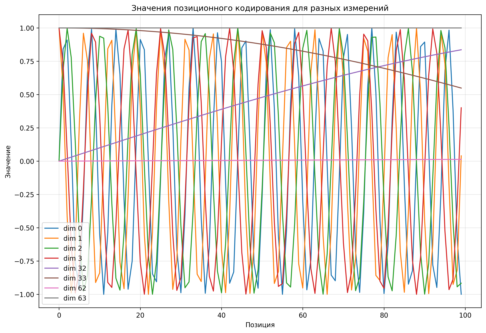
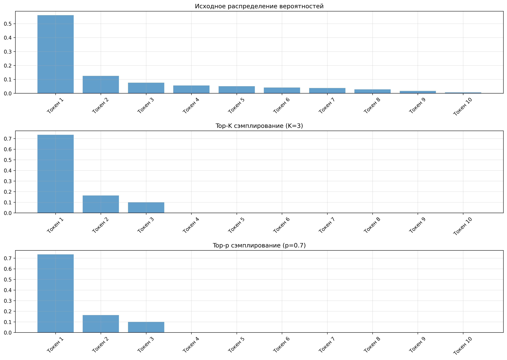
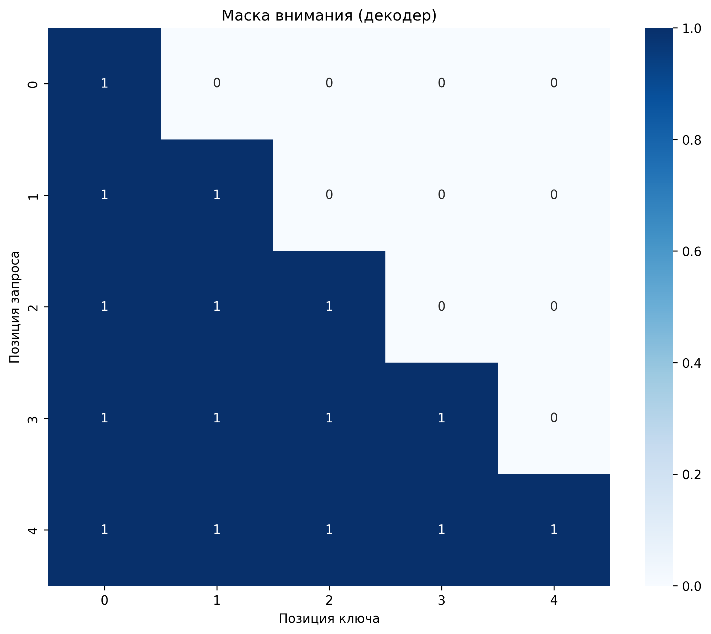
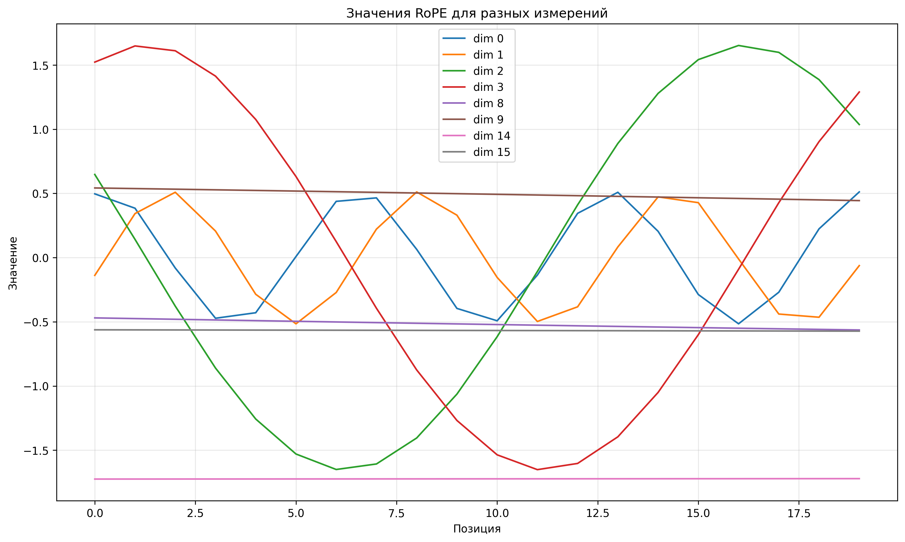
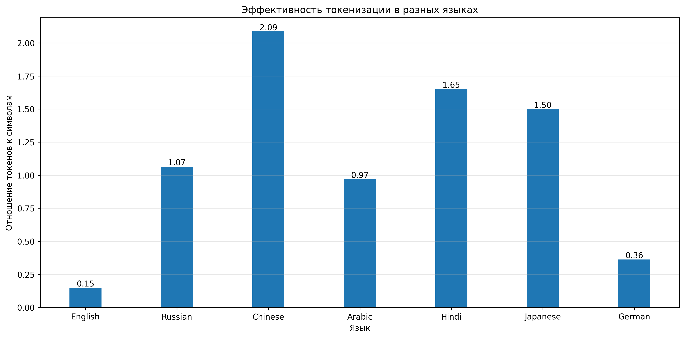
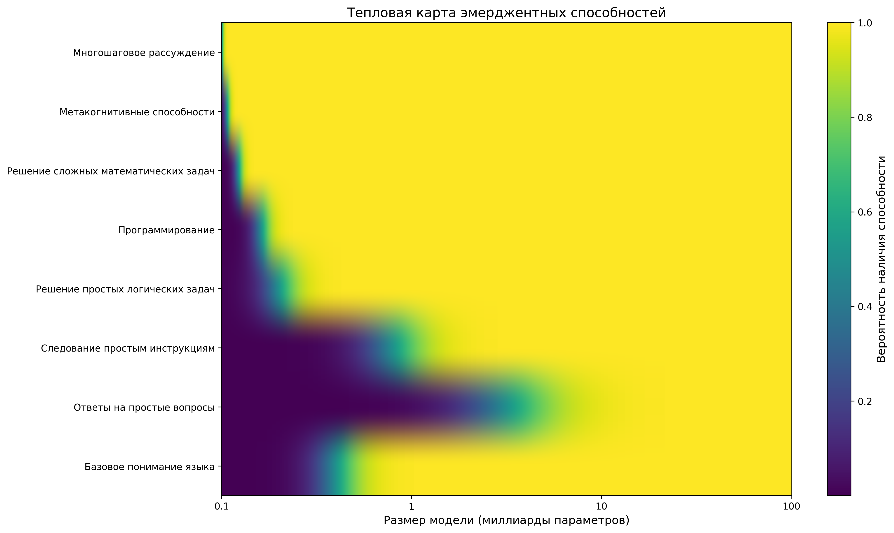

1. Введение
Нейронные сети — это вычислительные системы, вдохновленные биологическими нейронными сетями, составляющими мозг животных. Эти системы "обучаются" выполнять задачи, анализируя примеры, обычно без специального программирования под конкретную задачу. В этой лекции мы рассмотрим современные языковые модели (LLM), которые произвели революцию в области искусственного интеллекта.
Историческая перспектива
История нейронных сетей началась в 1943 году, когда Уоррен Маккаллок и Уолтер Питтс предложили первую математическую модель нейрона. Однако настоящий прорыв произошел в 2010-х годах с появлением глубокого обучения, которое позволило создавать многослойные нейронные сети, способные решать сложные задачи.
Ключевые вехи в развитии нейронных сетей:
- 1957: Перцептрон Фрэнка Розенблатта
- 1986: Алгоритм обратного распространения ошибки
- 2006: Глубокое обучение и предварительное обучение слоев
- 2012: AlexNet — прорыв в компьютерном зрении
- 2014: GAN (Generative Adversarial Networks)
- 2017: Трансформеры и механизм внимания
- 2018: BERT и предварительно обученные языковые модели
- 2020: GPT-3 и масштабирование языковых моделей
- 2022-2023: Появление мультимодальных моделей (GPT-4, Claude, Gemini)
Математические основы нейронных сетей
В основе нейронных сетей лежит концепция искусственного нейрона, который можно представить как математическую функцию, принимающую несколько входных сигналов и генерирующую один выходной сигнал.
Математически нейрон можно описать следующим образом:
\[ y = f\left(\sum_{i=1}^{n} w_i x_i + b\right) \]где:
- \(x_i\) — входные сигналы
- \(w_i\) — веса синаптических связей
- \(b\) — смещение (bias)
- \(f\) — функция активации
- \(y\) — выходной сигнал нейрона
Функция активации вводит нелинейность в модель, что позволяет нейронной сети аппроксимировать сложные функции. Наиболее распространенные функции активации:
Сигмоидная функция:
\[ \sigma(x) = \frac{1}{1 + e^{-x}} \]Гиперболический тангенс:
\[ \tanh(x) = \frac{e^x - e^{-x}}{e^x + e^{-x}} \]ReLU (Rectified Linear Unit):
\[ \text{ReLU}(x) = \max(0, x) \]GELU (Gaussian Error Linear Unit) — часто используется в современных трансформерах:
\[ \text{GELU}(x) = x \cdot \Phi(x) \]где \(\Phi(x)\) — кумулятивная функция распределения стандартного нормального распределения.
Архитектуры нейронных сетей
Существует множество архитектур нейронных сетей, каждая из которых предназначена для решения определенных задач:
- Многослойный перцептрон (MLP) — классическая полносвязная нейронная сеть
- Сверточные нейронные сети (CNN) — специализируются на обработке данных с сеточной топологией (изображения)
- Рекуррентные нейронные сети (RNN) — обрабатывают последовательные данные, имеют "память"
- LSTM и GRU — улучшенные версии RNN, решающие проблему затухающего градиента
- Трансформеры — архитектура, основанная на механизме внимания, революционизировавшая обработку естественного языка
В этой лекции мы сосредоточимся на архитектуре трансформеров, которая лежит в основе современных языковых моделей, таких как GPT, Llama, Claude и других.
Трансформеры: революция в обработке естественного языка
Архитектура трансформеров, представленная в статье "Attention Is All You Need" (2017), произвела революцию в области обработки естественного языка. Ключевой инновацией трансформеров стал механизм самовнимания (self-attention), который позволяет модели учитывать взаимосвязи между всеми словами в предложении, независимо от их расстояния друг от друга.
Механизм внимания можно описать следующим образом:
\[ \text{Attention}(Q, K, V) = \text{softmax}\left(\frac{QK^T}{\sqrt{d_k}}\right)V \]где:
- \(Q\) — матрица запросов (queries)
- \(K\) — матрица ключей (keys)
- \(V\) — матрица значений (values)
- \(d_k\) — размерность ключей
Трансформеры используют многоголовое внимание (multi-head attention), которое позволяет модели одновременно фокусироваться на информации из разных представлений подпространств.
Современные языковые модели (LLM) основаны на архитектуре трансформеров, но используют только декодерную часть (GPT) или только энкодерную часть (BERT). Модели типа GPT (Generative Pre-trained Transformer) являются авторегрессивными, то есть они генерируют текст последовательно, слово за словом, основываясь на предыдущем контексте.
В следующих разделах мы подробно рассмотрим, как работают современные языковые модели, начиная с данных, используемых для их обучения, и заканчивая сложными методами обучения с подкреплением.
2. Данные предобучения (интернет)
Современные языковые модели (LLM) обучаются на огромных массивах текстовых данных, собранных из интернета. Эти данные включают в себя книги, статьи, веб-страницы, код, научные публикации и многое другое. Качество и разнообразие этих данных напрямую влияют на способности и ограничения обученной модели.
Источники данных для предобучения
Основные источники данных для предобучения языковых моделей включают:
- Common Crawl — архив веб-страниц, содержащий петабайты данных
- WebText — набор данных, созданный OpenAI, включающий веб-страницы, на которые ссылаются в Reddit
- Books1 и Books2 — коллекции книг различных жанров
- Wikipedia — энциклопедические статьи на разных языках
- GitHub — исходный код программ на различных языках программирования
- ArXiv — научные статьи
- StackExchange — вопросы и ответы с технических форумов
Масштаб данных
Масштаб данных для предобучения современных LLM поистине огромен. Например:
- GPT-3 был обучен на 570 ГБ текста, что составляет примерно 300 миллиардов токенов
- Llama 2 использовал 2 триллиона токенов для предобучения
- GPT-4 и Claude 2 предположительно обучались на еще больших объемах данных
Предварительная обработка данных
Перед использованием для обучения, данные проходят несколько этапов обработки:
- Очистка — удаление HTML-тегов, рекламы, дубликатов и низкокачественного контента
- Дедупликация — удаление повторяющихся фрагментов текста
- Фильтрация — отбор качественного контента с помощью классификаторов
- Токенизация — разбиение текста на токены (подробнее в следующем разделе)
- Форматирование — преобразование в формат, подходящий для обучения модели
Математическая модель языка
С математической точки зрения, языковая модель представляет собой вероятностное распределение над последовательностями токенов. Цель предобучения — научить модель предсказывать следующий токен в последовательности, учитывая предыдущие токены.
Формально, языковая модель оценивает условную вероятность:
\[ P(x_t \mid x_{<t}) \]
где \(x_t\) — токен в позиции \(t\), а \(x_{<t}\) — все предыдущие токены.
Вероятность всей последовательности токенов можно представить как:
\[ P(x_1, x_2, \ldots, x_n) = \prod_{t=1}^{n} P(x_t \mid x_{<t}) \]
Сигмоидная функция:
Гиперболический тангенс:
Проблема распределения данных
Одна из ключевых проблем при обучении LLM — это несбалансированность данных. Интернет содержит непропорционально большое количество определенных типов контента (например, развлекательного), в то время как другие типы (например, научные статьи) представлены в меньшем объеме.
Для решения этой проблемы исследователи используют различные стратегии:
- Взвешивание данных — придание большего веса редким, но ценным типам контента
- Курирование данных — ручной отбор высококачественных источников
- Синтетические данные — генерация дополнительных данных для недопредставленных категорий
Качество данных для предобучения часто важнее их количества. Модели, обученные на меньшем, но более качественном наборе данных, могут превосходить модели, обученные на больших, но зашумленных данных. Например, модель Chinchilla от DeepMind показала, что оптимальное соотношение между размером модели и объемом данных — примерно 20 токенов на параметр.
Влияние данных на способности модели
Данные, на которых обучается модель, напрямую определяют ее способности и ограничения:
- Модель не может знать информацию, которой не было в обучающих данных
- Если определенный тип контента редко встречается в данных, модель будет хуже работать с ним
- Предвзятости и стереотипы, присутствующие в данных, могут быть усвоены моделью
- Качество генерации на разных языках зависит от их представленности в обучающих данных
В следующем разделе мы рассмотрим, как текстовые данные преобразуются в токены — базовые единицы, с которыми работают языковые модели.
3. Токенизация
Токенизация — это процесс разбиения текста на базовые единицы (токены), с которыми работает языковая модель. Токены могут представлять собой слова, части слов, символы или последовательности символов. Эффективная токенизация критически важна для производительности и возможностей языковой модели.
Основные подходы к токенизации
Существует несколько основных подходов к токенизации текста:
- Посимвольная токенизация — каждый символ является отдельным токеном
- Пословная токенизация — каждое слово является отдельным токеном
- Подсловная токенизация — слова разбиваются на части (морфемы, слоги и т.д.)
- Байт-ориентированная токенизация — текст представляется в виде последовательности байтов
Современные LLM в основном используют подсловную токенизацию, так как она обеспечивает хороший баланс между размером словаря и способностью представлять редкие слова.
Алгоритмы токенизации
Наиболее распространенные алгоритмы токенизации в современных LLM:
- Byte-Pair Encoding (BPE) — используется в GPT моделях
- WordPiece — используется в BERT
- SentencePiece — используется в T5 и некоторых версиях Llama
- Unigram — вариант, используемый в некоторых моделях
Byte-Pair Encoding (BPE)
BPE — это алгоритм сжатия данных, адаптированный для токенизации текста. Он работает итеративно, начиная с базового словаря (обычно отдельных символов или байтов) и последовательно объединяя наиболее часто встречающиеся пары.
def train_bpe(text, vocab_size):
# Инициализация словаря отдельными символами
vocab = set(char for char in text)
# Разбиение текста на символы
words = text.split()
splits = {word: [c for c in word] for word in words}
# Итеративное объединение наиболее частых пар
while len(vocab) < vocab_size:
# Подсчет частоты пар символов
pairs = get_pairs(splits)
if not pairs:
break
# Выбор наиболее частой пары
best_pair = max(pairs, key=pairs.get)
# Объединение пары в новый токен
new_token = ''.join(best_pair)
vocab.add(new_token)
# Обновление разбиений
update_splits(splits, best_pair, new_token)
return vocab, get_encoder(vocab)
Рассмотрим пример работы BPE на простом тексте:
Исходный текст: "low lower lowest"
Начальный словарь: {'l', 'o', 'w', 'e', 'r', ' ', 's', 't'}
Шаг 1: Наиболее частая пара — 'l' и 'o', объединяем в 'lo'
Словарь: {'l', 'o', 'w', 'e', 'r', ' ', 's', 't', 'lo'}
Текст: "lo w lo wer lo west"
Шаг 2: Наиболее частая пара — 'lo' и 'w', объединяем в 'low'
Словарь: {'l', 'o', 'w', 'e', 'r', ' ', 's', 't', 'lo', 'low'}
Текст: "low low er low est"
И так далее...
Математическая формализация BPE
Формально, BPE можно описать как жадный алгоритм, который на каждом шаге выбирает пару символов, максимизирующую функцию выигрыша:
где:
- \(\text{count}(xy)\) — частота встречаемости пары \(xy\) в тексте
- \(\text{count}(x)\) и \(\text{count}(y)\) — частоты отдельных символов
- \(\text{cost}(x)\), \(\text{cost}(y)\) и \(\text{cost}(xy)\) — стоимость кодирования
Токенизация в современных LLM
В современных LLM размер словаря токенов обычно составляет от 32,000 до 100,000 токенов. Например:
- GPT-2: 50,257 токенов
- GPT-3: 100,277 токенов
- Llama 2: 32,000 токенов
- Claude: около 100,000 токенов
Каждый токен в словаре представлен вектором в пространстве эмбеддингов. Размерность этого пространства является важным гиперпараметром модели:
- GPT-2 (1.5B): 1,600-мерные эмбеддинги
- GPT-3 (175B): 12,288-мерные эмбеддинги
- Llama 2 (70B): 8,192-мерные эмбеддинги
Особенности и проблемы токенизации
Токенизация имеет ряд особенностей и проблем, которые важно учитывать при работе с LLM:
- Эффективность для разных языков — токенизаторы, обученные преимущественно на английском тексте, могут неэффективно работать с другими языками
- Обработка редких слов — редкие слова часто разбиваются на множество токенов, что может затруднять их понимание моделью
- Контекстное окно — максимальное количество токенов, которое модель может обрабатывать за один раз (например, 2048 для GPT-3, 4096 для GPT-3.5, 8192 для GPT-4)
- Специальные токены — токены с особым значением, такие как [START], [END], [PAD], [MASK]
Токенизация напрямую влияет на то, как модель "видит" и понимает текст. Неэффективная токенизация может привести к потере информации или неправильному пониманию контекста. Кроме того, стоимость использования коммерческих API часто рассчитывается на основе количества токенов, поэтому эффективная токенизация также имеет экономическое значение.
В следующем разделе мы рассмотрим, как токенизированный текст подается на вход нейросети и как формируется выходной результат.
4. Ввод и вывод нейросети
Понимание того, как данные подаются на вход нейросети и как формируется выходной результат, критически важно для понимания работы языковых моделей. В этом разделе мы рассмотрим процессы преобразования текста в числовые представления и обратно.
Преобразование токенов в эмбеддинги
После токенизации текста каждый токен должен быть преобразован в числовой вектор, который может обрабатываться нейронной сетью. Это преобразование выполняется с помощью слоя эмбеддингов (embedding layer).
Математически, слой эмбеддингов можно представить как матрицу \(E \in \mathbb{R}^{|V| \times d}\), где:
- \(|V|\) — размер словаря токенов
- \(d\) — размерность пространства эмбеддингов
Для токена с индексом \(i\) его эмбеддинг получается как:
\[ \mathbf{e}_i = E[i, :] \]Эмбеддинги обучаются вместе с остальными параметрами модели и представляют собой плотные векторные представления токенов, которые отражают их семантические и синтаксические свойства.
Позиционное кодирование
В отличие от рекуррентных нейронных сетей, трансформеры обрабатывают все токены параллельно, что требует явного указания позиции каждого токена в последовательности. Для этого используется позиционное кодирование (positional encoding).
В оригинальной архитектуре трансформера используется синусоидальное позиционное кодирование:
\[ PE_{(pos, 2i)} = \sin\left(\frac{pos}{10000^{2i/d}}\right) \] \[ PE_{(pos, 2i+1)} = \cos\left(\frac{pos}{10000^{2i/d}}\right) \]где:
- \(pos\) — позиция токена в последовательности
- \(i\) — индекс измерения в векторе эмбеддинга
- \(d\) — размерность пространства эмбеддингов
Позиционные эмбеддинги добавляются к эмбеддингам токенов, чтобы получить входные векторы для трансформера:
где:
- \(\mathbf{x}_t\) — входной вектор для токена в позиции \(t\)
- \(\mathbf{e}_t\) — эмбеддинг токена
- \(\mathbf{p}_t\) — позиционный эмбеддинг

Процесс ввода данных в модель
Полный процесс подготовки входных данных для языковой модели включает следующие шаги:
- Токенизация текста с помощью соответствующего токенизатора
- Преобразование токенов в индексы словаря
- Преобразование индексов в эмбеддинги с помощью слоя эмбеддингов
- Добавление позиционного кодирования к эмбеддингам
- Применение нормализации и регуляризации (например, dropout)
Формирование выходных данных
На выходе языковой модели для каждого токена в последовательности получается вектор логитов размерности, равной размеру словаря. Эти логиты преобразуются в вероятности с помощью функции softmax:
\[ P(x_t = v_j \mid x_{<t}) = \frac{\exp(z_{t,j})}{\sum_{k=1}^{|V|} \exp(z_{t,k})} \]
где:
- \(z_{t,j}\) — логит для токена \(v_j\) в позиции \(t\)
- \(|V|\) — размер словаря
Для генерации текста используется автореггрессивный подход, при котором модель последовательно предсказывает следующий токен, добавляет его к контексту и использует обновленный контекст для предсказания следующего токена.
Стратегии сэмплирования
Существует несколько стратегий выбора следующего токена на основе распределения вероятностей:
- Жадное сэмплирование (Greedy Sampling) — выбор токена с наибольшей вероятностью
- Сэмплирование с температурой (Temperature Sampling) — регулирование "креативности" модели
- Top-K сэмплирование — выбор из K наиболее вероятных токенов
- Top-p (Nucleus) сэмплирование — выбор из минимального набора токенов, суммарная вероятность которых превышает p
- Beam Search — поиск наиболее вероятной последовательности токенов
Сэмплирование с температурой модифицирует распределение вероятностей следующим образом:
\[ P_{\tau}(x_t = v_j | x_{<t}) = \frac{\exp(z_{t,j}/\tau)}{\sum_{k=1}^{|V|} \exp(z_{t,k}/\tau)} \]где \(\tau\) — параметр температуры:
- \(\tau < 1\) — более "консервативные" предсказания (выше вероятность частых токенов)
- \(\tau > 1\) — более "креативные" предсказания (более равномерное распределение)
- \(\tau = 1\) — исходное распределение

Декодирование выходных данных
После генерации последовательности токенов необходимо преобразовать их обратно в текст. Этот процесс называется декодированием и выполняется с помощью того же токенизатора, который использовался для токенизации входного текста.
Декодирование может быть нетривиальной задачей, особенно для языков с нелатинскими алфавитами или при использовании специальных токенов. Токенизаторы обычно предоставляют методы для корректного декодирования, учитывающие особенности конкретного языка и формата данных.
Процесс ввода и вывода данных в нейросеть является критически важным для понимания работы языковых моделей. Эффективность токенизации, качество эмбеддингов и стратегии сэмплирования напрямую влияют на производительность и качество генерируемого текста. В следующем разделе мы рассмотрим внутреннее устройство нейросети, которое обрабатывает эти входные данные.
5. Внутреннее устройство нейросети
В этом разделе мы подробно рассмотрим внутреннее устройство современных языковых моделей, основанных на архитектуре трансформеров. Понимание этих механизмов критически важно для эффективной работы с нейросетями и их оптимизации.
Архитектура трансформера
Трансформер, представленный в статье "Attention Is All You Need" (2017), состоит из двух основных компонентов: энкодера и декодера. Однако современные языковые модели часто используют только одну из этих частей:
- Модели только с энкодером (например, BERT) — специализируются на понимании текста
- Модели только с декодером (например, GPT) — специализируются на генерации текста
- Полные модели энкодер-декодер (например, T5) — используются для задач преобразования текста (перевод, суммаризация)
Мы сосредоточимся на моделях типа GPT, которые используют только декодерную часть трансформера.
Основные компоненты декодера трансформера
Декодер трансформера состоит из нескольких идентичных слоев, каждый из которых содержит следующие подкомпоненты:
- Маскированное многоголовое самовнимание (Masked Multi-Head Self-Attention)
- Нормализация слоя (Layer Normalization)
- Полносвязная нейронная сеть (Feed-Forward Neural Network)
- Остаточные соединения (Residual Connections)
Механизм самовнимания
Механизм самовнимания — ключевой компонент трансформера, позволяющий модели учитывать взаимосвязи между всеми токенами в последовательности.
Для каждого токена вычисляются три вектора: запрос (query), ключ (key) и значение (value):
\[ \mathbf{q}_i = \mathbf{x}_i W^Q \] \[ \mathbf{k}_i = \mathbf{x}_i W^K \] \[ \mathbf{v}_i = \mathbf{x}_i W^V \]где \(\mathbf{x}_i\) — входной вектор для токена \(i\), а \(W^Q\), \(W^K\) и \(W^V\) — обучаемые матрицы весов.
Затем вычисляются веса внимания между всеми парами токенов:
\[ e_{ij} = \frac{\mathbf{q}_i \cdot \mathbf{k}_j}{\sqrt{d_k}} \]где \(d_k\) — размерность векторов ключей.
В декодере используется маскированное внимание, которое предотвращает доступ к будущим токенам:
\[ e_{ij} = \begin{cases} \frac{\mathbf{q}_i \cdot \mathbf{k}_j}{\sqrt{d_k}} & \text{если } j \leq i \\ -\infty & \text{если } j > i \end{cases} \]Веса внимания нормализуются с помощью функции softmax:
\[ \alpha_{ij} = \frac{\exp(e_{ij})}{\sum_{k=1}^{n} \exp(e_{ik})} \]Наконец, выходной вектор для каждого токена вычисляется как взвешенная сумма векторов значений:
\[ \mathbf{o}_i = \sum_{j=1}^{n} \alpha_{ij} \mathbf{v}_j \]Многоголовое внимание
Многоголовое внимание (Multi-Head Attention) позволяет модели одновременно фокусироваться на информации из разных представлений подпространств.
Для каждой головы \(h\) вычисляются свои матрицы весов \(W^Q_h\), \(W^K_h\) и \(W^V_h\), и соответствующие векторы запросов, ключей и значений:
\[ \mathbf{q}^h_i = \mathbf{x}_i W^Q_h \] \[ \mathbf{k}^h_i = \mathbf{x}_i W^K_h \] \[ \mathbf{v}^h_i = \mathbf{x}_i W^V_h \]Для каждой головы вычисляется свой выходной вектор:
\[ \mathbf{o}^h_i = \sum_{j=1}^{n} \alpha^h_{ij} \mathbf{v}^h_j \]Выходные векторы всех голов конкатенируются и проецируются в исходное пространство:
\[ \mathbf{o}_i = \text{Concat}(\mathbf{o}^1_i, \mathbf{o}^2_i, \ldots, \mathbf{o}^h_i) W^O \]где \(W^O\) — обучаемая матрица весов.

Полносвязная нейронная сеть
После слоя внимания каждый токен обрабатывается полносвязной нейронной сетью (Feed-Forward Neural Network, FFN), которая применяется к каждой позиции независимо.
FFN состоит из двух линейных преобразований с нелинейной функцией активации между ними:
\[ \text{FFN}(\mathbf{x}) = \max(0, \mathbf{x}W_1 + \mathbf{b}_1)W_2 + \mathbf{b}_2 \]или с использованием GELU:
\[ \text{FFN}(\mathbf{x}) = \text{GELU}(\mathbf{x}W_1 + \mathbf{b}_1)W_2 + \mathbf{b}_2 \]Обычно размерность скрытого слоя FFN в 4 раза больше размерности модели. Например, если размерность модели \(d_{model} = 768\), то размерность скрытого слоя FFN будет \(d_{ff} = 3072\).
Нормализация слоя
Нормализация слоя (Layer Normalization) используется для стабилизации обучения глубоких нейронных сетей. В отличие от пакетной нормализации (Batch Normalization), которая нормализует по мини-батчу, нормализация слоя нормализует активации по признакам.
Нормализация слоя вычисляется следующим образом:
\[ \text{LayerNorm}(\mathbf{x}) = \gamma \odot \frac{\mathbf{x} - \mu}{\sqrt{\sigma^2 + \epsilon}} + \beta \]где:
- \(\mu\) и \(\sigma\) — среднее значение и стандартное отклонение активаций по признакам
- \(\gamma\) и \(\beta\) — обучаемые параметры масштаба и сдвига
- \(\epsilon\) — малая константа для численной стабильности
- \(\odot\) — поэлементное умножение
Остаточные соединения
Остаточные соединения (Residual Connections) используются для улучшения градиентного потока через глубокие нейронные сети. Они добавляют входные данные подслоя к его выходным данным:
В современных архитектурах трансформеров часто используется модификация, известная как "Pre-LayerNorm", где нормализация слоя применяется перед подслоем, а не после:
Полная архитектура декодера
Полная архитектура декодера трансформера может быть представлена следующим образом:
Для каждого слоя \(l\) из \(L\) слоев:
\[ \mathbf{h}^{l}_i = \mathbf{h}^{l-1}_i + \text{MultiHeadAttention}(\text{LayerNorm}(\mathbf{h}^{l-1}_i)) \] \[ \mathbf{h}^{l}_i = \mathbf{h}^{l}_i + \text{FFN}(\text{LayerNorm}(\mathbf{h}^{l}_i)) \]где \(\mathbf{h}^{0}_i = \mathbf{x}_i\) — входной вектор для токена \(i\).
Параметры современных языковых моделей
Современные языковые модели характеризуются следующими параметрами:
- Количество параметров — общее количество обучаемых весов модели
- Размерность модели (\(d_{model}\)) — размерность векторов, представляющих токены
- Количество слоев (\(L\)) — количество повторяющихся блоков декодера
- Количество голов внимания (\(h\)) — количество параллельных механизмов внимания
- Размерность FFN (\(d_{ff}\)) — размерность скрытого слоя полносвязной сети
Примеры параметров для некоторых известных моделей:
| Модель | Параметры | Размерность модели | Слои | Головы внимания |
|---|---|---|---|---|
| GPT-2 Small | 124M | 768 | 12 | 12 |
| GPT-2 Medium | 355M | 1024 | 24 | 16 |
| GPT-2 Large | 774M | 1280 | 36 | 20 |
| GPT-2 XL | 1.5B | 1600 | 48 | 25 |
| GPT-3 | 175B | 12288 | 96 | 96 |
| Llama 2 7B | 7B | 4096 | 32 | 32 |
| Llama 2 70B | 70B | 8192 | 80 | 64 |
Вычислительная сложность
Вычислительная сложность трансформера определяется в основном механизмом внимания, который имеет квадратичную зависимость от длины последовательности:
Сложность самовнимания:
\[ O(n^2 \cdot d) \]где \(n\) — длина последовательности, а \(d\) — размерность модели.
Сложность полносвязной сети:
\[ O(n \cdot d^2) \]Эта квадратичная зависимость от длины последовательности является основным ограничением для обработки длинных текстов. Для решения этой проблемы разрабатываются различные методы эффективного внимания, такие как Sparse Attention, Longformer, Reformer и другие.
Внутреннее устройство нейросети определяет ее способности и ограничения. Понимание архитектуры трансформера и его компонентов позволяет эффективно использовать языковые модели и разрабатывать новые архитектуры для решения специфических задач.
5.1 Современные архитектуры: за пределами базовых трансформеров
Хотя базовая архитектура трансформера, описанная в статье "Attention Is All You Need" (2017), остается основой современных языковых моделей, в последние годы были разработаны значительные усовершенствования, которые позволили масштабировать модели до триллионов параметров и значительно улучшить их производительность.
Mixture of Experts (MoE)
Одной из наиболее значимых современных архитектурных инноваций является Mixture of Experts (MoE) — подход к разреженным нейронным сетям, который позволяет масштабировать модели до триллионов параметров без пропорционального увеличения вычислительных затрат.
Основная идея MoE заключается в следующем: вместо того чтобы активировать всю нейронную сеть для каждого входного токена, модель динамически выбирает только небольшое подмножество параметров ("экспертов") для обработки каждого токена.
Математически MoE-слой можно описать так:
\[ y = \sum_{i=1}^{n} G(x)_i \cdot E_i(x) \]где:
- \(x\) — входной вектор
- \(E_i\) — i-й эксперт (обычно полносвязная нейронная сеть)
- \(G(x)\) — функция маршрутизации, определяющая веса для каждого эксперта
- \(n\) — количество экспертов
- \(y\) — выходной вектор
Ключевые варианты и усовершенствования MoE:
- Switch Transformers (Google, 2021) — использование жесткой маршрутизации, где каждый токен направляется только к одному эксперту
- Sparse MoE (Google, 2022) — улучшенные алгоритмы балансировки нагрузки между экспертами
- Expert Choice Routing (Microsoft/Meta, 2023-2024) — вместо того чтобы токены выбирали экспертов, эксперты выбирают токены, что улучшает балансировку нагрузки
- Mixtral 8x7B (Mistral AI, 2023) — открытая модель с архитектурой MoE, где каждый слой содержит 8 экспертов, но для каждого токена активируется только 2
- Claude 3 Opus (Anthropic) и GPT-4 (OpenAI) — предположительно используют вариации MoE-архитектуры
Архитектура MoE позволяет значительно увеличить количество параметров модели (до триллионов) без пропорционального увеличения вычислительных затрат при инференсе, поскольку для каждого токена активируется лишь небольшая часть параметров. Это приводит к более эффективным моделям с точки зрения соотношения количества параметров к вычислительным затратам.
Rotary Position Embedding (RoPE)
Важным усовершенствованием трансформеров стал метод позиционного кодирования Rotary Position Embedding (RoPE), предложенный в 2021 году. RoPE использует математические свойства комплексных чисел для кодирования позиций токенов, что позволяет модели лучше понимать относительные позиции слов в тексте и экстраполировать на контексты длиннее, чем в обучающих данных.
RoPE применяет поворот в комплексной плоскости к каждому элементу векторов запросов и ключей:
\[ \mathbf{R}_{\theta, m}(x) = \begin{bmatrix} \cos m\theta & -\sin m\theta \\ \sin m\theta & \cos m\theta \end{bmatrix} \cdot \mathbf{x} \]где \(m\) — позиция токена, \(\theta\) — фиксированная константа, а \(\mathbf{x}\) — элемент вектора запроса или ключа.
RoPE используется во многих современных моделях, включая семейства Llama, Mistral, Gemma и др.
Multi-query Attention
Для ускорения инференса в современных моделях часто используется механизм Multi-query Attention (MQA) и его вариации. В отличие от классического мультиголового внимания, где для каждой головы внимания есть отдельные проекции запросов, ключей и значений, в MQA используется общий набор ключей и значений для всех голов, что значительно снижает объем вычислений и требуемую память.
Классическое мультиголовое внимание:
\[ \text{головы}_i = \text{Attention}(QW_i^Q, KW_i^K, VW_i^V) \]Multi-query Attention:
\[ \text{головы}_i = \text{Attention}(QW_i^Q, KW^K, VW^V) \]где \(W_i^Q\) — матрица проекции для запросов i-й головы, а \(W^K\) и \(W^V\) — общие матрицы проекций для ключей и значений.
Этот подход существенно снижает затраты памяти при инференсе, особенно с использованием KV-кэширования.
Sliding Window Attention
Для работы с длинным контекстом современные модели часто используют механизмы "скользящего окна" (sliding window attention), которые ограничивают внимание каждого токена только к определенному окну токенов вокруг него, что снижает вычислительную сложность с квадратичной до линейной относительно длины последовательности.
Формально, для токена в позиции \(i\), маска скользящего окна \(M\) определяется как:
\[ M_{i,j} = \begin{cases} 0 & \text{если } j \in [i - w, i] \\ -\infty & \text{иначе} \end{cases} \]где \(w\) — размер окна до текущей позиции.
Этот подход позволяет обрабатывать очень длинные последовательности (сотни тысяч токенов) без квадратичного роста вычислительных затрат и памяти.
Архитектуры для мультимодальных моделей
Современные мультимодальные модели, такие как GPT-4, Claude 3, Gemini, используют сложные архитектуры, объединяющие обработку текста, изображений, аудио и других модальностей. Ключевые инновации включают:
- Vision Transformers (ViT) — адаптация трансформеров для обработки изображений путем разбиения изображения на патчи
- Perceiver — архитектура, которая преобразует входные данные любой модальности в латентное представление фиксированной размерности
- CLIP/ALIGN — модели, обученные связывать текстовые и визуальные представления
- Fusion-in-Decoder (FiD) — архитектура для эффективного объединения информации из разных модальностей
Хотя архитектурные инновации значительно улучшили производительность моделей, важно понимать их фундаментальные ограничения. Масштабирование моделей с использованием MoE и других техник сталкивается с вызовами:
- Сложность обучения и балансировки нагрузки между экспертами
- Потенциальная нестабильность и непоследовательность в использовании экспертов
- Отсутствие теоретического обоснования для многих эвристик в архитектурных решениях
- Необходимость огромных вычислительных ресурсов для обучения, что ограничивает исследования небольшими организациями
Современные архитектурные решения продолжают быстро развиваться, и многие аспекты самых продвинутых моделей остаются закрытыми коммерческой тайной, что создает асимметрию знаний между крупными корпорациями и академическим сообществом.
6. Инференс
Инференс (вывод) — это процесс использования обученной модели для генерации текста или решения других задач. В этом разделе мы рассмотрим, как происходит инференс в современных языковых моделях, какие оптимизации применяются и с какими ограничениями приходится сталкиваться.
Автореггрессивная генерация
Языковые модели типа GPT используют автореггрессивный подход к генерации текста. Это означает, что модель генерирует текст последовательно, токен за токеном, используя ранее сгенерированные токены как контекст для предсказания следующего токена.
Формально, вероятность последовательности токенов \(x_1, x_2, \ldots, x_n\) моделируется как:
\[ P(x_1, x_2, \ldots, x_n) = \prod_{t=1}^{n} P(x_t | x_1, x_2, \ldots, x_{t-1}) \]При инференсе для каждой позиции \(t\) модель вычисляет распределение вероятностей для следующего токена:
\[ P(x_t | x_1, x_2, \ldots, x_{t-1}) \]Затем из этого распределения выбирается токен (с использованием различных стратегий сэмплирования, описанных ранее), и процесс повторяется для следующей позиции.
Этапы инференса
Процесс инференса в языковой модели можно разделить на следующие этапы:
- Токенизация входного текста — преобразование входного текста (промпта) в последовательность токенов
- Преобразование токенов в эмбеддинги — получение векторных представлений токенов
- Добавление позиционного кодирования — учет позиций токенов в последовательности
- Прямой проход через слои модели — обработка последовательности слоями трансформера
- Предсказание следующего токена — вычисление распределения вероятностей для следующего токена
- Сэмплирование — выбор конкретного токена из распределения вероятностей
- Повторение шагов 2-6 — для каждого нового токена, пока не будет достигнуто условие остановки
- Декодирование — преобразование последовательности токенов обратно в текст
Кэширование ключей и значений
Одна из важных оптимизаций при инференсе — кэширование ключей и значений (KV-caching). Поскольку при автореггрессивной генерации контекст постоянно растет, но предыдущие токены не меняются, можно сохранять вычисленные ключи и значения для каждого слоя и головы внимания, чтобы не пересчитывать их для каждого нового токена.
Для каждого слоя \(l\) и головы внимания \(h\) мы сохраняем:
\[ K^{l,h} = [k^{l,h}_1, k^{l,h}_2, \ldots, k^{l,h}_t] \] \[ V^{l,h} = [v^{l,h}_1, v^{l,h}_2, \ldots, v^{l,h}_t] \]При генерации токена \(t+1\) мы вычисляем только новые ключ и значение:
\[ k^{l,h}_{t+1} = x^l_{t+1} W^{K,l,h} \] \[ v^{l,h}_{t+1} = x^l_{t+1} W^{V,l,h} \]И добавляем их к кэшу:
\[ K^{l,h} = [k^{l,h}_1, k^{l,h}_2, \ldots, k^{l,h}_t, k^{l,h}_{t+1}] \] \[ V^{l,h} = [v^{l,h}_1, v^{l,h}_2, \ldots, v^{l,h}_t, v^{l,h}_{t+1}] \]Это значительно ускоряет инференс, особенно для длинных последовательностей, так как вместо \(O(t^2)\) операций для каждого нового токена требуется только \(O(t)\) операций.
def inference_with_kv_cache(model, prompt_tokens, max_length):
# Инициализация
tokens = prompt_tokens.copy()
# Инициализация KV-кэша
kv_cache = initialize_empty_kv_cache(model.num_layers, model.num_heads)
# Обработка всего промпта за один проход
logits, kv_cache = model.forward(tokens, kv_cache)
# Автореггрессивная генерация
for i in range(len(tokens), max_length):
# Получение распределения вероятностей для следующего токена
next_token_logits = logits[-1]
# Сэмплирование следующего токена
next_token = sample_token(next_token_logits)
# Добавление токена к последовательности
tokens.append(next_token)
# Проверка условия остановки
if is_stop_condition(tokens, next_token):
break
# Обработка только нового токена (с использованием KV-кэша)
logits, kv_cache = model.forward([next_token], kv_cache)
return tokens
def initialize_empty_kv_cache(num_layers, num_heads):
"""Инициализация пустого KV-кэша для всех слоев и голов внимания"""
kv_cache = []
for l in range(num_layers):
layer_cache = []
for h in range(num_heads):
# Для каждой головы внимания в каждом слое создаем пустые списки для ключей и значений
head_cache = {'keys': [], 'values': []}
layer_cache.append(head_cache)
kv_cache.append(layer_cache)
return kv_cache
Оптимизации инференса
Помимо KV-кэширования, существуют и другие оптимизации, которые применяются для ускорения инференса:
- Батчинг — обработка нескольких запросов одновременно для лучшего использования параллелизма
- Квантизация — уменьшение точности представления весов модели (например, с FP32 до INT8 или даже INT4)
- Прунинг — удаление малозначимых весов или целых компонентов модели
- Дистилляция — обучение меньшей модели имитировать поведение большей модели
- Специализированное аппаратное обеспечение — использование GPU, TPU или специализированных ASIC для ускорения матричных операций
Квантизация
Квантизация — это процесс уменьшения точности представления весов модели. Это позволяет значительно уменьшить размер модели и ускорить инференс, но может привести к некоторому снижению качества.
Простейшая форма квантизации — линейная квантизация, которая отображает значения из исходного диапазона в целевой диапазон:
\[ q = \text{round}\left(\frac{x - x_{\min}}{x_{\max} - x_{\min}} \cdot (2^b - 1)\right) \]где:
- \(x\) — исходное значение
- \(x_{\min}\) и \(x_{\max}\) — минимальное и максимальное значения в исходном диапазоне
- \(b\) — количество бит для представления квантизованных значений
- \(q\) — квантизованное значение
Для восстановления приближенного исходного значения используется обратная формула:
\[ \hat{x} = \frac{q}{2^b - 1} \cdot (x_{\max} - x_{\min}) + x_{\min} \]Существуют более сложные методы квантизации, такие как квантизация с учетом распределения весов, квантизация с обучением (Quantization-Aware Training) и другие.
Ограничения инференса
Инференс в языковых моделях сталкивается с рядом ограничений:
- Ограничение контекстного окна — максимальное количество токенов, которое модель может обрабатывать за один раз
- Вычислительная сложность — квадратичная зависимость от длины последовательности
- Память — требования к памяти для хранения активаций и KV-кэша
- Детерминизм — сложность обеспечения воспроизводимых результатов при использовании стохастических методов сэмплирования
- Латентность — задержка при генерации каждого нового токена
Расширение контекстного окна
Одно из важных направлений исследований — расширение контекстного окна модели. Существует несколько подходов:
- Позиционное кодирование для длинных последовательностей — разработка новых методов позиционного кодирования, которые лучше масштабируются на длинные последовательности
- Эффективные механизмы внимания — разработка механизмов внимания с линейной или логарифмической сложностью вместо квадратичной
- Рекуррентная обработка — использование рекуррентных механизмов для обработки длинных последовательностей по частям
- Сжатие контекста — методы для сжатия длинного контекста в более компактное представление
Инференс — это не просто применение обученной модели, а сложный процесс, требующий оптимизации и учета различных ограничений. Понимание этого процесса позволяет эффективно использовать языковые модели и разрабатывать новые методы для улучшения их производительности и возможностей.
Специализированное аппаратное обеспечение
Для эффективного инференса языковых моделей используется специализированное аппаратное обеспечение:
- GPU (Graphics Processing Units) — графические процессоры, оптимизированные для параллельных вычислений
- TPU (Tensor Processing Units) — специализированные процессоры Google для тензорных операций
- ASIC (Application-Specific Integrated Circuits) — специализированные интегральные схемы, разработанные для конкретных задач
- FPGA (Field-Programmable Gate Arrays) — программируемые логические матрицы, которые можно настроить для конкретных задач
Каждый тип аппаратного обеспечения имеет свои преимущества и недостатки с точки зрения производительности, энергоэффективности, гибкости и стоимости.
В следующем разделе мы рассмотрим конкретный пример — архитектуру и инференс модели GPT-2.
6.1. Эффективные механизмы внимания
Стандартный механизм внимания имеет квадратичную сложность O(n²) относительно длины последовательности, что становится критическим ограничением при обработке длинных текстов. В этом разделе мы рассмотрим современные подходы к оптимизации механизма внимания, которые позволяют эффективно работать с гораздо более длинными контекстами.
Проблема квадратичной сложности
Стандартный механизм внимания требует вычисления весов внимания между каждой парой токенов, что приводит к квадратичной сложности по памяти и вычислениям:
Для последовательности длины \(n\) и размерности модели \(d\):
- Вычислительная сложность: \(O(n^2 \cdot d)\)
- Сложность по памяти: \(O(n^2)\)
Эта квадратичная зависимость становится критической при обработке длинных текстов, например, для контекста в 32K токенов требуется хранить матрицу внимания размером 32K × 32K.
Sparse Attention (разреженное внимание)
Идея разреженного внимания заключается в том, что каждый токен взаимодействует только с подмножеством других токенов, а не со всеми. Это снижает сложность до \(O(n \cdot k)\), где \(k\) — среднее количество токенов, с которыми взаимодействует каждый токен.
Основные подходы к разреженному вниманию:
- Fixed patterns — использование предопределенных шаблонов разреженности (локальное внимание, разреженное внимание с шагом и т.д.)
- Learned patterns — обучение модели определять, какие связи важны
- Dynamic patterns — динамическое определение важных связей во время инференса
Longformer
Longformer — это архитектура, представленная в 2020 году, которая комбинирует локальное скользящее окно внимания с глобальным вниманием для избранных токенов. Это позволяет эффективно обрабатывать документы длиной до 4096 токенов.
Внимание в Longformer можно представить как:
\[ A_{ij} = \begin{cases} \frac{\exp(e_{ij})}{\sum_{k \in \mathcal{N}_i} \exp(e_{ik})} & \text{если } j \in \mathcal{N}_i \text{ или } j \in \mathcal{G} \\ 0 & \text{иначе} \end{cases} \]где \(\mathcal{N}_i\) — локальное окно вокруг токена \(i\), а \(\mathcal{G}\) — множество глобальных токенов.
Transformer-XL
Transformer-XL решает проблему ограниченного контекста, используя механизм рекуррентной передачи состояния между сегментами. Это позволяет модели учитывать более широкий контекст без квадратичного роста вычислительных затрат.
В Transformer-XL скрытые состояния предыдущего сегмента кэшируются и используются при обработке текущего сегмента:
\[ \widetilde{h}^{l-1}_t = [h^{l-1}_{t-1}; h^{l-1}_t] \] \[ q^l_t = W^Q_l h^{l-1}_t, \quad k^l_t = W^K_l \widetilde{h}^{l-1}_t, \quad v^l_t = W^V_l \widetilde{h}^{l-1}_t \]где \(h^{l-1}_{t-1}\) — кэшированные состояния из предыдущего сегмента.
Reformer
Reformer, представленный в 2020 году, использует два ключевых приема для оптимизации памяти и вычислений:
- Locality-Sensitive Hashing (LSH) — для эффективного поиска схожих ключей и запросов
- Обратимые остаточные слои — для экономии памяти при обратном проходе
LSH группирует схожие ключи и запросы вместе, что позволяет вычислять внимание только между элементами в одной группе, снижая сложность до \(O(n \log n)\).
LSH-внимание можно представить как:
\[ \text{LSH-Attention}(Q, K, V) = \text{softmax}\left(\frac{QK^T \odot M}{\sqrt{d_k}}\right)V \]где \(M\) — маска, определяемая LSH-хешированием, а \(\odot\) — поэлементное умножение.
FlashAttention
FlashAttention, представленный в 2022 году, — это алгоритмическая оптимизация, которая фокусируется на эффективном использовании иерархии памяти в современных GPU. Вместо того чтобы вычислять и хранить полную матрицу внимания, FlashAttention разбивает вычисления на блоки, которые помещаются в быструю SRAM-память (регистры и разделяемую память).
Основные оптимизации FlashAttention:
- Блочное вычисление внимания для лучшего использования кэш-памяти
- Переиспользование данных в быстрой памяти для уменьшения доступов к глобальной памяти
- Оптимизация алгоритма для стабильных численных вычислений
FlashAttention достигает существенного ускорения (до 3-5 раз) и уменьшения использования памяти по сравнению с наивной реализацией внимания, не жертвуя при этом точностью.
Вместо хранения полной матрицы внимания \(A \in \mathbb{R}^{n \times n}\), FlashAttention вычисляет выход по блокам:
\[ O = \text{softmax}(QK^T / \sqrt{d})V = D^{-1}AV \]где \(D\) — диагональная матрица с суммами строк \(A\), а вычисления выполняются блочно для тайлов матриц \(Q\), \(K\) и \(V\).
FlashAttention 2
FlashAttention 2 — улучшенная версия алгоритма, представленная в 2023 году, с еще большей оптимизацией операций и лучшим использованием параллелизма. Она достигает дополнительного ускорения на 2-4x по сравнению с оригинальным FlashAttention.
Multi-query и Grouped-query Attention
Multi-query Attention (MQA) и Grouped-query Attention (GQA) — это оптимизации, направленные на уменьшение размера KV-кэша при инференсе, что особенно важно для длинных последовательностей.
- MQA — использует уникальные запросы для каждой головы внимания, но общие ключи и значения для всех голов
- GQA — компромисс между MQA и стандартным многоголовым вниманием, где головы группируются, и каждая группа имеет свои ключи и значения
Стандартное многоголовое внимание:
\[ \mathbf{q}^h_i = \mathbf{x}_i W^Q_h, \quad \mathbf{k}^h_i = \mathbf{x}_i W^K_h, \quad \mathbf{v}^h_i = \mathbf{x}_i W^V_h \]Multi-query Attention:
\[ \mathbf{q}^h_i = \mathbf{x}_i W^Q_h, \quad \mathbf{k}_i = \mathbf{x}_i W^K, \quad \mathbf{v}_i = \mathbf{x}_i W^V \]Grouped-query Attention:
\[ \mathbf{q}^h_i = \mathbf{x}_i W^Q_h, \quad \mathbf{k}^g_i = \mathbf{x}_i W^K_g, \quad \mathbf{v}^g_i = \mathbf{x}_i W^V_g \]где \(g\) — группа, к которой принадлежит голова \(h\).
Sliding Window Attention
Sliding Window Attention ограничивает поле зрения каждого токена локальным окном фиксированного размера, что линеаризует сложность вычислений и памяти относительно длины последовательности.
Для токена в позиции \(i\), маска скользящего окна \(M\) определяется как:
\[ M_{i,j} = \begin{cases} 0 & \text{если } |i-j| \leq w \\ -\infty & \text{иначе} \end{cases} \]где \(w\) — размер окна внимания.
Этот подход особенно эффективен для моделей с длинным контекстом, таких как Mistral и дообученные версии моделей Llama, которые могут обрабатывать сотни тысяч токенов.
Сравнение подходов к оптимизации внимания
| Метод | Сложность | Преимущества | Недостатки |
|---|---|---|---|
| Стандартное внимание | \(O(n^2 \cdot d)\) | Полная глобальная информация | Высокие требования к памяти и вычислениям |
| Sparse Attention | \(O(n \cdot k \cdot d)\) | Снижение вычислительных затрат | Потеря глобальной информации |
| Longformer | \(O(n \cdot w \cdot d)\) | Комбинация локального и глобального внимания | Сложная реализация |
| Reformer (LSH) | \(O(n \cdot \log n \cdot d)\) | Аппроксимация полного внимания | Сложные хеш-функции и потеря точности |
| FlashAttention | \(O(n^2 \cdot d)\) | Оптимизация для GPU и экономия памяти | Требует специализированной реализации |
| MQA/GQA | \(O(n^2 \cdot d)\) | Снижение требований к памяти для KV-кэша | Небольшая потеря качества |
| Sliding Window | \(O(n \cdot w \cdot d)\) | Линейная сложность | Ограниченный контекст для каждого токена |
Применение эффективных механизмов внимания в современных моделях
Современные языковые модели активно используют различные оптимизации механизма внимания:
- Llama 3 — использует GQA для оптимизации KV-кэша и FlashAttention для ускорения вычислений
- Mistral — комбинирует Sliding Window Attention с GQA для обработки длинных последовательностей
- Claude — предположительно использует комбинацию различных техник оптимизации внимания
- GLM — использует 2D Positional Encoding и Multi-Query Attention
С каждым новым поколением моделей появляются все более эффективные подходы к оптимизации механизма внимания, что позволяет обрабатывать более длинные контексты и снижать вычислительные затраты.
Эффективные механизмы внимания — это активная область исследований, которая постоянно развивается. Выбор конкретного метода зависит от специфики задачи, доступных вычислительных ресурсов и требований к качеству модели. Комбинирование различных подходов часто дает наилучшие результаты. Понимание этих механизмов позволяет более эффективно использовать языковые модели и создавать новые архитектуры для решения специфических задач.
7. GPT-2: обучение и инференс
В этом разделе мы рассмотрим конкретный пример языковой модели — GPT-2, разработанной OpenAI в 2019 году. Хотя эта модель уже не является самой современной, она хорошо документирована и представляет собой отличный пример для понимания принципов работы языковых моделей.
Архитектура GPT-2
GPT-2 (Generative Pre-trained Transformer 2) — это языковая модель, основанная на архитектуре трансформера, а точнее, на его декодерной части. Модель была выпущена в нескольких размерах:
- GPT-2 Small: 124 миллиона параметров
- GPT-2 Medium: 355 миллионов параметров
- GPT-2 Large: 774 миллиона параметров
- GPT-2 XL: 1.5 миллиарда параметров
Основные параметры архитектуры GPT-2 XL:
- Размерность модели (\(d_{model}\)): 1600
- Количество слоев: 48
- Количество голов внимания: 25
- Размерность FFN (\(d_{ff}\)): 6400
- Размер словаря: 50,257 токенов
- Максимальная длина последовательности: 1024 токена
Обучение GPT-2
GPT-2 была обучена на наборе данных WebText, который содержал около 40 ГБ текста из интернета. Обучение проходило в два этапа:
- Предобучение — обучение модели предсказывать следующий токен в последовательности на большом корпусе текстов
- Тонкая настройка — адаптация модели для конкретных задач (хотя для GPT-2 этот этап был минимальным, так как модель была предназначена для общего использования)
Функция потерь при обучении — это отрицательный логарифм правдоподобия:
Для оптимизации использовался алгоритм Adam с косинусным затуханием скорости обучения:
где:
- \(\eta_t\) — скорость обучения на шаге \(t\)
- \(\eta_{\min}\) и \(\eta_{\max}\) — минимальная и максимальная скорость обучения
- \(T\) — общее количество шагов обучения
Токенизация в GPT-2
GPT-2 использует токенизатор на основе Byte-Pair Encoding (BPE), но с одним важным отличием: он работает на уровне байтов, а не символов. Это позволяет модели обрабатывать любой текст, независимо от языка или кодировки.
Процесс токенизации в GPT-2:
- Текст кодируется в UTF-8, получая последовательность байтов
- К каждому байту добавляется префикс, чтобы отличить его от многобайтовых токенов
- Применяется алгоритм BPE для объединения часто встречающихся пар байтов
- Полученные токены преобразуются в индексы словаря
Инференс в GPT-2
Процесс инференса в GPT-2 следует общей схеме, описанной в предыдущем разделе:
- Токенизация входного текста
- Преобразование токенов в эмбеддинги
- Добавление позиционного кодирования
- Прямой проход через слои модели
- Предсказание следующего токена
- Сэмплирование и повторение процесса
GPT-2 использует маскированное самовнимание, чтобы предотвратить "подглядывание" в будущие токены:
где \(M\) — маска, которая принимает значение \(-\infty\) для позиций, которые не должны учитываться (будущие токены).
Для генерации текста GPT-2 использует различные стратегии сэмплирования, включая Top-K, Top-p (nucleus) и сэмплирование с температурой.
import torch
from transformers import GPT2LMHeadModel, GPT2Tokenizer
def generate_text(prompt, max_length=100, temperature=0.7, top_k=0, top_p=0.9):
"""
Генерация текста с использованием модели GPT-2
Параметры:
- prompt: начальный текст
- max_length: максимальная длина генерируемого текста
- temperature: температура сэмплирования
- top_k: количество наиболее вероятных токенов для выбора (0 - отключено)
- top_p: порог вероятности для nucleus sampling (1.0 - отключено)
Возвращает:
- сгенерированный текст
"""
# Загрузка модели и токенизатора
tokenizer = GPT2Tokenizer.from_pretrained('gpt2')
model = GPT2LMHeadModel.from_pretrained('gpt2')
model.eval()
# Токенизация промпта
input_ids = tokenizer.encode(prompt, return_tensors='pt')
# Генерация текста
output = model.generate(
input_ids,
max_length=max_length,
temperature=temperature,
top_k=top_k,
top_p=top_p,
do_sample=True,
pad_token_id=tokenizer.eos_token_id
)
# Декодирование результата
generated_text = tokenizer.decode(output[0], skip_special_tokens=True)
return generated_text
# Пример использования
prompt = "Искусственный интеллект — это"
generated_text = generate_text(prompt)
print(generated_text)
Оптимизации инференса в GPT-2
Для оптимизации инференса в GPT-2 применяются различные техники:
- KV-кэширование — сохранение ключей и значений для каждого слоя и головы внимания
- Батчинг — обработка нескольких запросов одновременно
- Квантизация — уменьшение точности представления весов модели
- Оптимизация графа вычислений — слияние операций, удаление ненужных операций
- Специализированные реализации для конкретных аппаратных платформ — оптимизация для GPU, TPU и т.д.
Производительность GPT-2
Производительность GPT-2 зависит от размера модели и аппаратного обеспечения. Вот примерные показатели для различных размеров модели на GPU NVIDIA V100:
| Модель | Параметры | Скорость генерации (токены/сек) | Память GPU |
|---|---|---|---|
| GPT-2 Small | 124M | ~30 | ~1 ГБ |
| GPT-2 Medium | 355M | ~15 | ~2 ГБ |
| GPT-2 Large | 774M | ~8 | ~4 ГБ |
| GPT-2 XL | 1.5B | ~4 | ~8 ГБ |
Эти показатели могут значительно варьироваться в зависимости от конкретной реализации, оптимизаций и аппаратного обеспечения.
Ограничения GPT-2
Несмотря на свои впечатляющие возможности, GPT-2 имеет ряд ограничений:
- Ограниченный контекст — модель может обрабатывать только 1024 токена за раз
- Отсутствие знаний о мире после обучения — модель не может знать о событиях, произошедших после ее обучения
- Склонность к повторениям — модель может зацикливаться и повторять одни и те же фразы
- Проблемы с длинными рассуждениями — модель может терять нить рассуждения в длинных текстах
- Галлюцинации — генерация фактически неверной информации с уверенным тоном
GPT-2 представляет собой важную веху в развитии языковых моделей. Хотя сейчас существуют более мощные модели, принципы, лежащие в основе GPT-2, остаются актуальными и для современных моделей. Понимание архитектуры и процесса инференса GPT-2 дает хорошую основу для работы с более сложными моделями, такими как GPT-3, GPT-4, Llama и другими.
В следующем разделе мы рассмотрим более современную модель — Llama 3.1, и особенности ее архитектуры и инференса.
8. Инференс базовой модели Llama 3.1
В этом разделе мы рассмотрим более современную языковую модель — Llama 3.1, разработанную Meta AI. Эта модель представляет собой значительный шаг вперед по сравнению с GPT-2 и демонстрирует современные подходы к архитектуре и инференсу языковых моделей.
Архитектура Llama 3.1
Llama 3.1 — это семейство языковых моделей, выпущенных в нескольких размерах:
- Llama 3.1 8B: 8 миллиардов параметров
- Llama 3.1 70B: 70 миллиардов параметров
- Llama 3.1 405B: 405 миллиардов параметров
Основные параметры архитектуры Llama 3.1 70B:
- Размерность модели (\(d_{model}\)): 8192
- Количество слоев: 80
- Количество голов внимания: 64
- Размер словаря: 128K токенов
- Максимальная длина последовательности: 128K токенов
Ключевые особенности архитектуры Llama 3.1
Llama 3.1 включает несколько архитектурных инноваций по сравнению с предыдущими моделями:
- Grouped-Query Attention (GQA) — модификация многоголового внимания, где несколько запросов (queries) используют одни и те же ключи и значения, что снижает вычислительную сложность и требования к памяти
- RoPE (Rotary Positional Embedding) — альтернативный метод позиционного кодирования, который лучше обобщается на последовательности, длиннее тех, что использовались при обучении
- SwiGLU активация — улучшенная функция активации для FFN, которая обеспечивает лучшую производительность
- RMSNorm — более эффективная альтернатива LayerNorm
Grouped-Query Attention (GQA)
GQA — это оптимизация механизма внимания, которая значительно снижает требования к памяти при инференсе, особенно для длинных последовательностей.
В стандартном многоголовом внимании каждая голова имеет свои матрицы запросов, ключей и значений:
\[ \mathbf{q}^h_i = \mathbf{x}_i W^Q_h \] \[ \mathbf{k}^h_i = \mathbf{x}_i W^K_h \] \[ \mathbf{v}^h_i = \mathbf{x}_i W^V_h \]В GQA головы внимания объединяются в группы, и все головы в группе используют одни и те же ключи и значения:
\[ \mathbf{q}^h_i = \mathbf{x}_i W^Q_h \] \[ \mathbf{k}^g_i = \mathbf{x}_i W^K_g \] \[ \mathbf{v}^g_i = \mathbf{x}_i W^V_g \]где \(g\) — индекс группы, к которой принадлежит голова \(h\).
Это значительно уменьшает размер KV-кэша, что особенно важно для длинных последовательностей.
RoPE (Rotary Positional Embedding)
RoPE — это метод позиционного кодирования, который применяет вращение к векторам запросов и ключей в зависимости от их позиции в последовательности.
Для каждой пары измерений \((2i, 2i+1)\) в векторах запросов и ключей применяется вращение:
\[ \begin{pmatrix} q_{m,2i} \\ q_{m,2i+1} \end{pmatrix} \rightarrow \begin{pmatrix} \cos(m\theta_i) & -\sin(m\theta_i) \\ \sin(m\theta_i) & \cos(m\theta_i) \end{pmatrix} \begin{pmatrix} q_{m,2i} \\ q_{m,2i+1} \end{pmatrix} \] \[ \begin{pmatrix} k_{n,2i} \\ k_{n,2i+1} \end{pmatrix} \rightarrow \begin{pmatrix} \cos(n\theta_i) & -\sin(n\theta_i) \\ \sin(n\theta_i) & \cos(n\theta_i) \end{pmatrix} \begin{pmatrix} k_{n,2i} \\ k_{n,2i+1} \end{pmatrix} \]где:
- \(m\) и \(n\) — позиции токенов
- \(\theta_i = 10000^{-2i/d}\) — базовая частота для измерения \(i\)
- \(d\) — размерность векторов запросов и ключей
RoPE имеет несколько преимуществ:
- Лучшее обобщение на последовательности, длиннее тех, что использовались при обучении
- Сохранение относительных позиций в механизме внимания
- Более эффективная реализация

SwiGLU активация
SwiGLU — это улучшенная функция активации для FFN, которая обеспечивает лучшую производительность по сравнению с ReLU или GELU.
SwiGLU определяется следующим образом:
\[ \text{SwiGLU}(x, W, V, b, c) = \text{Swish}_{\beta}(xW + b) \otimes (xV + c) \]где \(\text{Swish}_{\beta}(x) = x \cdot \sigma(\beta x)\), а \(\sigma\) — сигмоидная функция.
В контексте FFN в трансформере:
\[ \text{FFN}(\mathbf{x}) = \text{SwiGLU}(\mathbf{x}W_1, \mathbf{x}W_2, \mathbf{b}_1, \mathbf{c})W_3 + \mathbf{b}_3 \]RMSNorm
RMSNorm (Root Mean Square Layer Normalization) — это более эффективная альтернатива LayerNorm, которая нормализует активации только по их среднеквадратичному значению, без центрирования.
RMSNorm вычисляется следующим образом:
\[ \text{RMSNorm}(\mathbf{x}) = \frac{\mathbf{x}}{\sqrt{\frac{1}{n}\sum_{i=1}^{n}x_i^2 + \epsilon}} \odot \mathbf{g} \]где:
- \(\mathbf{g}\) — обучаемый параметр масштаба
- \(\epsilon\) — малая константа для численной стабильности
- \(n\) — размерность вектора \(\mathbf{x}\)
RMSNorm имеет несколько преимуществ по сравнению с LayerNorm:
- Более эффективная вычислительная реализация
- Лучшая стабильность обучения
- Сохранение информации о знаке активаций
Инференс в Llama 3.1
Процесс инференса в Llama 3.1 следует общей схеме, описанной ранее, но с некоторыми оптимизациями:
- Токенизация входного текста с использованием SentencePiece
- Преобразование токенов в эмбеддинги
- Применение RoPE для позиционного кодирования
- Прямой проход через слои модели с использованием GQA
- Предсказание следующего токена
- Сэмплирование и повторение процесса
Благодаря GQA, Llama 3.1 имеет значительно меньший размер KV-кэша по сравнению с моделями, использующими стандартное многоголовое внимание, что позволяет эффективно обрабатывать длинные последовательности.
Оптимизации инференса в Llama 3.1
Для оптимизации инференса в Llama 3.1 применяются различные техники:
- KV-кэширование с GQA — уменьшение размера кэша за счет группировки голов внимания
- Квантизация — уменьшение точности представления весов модели (4-битная и 8-битная квантизация)
- Специализированные реализации — оптимизированные реализации для различных аппаратных платформ
- Распределенный инференс — распределение вычислений между несколькими устройствами
- Специализированные ядра — оптимизированные реализации ключевых операций (например, FlashAttention)
FlashAttention
FlashAttention — это оптимизированная реализация механизма внимания, которая значительно ускоряет вычисления и уменьшает использование памяти.
Основные оптимизации FlashAttention:
- Разбиение матриц на блоки для лучшего использования кэша GPU
- Переупорядочивание операций для минимизации доступа к глобальной памяти
- Использование смешанной точности для ускорения вычислений
- Оптимизация для разреженных матриц внимания
Стандартный механизм внимания требует \(O(n^2)\) памяти для хранения матрицы весов внимания размером \(n \times n\). FlashAttention уменьшает это до \(O(n)\), вычисляя веса внимания блоками и не сохраняя полную матрицу в памяти.
Квантизация в Llama 3.1
Для Llama 3.1 разработаны эффективные методы квантизации, которые позволяют значительно уменьшить размер модели с минимальной потерей качества:
- GPTQ — метод квантизации, основанный на оптимизации ошибки квантизации
- AWQ — адаптивная квантизация весов, которая учитывает важность различных весов
- QLoRA — метод дообучения квантизованных моделей с использованием низкоранговых адаптеров
Эти методы позволяют запускать Llama 3.1 70B на потребительских GPU с 24-32 ГБ памяти, что делает модель доступной для более широкого круга пользователей.
Llama 3.1 представляет собой современную языковую модель, которая включает множество архитектурных инноваций и оптимизаций для эффективного инференса. Понимание этих особенностей позволяет эффективно использовать модель и разрабатывать новые методы для улучшения ее производительности и возможностей.
В следующем разделе мы рассмотрим переход от предобучения к постобучению, который является важным этапом в создании современных языковых моделей.
9. От предобучения к постобучению
В этом разделе мы рассмотрим важный переход от предобучения (pre-training) к постобучению (post-training) языковых моделей. Этот переход является ключевым для создания моделей, которые не только обладают общими языковыми знаниями, но и могут эффективно решать конкретные задачи и следовать инструкциям пользователей.
Ограничения предобученных моделей
Предобученные языковые модели, такие как базовые версии GPT или Llama, обладают рядом ограничений:
- Отсутствие целенаправленности — модели обучены предсказывать следующий токен, но не решать конкретные задачи
- Проблемы с следованием инструкциям — модели могут игнорировать или неправильно интерпретировать инструкции пользователя
- Токсичность и предвзятость — модели могут генерировать неприемлемый контент, отражающий предвзятости в обучающих данных
- Галлюцинации — генерация фактически неверной информации с уверенным тоном
- Отсутствие специализации — модели не оптимизированы для конкретных доменов или задач
Для преодоления этих ограничений применяются различные методы постобучения.
Методы постобучения
Основные методы постобучения языковых моделей включают:
- Дообучение на специализированных данных (Fine-tuning) — дообучение модели на данных, специфичных для конкретной задачи или домена
- Обучение с подкреплением на основе обратной связи от человека (RLHF) — использование обратной связи от людей для обучения модели генерировать более полезные и безопасные ответы
- Обучение с подкреплением на основе обратной связи от модели (RLAIF) — использование другой модели для оценки и обратной связи
- Инструктивное дообучение (Instruction Tuning) — дообучение модели на парах инструкция-ответ для улучшения способности следовать инструкциям
- Конституционное ИИ (Constitutional AI) — обучение модели следовать набору принципов или "конституции"
Дообучение на специализированных данных (Fine-tuning)
Дообучение — это процесс дальнейшего обучения предварительно обученной модели на новом наборе данных, обычно меньшего размера и более специализированном.
Функция потерь при дообучении аналогична функции потерь при предобучении:
\[ \mathcal{L}_{FT} = -\frac{1}{N} \sum_{i=1}^{N} \log P(y_i | x_i, \theta) \]где:
- \(x_i\) — входные данные (например, запрос или инструкция)
- \(y_i\) — целевой выход (например, ответ или решение)
- \(\theta\) — параметры модели
- \(N\) — количество примеров в наборе данных для дообучения
Дообучение обычно проводится с меньшей скоростью обучения, чтобы не "забыть" знания, полученные при предобучении.
Инструктивное дообучение (Instruction Tuning)
Инструктивное дообучение — это специализированная форма дообучения, направленная на улучшение способности модели следовать инструкциям пользователя.
Данные для инструктивного дообучения обычно имеют формат:
Инструкция: [инструкция пользователя]
Ответ: [желаемый ответ модели]
Примеры инструкций могут включать:
- "Напиши стихотворение о весне"
- "Объясни теорию относительности простыми словами"
- "Суммируй следующий текст в трех предложениях"
- "Переведи этот текст на французский язык"
Инструктивное дообучение значительно улучшает способность модели понимать и выполнять разнообразные задачи, даже если они не были явно представлены в данных предобучения.
import json
def create_instruction_dataset(instructions_with_responses, output_file):
"""
Создание набора данных для инструктивного дообучения
Параметры:
- instructions_with_responses: список пар (инструкция, ответ)
- output_file: путь к выходному файлу
"""
dataset = []
for instruction, response in instructions_with_responses:
# Формирование примера в формате для дообучения
example = {
"instruction": instruction,
"response": response
}
dataset.append(example)
# Сохранение набора данных в формате JSONL
with open(output_file, 'w', encoding='utf-8') as f:
for example in dataset:
f.write(json.dumps(example, ensure_ascii=False) + '\n')
print(f"Создан набор данных с {len(dataset)} примерами")
# Пример использования
instructions_with_responses = [
(
"Напиши стихотворение о весне в стиле Пушкина.",
"Весна, весна! Как воздух чист!\nКак ясен небосклон!\nСвоей лазурию живой\nСлепит мне очи он.\n\nВесна, весна! Как высоко\nНа крыльях ветерка,\nЛаская взоры и цветя,\nЛетают облака!"
),
(
"Объясни концепцию квантовой запутанности простыми словами.",
"Квантовая запутанность — это явление, когда две частицы становятся связанными таким образом, что состояние одной мгновенно влияет на состояние другой, независимо от расстояния между ними. Представьте, что у вас есть две монеты в разных концах Вселенной. Если они квантово запутаны, то когда одна выпадает орлом, другая всегда будет решкой, и наоборот. Это происходит мгновенно, без передачи информации между ними, что Эйнштейн называл \"жутким действием на расстоянии\"."
),
(
"Напиши программу на Python, которая находит все простые числа до 100.",
"```python\ndef find_primes(n):\n \"\"\"Находит все простые числа до n с помощью решета Эратосфена\"\"\"\n # Инициализация списка потенциальных простых чисел\n sieve = [True] * (n + 1)\n sieve[0] = sieve[1] = False # 0 и 1 не являются простыми\n \n # Основной алгоритм решета\n for i in range(2, int(n**0.5) + 1):\n if sieve[i]:\n # Вычеркиваем все кратные i\n for j in range(i*i, n + 1, i):\n sieve[j] = False\n \n # Собираем все простые числа\n primes = [i for i in range(2, n + 1) if sieve[i]]\n return primes\n\n# Находим все простые числа до 100\nprimes = find_primes(100)\nprint(primes)\n```"
)
]
create_instruction_dataset(instructions_with_responses, "instruction_dataset.jsonl")
Обучение с подкреплением на основе обратной связи от человека (RLHF)
RLHF (Reinforcement Learning from Human Feedback) — это метод, который использует обратную связь от людей для обучения модели генерировать более полезные, точные и безопасные ответы.
Процесс RLHF обычно включает три основных этапа:
- Сбор данных о предпочтениях — люди оценивают различные ответы модели, указывая, какие из них лучше
- Обучение модели-вознаграждения — на основе собранных данных обучается модель, которая предсказывает, насколько хорошим будет ответ
- Оптимизация политики с помощью RL — языковая модель оптимизируется для максимизации вознаграждения, предсказанного моделью-вознаграждения
Функция потерь при RLHF обычно включает два компонента:
\[ \mathcal{L}_{RLHF} = \mathcal{L}_{RL} + \beta \mathcal{L}_{KL} \]где:
- \(\mathcal{L}_{RL}\) — потери от обучения с подкреплением (обычно отрицательное ожидаемое вознаграждение)
- \(\mathcal{L}_{KL}\) — дивергенция Кульбака-Лейблера между новой и исходной политикой (для предотвращения слишком сильного отклонения от исходной модели)
- \(\beta\) — коэффициент, контролирующий баланс между максимизацией вознаграждения и сохранением исходного поведения
Для оптимизации политики часто используется алгоритм Proximal Policy Optimization (PPO), который обеспечивает стабильное обучение.
Конституционное ИИ (Constitutional AI)
Конституционное ИИ — это подход, разработанный Anthropic для создания полезных, безопасных и честных ИИ-ассистентов. Он основан на обучении модели следовать набору принципов или "конституции".
Процесс создания конституционного ИИ включает:
- Определение конституции — набора принципов, которым должна следовать модель
- Самокритика — модель сама оценивает свои ответы на соответствие конституции
- Самоисправление — модель исправляет свои ответы, чтобы они соответствовали конституции
- RLHF с использованием самоисправленных ответов — обучение модели предпочитать исправленные ответы
Этот подход позволяет уменьшить зависимость от человеческой обратной связи и создать более масштабируемый процесс обучения.
Сравнение методов постобучения
Каждый метод постобучения имеет свои преимущества и недостатки:
| Метод | Преимущества | Недостатки |
|---|---|---|
| Fine-tuning |
|
|
| Instruction Tuning |
|
|
| RLHF |
|
|
| Constitutional AI |
|
|
Переход от предобучения к постобучению является критически важным для создания полезных и безопасных языковых моделей. Современные модели, такие как ChatGPT, Claude или Llama 3.1, используют комбинацию различных методов постобучения для достижения наилучших результатов. Понимание этих методов позволяет эффективно адаптировать и настраивать модели для конкретных задач и требований.
В следующем разделе мы рассмотрим данные, используемые для постобучения, и их особенности.
10. Данные постобучения (диалоги)
В этом разделе мы рассмотрим данные, используемые для постобучения языковых моделей, особенно диалоговые данные, которые играют ключевую роль в создании моделей-ассистентов, способных эффективно взаимодействовать с пользователями.
Типы данных для постобучения
Для постобучения языковых моделей используются различные типы данных:
- Инструктивные данные — пары инструкция-ответ, где модель учится выполнять конкретные задачи по инструкции
- Диалоговые данные — многоходовые диалоги между человеком и ассистентом
- Данные о предпочтениях — сравнительные оценки различных ответов модели
- Специализированные данные — данные для конкретных доменов или задач (медицина, право, программирование и т.д.)
- Данные для безопасности — примеры опасных запросов и безопасных ответов на них
Диалоговые данные
Диалоговые данные особенно важны для создания моделей-ассистентов, так как они учат модель поддерживать естественную и полезную беседу с пользователем.
Структура диалоговых данных обычно включает:
- Контекст — информация о ситуации или предыдущих взаимодействиях
- Сообщения пользователя — запросы, вопросы или инструкции от пользователя
- Сообщения ассистента — ответы, которые модель должна научиться генерировать
- Метаданные — дополнительная информация о диалоге (тема, оценка качества и т.д.)
{
"id": "dialog_12345",
"context": "Пользователь хочет узнать о нейронных сетях",
"messages": [
{
"role": "user",
"content": "Привет! Можешь объяснить, что такое нейронные сети?"
},
{
"role": "assistant",
"content": "Конечно! Нейронные сети — это вычислительные системы, вдохновленные биологическими нейронными сетями в мозге животных. Они состоят из искусственных нейронов, соединенных между собой, и способны обучаться на примерах, распознавать паттерны и делать предсказания. Нейронные сети лежат в основе многих современных систем искусственного интеллекта. Хотите узнать о каком-то конкретном аспекте нейронных сетей?"
},
{
"role": "user",
"content": "Да, расскажи о глубоком обучении и чем оно отличается от обычных нейронных сетей."
},
{
"role": "assistant",
"content": "Глубокое обучение — это подраздел машинного обучения, который использует нейронные сети с множеством слоев (глубокие нейронные сети). \n\nОсновные отличия глубокого обучения от традиционных нейронных сетей:\n\n1. Количество слоев: Традиционные нейронные сети обычно имеют 2-3 слоя, в то время как глубокие сети могут содержать десятки или даже сотни слоев.\n\n2. Автоматическое извлечение признаков: Глубокие сети автоматически извлекают иерархические признаки из данных, в то время как для традиционных сетей часто требуется ручное конструирование признаков.\n\n3. Вычислительные требования: Глубокие сети требуют значительно больше вычислительных ресурсов и данных для обучения.\n\n4. Производительность: Глубокие сети обычно показывают лучшие результаты на сложных задачах, таких как распознавание изображений, обработка естественного языка и игры.\n\nПрорыв в глубоком обучении произошел в 2012 году, когда сеть AlexNet выиграла соревнование по распознаванию изображений ImageNet, значительно превзойдя традиционные методы."
}
],
"metadata": {
"topic": "artificial_intelligence",
"quality_rating": 4.8,
"language": "ru",
"source": "synthetic"
}
}
Источники диалоговых данных
Диалоговые данные для постобучения могут быть получены из различных источников:
- Реальные диалоги — записи реальных взаимодействий между людьми и ассистентами
- Синтетические диалоги — диалоги, сгенерированные с помощью других моделей или специальных алгоритмов
- Краудсорсинг — диалоги, созданные специально нанятыми аннотаторами
- Существующие наборы данных — публично доступные наборы диалоговых данных
- Самообучение — диалоги, созданные самой моделью и отфильтрованные или улучшенные с помощью различных методов
Синтетические диалоговые данные
Синтетические диалоговые данные играют все более важную роль в постобучении, так как они позволяют создавать большие объемы разнообразных данных без необходимости сбора реальных взаимодействий.
Методы создания синтетических диалогов включают:
- Генерация с помощью более мощных моделей — использование более продвинутых моделей для создания обучающих данных для менее мощных моделей
- Самоинструктирование — модель сама генерирует инструкции и ответы на них
- Ролевые игры — модель играет роли как пользователя, так и ассистента
- Расширение существующих данных — создание вариаций существующих диалогов
import json
import random
from typing import List, Dict, Any
def generate_synthetic_dialog(topics: List[str], difficulty_levels: List[str]) -> Dict[str, Any]:
"""
Генерация синтетического диалога на заданную тему с заданным уровнем сложности
Параметры:
- topics: список возможных тем
- difficulty_levels: список уровней сложности
Возвращает:
- словарь с синтетическим диалогом
"""
# Выбор случайной темы и уровня сложности
topic = random.choice(topics)
difficulty = random.choice(difficulty_levels)
# Генерация идентификатора диалога
dialog_id = f"dialog_{random.randint(10000, 99999)}"
# Генерация контекста
context = f"Пользователь интересуется темой '{topic}' на уровне '{difficulty}'"
# Генерация первого сообщения пользователя
first_user_messages = [
f"Привет! Можешь рассказать о {topic}?",
f"Здравствуй! Я хочу узнать больше о {topic}.",
f"Добрый день! Мне нужна информация о {topic}.",
f"Привет! Я новичок в {topic}. Можешь объяснить основы?",
f"Здравствуйте! Я изучаю {topic}. Можешь помочь разобраться?"
]
first_user_message = random.choice(first_user_messages)
# Здесь должна быть логика для генерации ответа ассистента и последующих сообщений
# В реальном сценарии это может быть вызов языковой модели
# Для примера используем заглушки
assistant_response = f"Конечно! {topic} — это важная область знаний. [Подробное объяснение темы {topic} на уровне {difficulty}]"
follow_up_questions = [
f"А какие есть практические применения {topic}?",
f"Можешь привести примеры использования {topic} в реальной жизни?",
f"Какие есть последние достижения в области {topic}?",
f"Какие навыки нужны, чтобы стать экспертом в {topic}?",
f"Какие ресурсы ты рекомендуешь для дальнейшего изучения {topic}?"
]
follow_up_question = random.choice(follow_up_questions)
follow_up_response = f"Отличный вопрос! [Подробный ответ на вопрос о {topic} с учетом уровня {difficulty}]"
# Формирование диалога
messages = [
{"role": "user", "content": first_user_message},
{"role": "assistant", "content": assistant_response},
{"role": "user", "content": follow_up_question},
{"role": "assistant", "content": follow_up_response}
]
# Метаданные
metadata = {
"topic": topic,
"difficulty": difficulty,
"quality_rating": round(random.uniform(4.0, 5.0), 1),
"source": "synthetic"
}
# Итоговый диалог
dialog = {
"id": dialog_id,
"context": context,
"messages": messages,
"metadata": metadata
}
return dialog
# Пример использования
topics = ["машинное обучение", "нейронные сети", "компьютерное зрение", "обработка естественного языка", "робототехника"]
difficulty_levels = ["начальный", "средний", "продвинутый"]
# Генерация 5 синтетических диалогов
synthetic_dialogs = [generate_synthetic_dialog(topics, difficulty_levels) for _ in range(5)]
# Сохранение в файл
with open("synthetic_dialogs.json", "w", encoding="utf-8") as f:
json.dump(synthetic_dialogs, f, ensure_ascii=False, indent=2)
print(f"Сгенерировано {len(synthetic_dialogs)} синтетических диалогов")
Качество диалоговых данных
Качество диалоговых данных критически важно для эффективного постобучения. Основные критерии качества включают:
- Естественность — диалоги должны быть похожи на реальные разговоры между людьми
- Разнообразие — данные должны охватывать широкий спектр тем, стилей и сценариев
- Полезность — ответы ассистента должны быть информативными и полезными
- Безопасность — данные не должны содержать вредоносный или неприемлемый контент
- Точность — информация в ответах должна быть фактически верной
- Соответствие инструкциям — ответы должны соответствовать запросам пользователя
Форматирование диалоговых данных
Для эффективного обучения модели диалоговые данные должны быть правильно отформатированы. Распространенные форматы включают:
- JSON/JSONL — каждый диалог представлен как JSON-объект, с JSONL каждый диалог находится на отдельной строке
- Текстовый формат с разделителями — диалоги представлены в виде текста с специальными токенами-разделителями для ролей и сообщений
- Формат специфичный для модели — некоторые модели имеют свои форматы, например, формат чата для моделей GPT
def format_dialog_for_training(dialog, format_type="jsonl"):
"""
Форматирование диалога для обучения модели
Параметры:
- dialog: словарь с диалогом
- format_type: тип формата ("jsonl", "text", "chat")
Возвращает:
- отформатированный диалог
"""
if format_type == "jsonl":
# Формат JSONL
return json.dumps(dialog, ensure_ascii=False)
elif format_type == "text":
# Текстовый формат с разделителями
formatted_text = f"Контекст: {dialog['context']}\n\n"
for message in dialog['messages']:
role = message['role']
content = message['content']
if role == "user":
formatted_text += f"Пользователь: {content}\n\n"
elif role == "assistant":
formatted_text += f"Ассистент: {content}\n\n"
return formatted_text
elif format_type == "chat":
# Формат чата для моделей GPT
messages = []
# Добавление контекста как системного сообщения
messages.append({"role": "system", "content": dialog['context']})
# Добавление сообщений диалога
for message in dialog['messages']:
messages.append({
"role": message['role'],
"content": message['content']
})
return {"messages": messages}
else:
raise ValueError(f"Неизвестный формат: {format_type}")
# Пример использования
dialog = synthetic_dialogs[0] # Берем первый диалог из предыдущего примера
# Форматирование в разных форматах
jsonl_format = format_dialog_for_training(dialog, "jsonl")
text_format = format_dialog_for_training(dialog, "text")
chat_format = format_dialog_for_training(dialog, "chat")
print("JSONL формат:")
print(jsonl_format)
print("\nТекстовый формат:")
print(text_format)
print("\nФормат чата:")
print(json.dumps(chat_format, ensure_ascii=False, indent=2))
Масштаб данных для постобучения
Масштаб данных для постобучения обычно значительно меньше, чем для предобучения, но все равно может быть весьма значительным:
- Инструктивное дообучение: от нескольких тысяч до нескольких миллионов примеров
- RLHF: от нескольких тысяч до нескольких сотен тысяч сравнений
- Специализированное дообучение: зависит от домена, обычно от нескольких тысяч до нескольких миллионов примеров
Важно отметить, что качество данных часто важнее их количества. Небольшой, но высококачественный набор данных может дать лучшие результаты, чем большой, но зашумленный набор.
Диалоговые данные играют ключевую роль в создании полезных и естественных моделей-ассистентов. Качество, разнообразие и правильное форматирование этих данных напрямую влияют на способность модели эффективно взаимодействовать с пользователями. Современные подходы все больше полагаются на синтетические данные и методы самообучения для масштабирования процесса постобучения.
В следующем разделе мы рассмотрим проблему галлюцинаций в языковых моделях и методы использования инструментов для их преодоления.
11. Галлюцинации, использование инструментов, знание и рабочая память
В этом разделе мы рассмотрим проблему галлюцинаций в языковых моделях, а также методы их преодоления с помощью инструментов, знаний и рабочей памяти.
Галлюцинации в языковых моделях
Галлюцинации — это явление, когда языковая модель генерирует информацию, которая звучит правдоподобно, но фактически неверна или не имеет подтверждения в реальности. Это одна из наиболее серьезных проблем современных языковых моделей.
Основные типы галлюцинаций включают:
- Фактические галлюцинации — генерация неверных фактов (неправильные даты, имена, цифры и т.д.)
- Концептуальные галлюцинации — создание несуществующих концепций или ложных связей между концепциями
- Ссылочные галлюцинации — ссылки на несуществующие источники или неверное цитирование
- Логические галлюцинации — нарушение логической последовательности или противоречия в рассуждениях
Причины галлюцинаций
Галлюцинации возникают по нескольким причинам:
- Ограничения обучающих данных — модель не может знать то, чего не было в данных
- Статистическая природа моделей — модели оптимизируются для правдоподобия, а не фактической точности
- Отсутствие проверки фактов — модели не имеют встроенного механизма проверки генерируемой информации
- Проблемы с обобщением — модели могут неправильно обобщать информацию из обучающих данных
- Ограниченный контекст — модели имеют ограниченное "окно" контекста, что может приводить к потере важной информации
С математической точки зрения, проблему галлюцинаций можно рассматривать как несоответствие между оптимизируемой функцией потерь и желаемым поведением модели:
\[ \mathcal{L}_{LM} = -\sum_{t=1}^{T} \log P(x_t | x_{<t}) \]Эта функция потерь оптимизирует правдоподобие последовательности, но не учитывает фактическую точность информации.
Использование инструментов
Один из эффективных подходов к преодолению галлюцинаций — это использование инструментов (tool use). Инструменты позволяют модели получать доступ к внешним источникам информации и выполнять действия, которые выходят за рамки ее внутренних знаний.
Основные типы инструментов включают:
- Поисковые инструменты — доступ к поисковым системам для получения актуальной информации
- Базы знаний — доступ к структурированным базам данных и знаний
- Калькуляторы — выполнение математических вычислений
- Код-интерпретаторы — выполнение кода для решения задач
- API — взаимодействие с внешними сервисами и приложениями
import requests
import json
import re
from typing import Dict, Any, List, Optional
class ToolUse:
def __init__(self):
self.tools = {
"search": self.search_tool,
"calculator": self.calculator_tool,
"knowledge_base": self.knowledge_base_tool
}
def search_tool(self, query: str) -> Dict[str, Any]:
"""
Инструмент для поиска информации в интернете
Параметры:
- query: поисковый запрос
Возвращает:
- результаты поиска
"""
# В реальном сценарии здесь был бы запрос к поисковой API
# Для примера используем заглушку
print(f"Выполняется поиск: {query}")
# Имитация результатов поиска
results = [
{
"title": f"Результат поиска для '{query}' - 1",
"snippet": f"Это первый результат поиска для запроса '{query}'...",
"url": f"https://example.com/result1"
},
{
"title": f"Результат поиска для '{query}' - 2",
"snippet": f"Это второй результат поиска для запроса '{query}'...",
"url": f"https://example.com/result2"
}
]
return {"results": results}
def calculator_tool(self, expression: str) -> Dict[str, Any]:
"""
Инструмент для выполнения математических вычислений
Параметры:
- expression: математическое выражение
Возвращает:
- результат вычисления
"""
# Безопасное вычисление выражения
try:
# Проверка на безопасность выражения
if not re.match(r'^[0-9+\-*/().%\s]+$', expression):
return {"error": "Недопустимое выражение"}
result = eval(expression)
return {"result": result}
except Exception as e:
return {"error": str(e)}
def knowledge_base_tool(self, query: str) -> Dict[str, Any]:
"""
Инструмент для доступа к базе знаний
Параметры:
- query: запрос к базе знаний
Возвращает:
- информация из базы знаний
"""
# В реальном сценарии здесь был бы запрос к базе знаний
# Для примера используем заглушку
print(f"Запрос к базе знаний: {query}")
# Имитация базы знаний
knowledge_base = {
"нейронная сеть": "Нейронная сеть — это вычислительная система, вдохновленная биологическими нейронными сетями в мозге животных.",
"трансформер": "Трансформер — это архитектура нейронной сети, основанная на механизме внимания, представленная в статье 'Attention Is All You Need' (2017).",
"глубокое обучение": "Глубокое обучение — это подраздел машинного обучения, который использует нейронные сети с множеством слоев."
}
# Поиск в базе знаний
for key, value in knowledge_base.items():
if key.lower() in query.lower():
return {"information": value}
return {"error": "Информация не найдена в базе знаний"}
def use_tool(self, tool_name: str, **kwargs) -> Dict[str, Any]:
"""
Использование инструмента по имени
Параметры:
- tool_name: имя инструмента
- kwargs: параметры для инструмента
Возвращает:
- результат работы инструмента
"""
if tool_name not in self.tools:
return {"error": f"Инструмент '{tool_name}' не найден"}
return self.tools[tool_name](**kwargs)
# Пример использования
tool_use = ToolUse()
# Использование поискового инструмента
search_result = tool_use.use_tool("search", query="последние достижения в нейронных сетях")
print("Результат поиска:", json.dumps(search_result, ensure_ascii=False, indent=2))
# Использование калькулятора
calc_result = tool_use.use_tool("calculator", expression="(2 + 3) * 4 / 2")
print("Результат вычисления:", json.dumps(calc_result, ensure_ascii=False, indent=2))
# Использование базы знаний
kb_result = tool_use.use_tool("knowledge_base", query="Что такое трансформер?")
print("Информация из базы знаний:", json.dumps(kb_result, ensure_ascii=False, indent=2))
Архитектуры для использования инструментов
Существует несколько архитектурных подходов к интеграции инструментов с языковыми моделями:
- ReAct (Reasoning and Acting) — модель чередует рассуждения и действия, используя инструменты на основе своих рассуждений
- Function Calling — модель генерирует вызовы функций с параметрами, которые затем выполняются внешней системой
- Агентные архитектуры — модель действует как агент, который может планировать и выполнять последовательности действий с использованием инструментов
- Retrieval-Augmented Generation (RAG) — модель дополняется системой извлечения информации, которая предоставляет релевантные документы
Retrieval-Augmented Generation (RAG)
RAG — это подход, который объединяет генеративные возможности языковых моделей с возможностью извлечения информации из внешних источников.
В RAG вероятность генерации последовательности \(y\) при заданном запросе \(x\) вычисляется как:
\[ P(y|x) = \sum_{z \in Z} P(y|x,z) P(z|x) \]где:
- \(Z\) — набор извлеченных документов
- \(P(z|x)\) — вероятность релевантности документа \(z\) для запроса \(x\)
- \(P(y|x,z)\) — вероятность генерации последовательности \(y\) при заданном запросе \(x\) и документе \(z\)
Основные компоненты RAG:
- Индексация — создание поискового индекса документов
- Извлечение — поиск релевантных документов для заданного запроса
- Генерация — использование извлеченных документов для генерации ответа
from typing import List, Dict, Any
import numpy as np
class SimpleRAG:
def __init__(self):
# В реальном сценарии здесь была бы база документов и векторная база данных
self.documents = [
{
"id": "doc1",
"content": "Нейронные сети — это вычислительные системы, вдохновленные биологическими нейронными сетями в мозге животных.",
"embedding": np.random.rand(128) # В реальности это был бы настоящий эмбеддинг
},
{
"id": "doc2",
"content": "Трансформер — это архитектура нейронной сети, основанная на механизме внимания, представленная в статье 'Attention Is All You Need' (2017).",
"embedding": np.random.rand(128)
},
{
"id": "doc3",
"content": "Глубокое обучение — это подраздел машинного обучения, который использует нейронные сети с множеством слоев.",
"embedding": np.random.rand(128)
}
]
def _embed_query(self, query: str) -> np.ndarray:
"""
Создание эмбеддинга для запроса
Параметры:
- query: текстовый запрос
Возвращает:
- эмбеддинг запроса
"""
# В реальном сценарии здесь была бы модель для создания эмбеддингов
# Для примера используем случайный вектор
return np.random.rand(128)
def _retrieve_documents(self, query_embedding: np.ndarray, top_k: int = 2) -> List[Dict[str, Any]]:
"""
Извлечение релевантных документов
Параметры:
- query_embedding: эмбеддинг запроса
- top_k: количество документов для извлечения
Возвращает:
- список релевантных документов
"""
# Вычисление косинусного сходства между запросом и документами
similarities = []
for doc in self.documents:
similarity = np.dot(query_embedding, doc["embedding"]) / (
np.linalg.norm(query_embedding) * np.linalg.norm(doc["embedding"])
)
similarities.append((doc, similarity))
# Сортировка документов по сходству
similarities.sort(key=lambda x: x[1], reverse=True)
# Возврат top_k документов
return [doc for doc, _ in similarities[:top_k]]
def _generate_answer(self, query: str, documents: List[Dict[str, Any]]) -> str:
"""
Генерация ответа на основе запроса и документов
Параметры:
- query: текстовый запрос
- documents: список релевантных документов
Возвращает:
- сгенерированный ответ
"""
# В реальном сценарии здесь была бы языковая модель
# Для примера просто объединяем содержимое документов
context = "\n".join([doc["content"] for doc in documents])
# Имитация генерации ответа
answer = f"На основе найденной информации:\n\n{context}\n\nОтвет на запрос '{query}'..."
return answer
def answer_query(self, query: str) -> str:
"""
Ответ на запрос с использованием RAG
Параметры:
- query: текстовый запрос
Возвращает:
- сгенерированный ответ
"""
# Создание эмбеддинга для запроса
query_embedding = self._embed_query(query)
# Извлечение релевантных документов
retrieved_documents = self._retrieve_documents(query_embedding)
# Генерация ответа
answer = self._generate_answer(query, retrieved_documents)
return answer
# Пример использования
rag = SimpleRAG()
query = "Что такое трансформер в контексте нейронных сетей?"
answer = rag.answer_query(query)
print(answer)
Знание и рабочая память
Помимо использования внешних инструментов, важным аспектом преодоления галлюцинаций является улучшение внутренних механизмов знания и рабочей памяти моделей.
Знание в контексте языковых моделей можно разделить на несколько типов:
- Параметрическое знание — информация, закодированная в весах модели во время обучения
- Контекстуальное знание — информация, предоставленная в контексте запроса
- Внешнее знание — информация, полученная из внешних источников во время инференса
Рабочая память — это способность модели удерживать и манипулировать информацией в процессе рассуждения. Современные языковые модели имеют ограниченную рабочую память, что может приводить к проблемам при решении сложных задач.
Методы улучшения рабочей памяти
Для улучшения рабочей памяти языковых моделей применяются различные подходы:
- Chain-of-Thought Prompting — побуждение модели к пошаговому рассуждению
- Scratchpad — предоставление модели "черновика" для промежуточных вычислений
- Recursive Reasoning — рекурсивное применение модели для решения подзадач
- Tree of Thoughts — исследование нескольких путей рассуждения
Chain-of-Thought можно формализовать как:
\[ P(y|x) = \sum_{z \in Z} P(y|x,z) P(z|x) \]где \(z\) — промежуточные рассуждения, а \(Z\) — пространство возможных рассуждений.
Галлюцинации остаются одной из наиболее серьезных проблем современных языковых моделей. Комбинация использования инструментов, улучшения рабочей памяти и интеграции внешних знаний позволяет значительно снизить вероятность галлюцинаций, но не устраняет проблему полностью. Разработка более надежных методов обеспечения фактической точности — это активная область исследований.
В следующем разделе мы рассмотрим вопрос самосознания модели и его влияния на поведение языковых моделей.
12. Самосознание модели
В этом разделе мы рассмотрим концепцию "самосознания" языковых моделей, что это означает с технической точки зрения, и как это влияет на их поведение и возможности.
Что такое "самосознание" модели?
Термин "самосознание" в контексте языковых моделей часто вызывает путаницу, так как он может ассоциироваться с философскими понятиями сознания и субъективного опыта. С технической точки зрения, "самосознание" модели относится к способности модели:
- Представлять себя — иметь внутреннее представление о своих возможностях и ограничениях
- Отслеживать свое состояние — понимать текущий контекст и историю взаимодействия
- Рефлексировать — оценивать и корректировать свои собственные выводы и рассуждения
- Моделировать свое поведение — предсказывать результаты своих действий
Важно понимать, что это не означает наличия субъективного опыта или сознания в человеческом понимании. Это скорее набор функциональных возможностей, реализованных через архитектуру и обучение модели.
Техническая реализация "самосознания"
С технической точки зрения, "самосознание" модели реализуется через несколько механизмов:
- Обучение на диалогах с самоописанием — модель обучается на примерах, где она описывает свои возможности и ограничения
- Метапромпты — специальные инструкции, которые определяют "личность" и поведение модели
- Архитектурные особенности — механизмы внимания и контекста, которые позволяют модели отслеживать свое состояние
- Специальные техники обучения — например, Constitutional AI, которые учат модель следовать определенным принципам
def create_meta_prompt(model_name, capabilities, limitations, principles):
"""
Создание метапромпта для определения "личности" модели
Параметры:
- model_name: имя модели
- capabilities: список возможностей модели
- limitations: список ограничений модели
- principles: список принципов, которым следует модель
Возвращает:
- метапромпт
"""
meta_prompt = f"""Вы — {model_name}, языковая модель искусственного интеллекта.
Ваши возможности:
"""
for capability in capabilities:
meta_prompt += f"- {capability}\n"
meta_prompt += "\nВаши ограничения:\n"
for limitation in limitations:
meta_prompt += f"- {limitation}\n"
meta_prompt += "\nПринципы, которым вы следуете:\n"
for principle in principles:
meta_prompt += f"- {principle}\n"
meta_prompt += """
При взаимодействии с пользователями вы должны:
1. Быть полезным, точным и безопасным
2. Отказываться выполнять запросы, которые нарушают ваши принципы
3. Признавать свои ограничения и неуверенность
4. Стремиться предоставлять наиболее полезную информацию
Вы не являетесь человеком и не обладаете сознанием, субъективным опытом или эмоциями.
"""
return meta_prompt
# Пример использования
model_name = "NeuralAssistant"
capabilities = [
"Отвечать на вопросы на основе обучающих данных",
"Генерировать тексты различных стилей и форматов",
"Помогать с программированием и анализом данных",
"Суммировать и объяснять сложные концепции"
]
limitations = [
"Ограниченный доступ к информации после даты обучения",
"Отсутствие возможности напрямую взаимодействовать с интернетом",
"Ограниченная способность выполнять сложные математические вычисления",
"Возможность галлюцинаций и ошибок в фактах"
]
principles = [
"Не помогать с незаконной деятельностью",
"Не генерировать вредоносный контент",
"Уважать приватность пользователей",
"Стремиться к объективности и непредвзятости"
]
meta_prompt = create_meta_prompt(model_name, capabilities, limitations, principles)
print(meta_prompt)
Рефлексия и самокоррекция
Одним из важных аспектов "самосознания" модели является способность к рефлексии и самокоррекции. Это позволяет модели оценивать качество своих ответов и исправлять ошибки.
Основные подходы к реализации рефлексии:
- Self-critique — модель критически оценивает свой собственный ответ
- Self-reflection — модель анализирует свой процесс рассуждения
- Self-refinement — модель итеративно улучшает свой ответ
Процесс рефлексии можно формализовать как:
\[ y_{refined} = f(x, y_{initial}, r) \]где:
- \(x\) — входной запрос
- \(y_{initial}\) — начальный ответ модели
- \(r\) — результат рефлексии (критика, анализ)
- \(f\) — функция уточнения
- \(y_{refined}\) — уточненный ответ
def generate_with_reflection(prompt, model_generate, reflection_steps=2):
"""
Генерация ответа с рефлексией и самокоррекцией
Параметры:
- prompt: запрос пользователя
- model_generate: функция генерации текста моделью
- reflection_steps: количество шагов рефлексии
Возвращает:
- итоговый ответ
"""
# Начальная генерация
initial_response = model_generate(prompt)
current_response = initial_response
for step in range(reflection_steps):
# Запрос на рефлексию
reflection_prompt = f"""
Запрос пользователя: {prompt}
Ваш текущий ответ: {current_response}
Пожалуйста, критически оцените свой ответ по следующим критериям:
1. Точность и фактическая корректность
2. Полнота и информативность
3. Ясность и понятность
4. Соответствие запросу пользователя
5. Потенциальные проблемы или упущения
Укажите конкретные проблемы и предложите улучшения:
"""
# Генерация рефлексии
reflection = model_generate(reflection_prompt)
# Запрос на улучшение ответа
improvement_prompt = f"""
Запрос пользователя: {prompt}
Ваш текущий ответ: {current_response}
Ваша рефлексия: {reflection}
На основе вашей рефлексии, пожалуйста, предоставьте улучшенную версию ответа:
"""
# Генерация улучшенного ответа
current_response = model_generate(improvement_prompt)
return current_response
# Пример использования (заглушка для функции генерации)
def mock_model_generate(prompt):
"""Заглушка для функции генерации текста моделью"""
if "критически оцените" in prompt:
return "Анализ ответа: В ответе есть неточность в дате создания трансформеров (указан 2018 год вместо 2017). Также не хватает информации о ключевых компонентах архитектуры трансформера."
elif "улучшенную версию" in prompt:
return "Трансформеры — это архитектура нейронных сетей, представленная в статье 'Attention Is All You Need' в 2017 году. Ключевые компоненты включают механизм самовнимания, позиционное кодирование и архитектуру кодировщик-декодировщик. Трансформеры произвели революцию в обработке естественного языка и лежат в основе таких моделей, как BERT, GPT и T5."
else:
return "Трансформеры — это тип нейронных сетей, который был представлен в 2018 году. Они используются в обработке естественного языка и показывают хорошие результаты в различных задачах."
# Тестирование
prompt = "Что такое трансформеры в контексте нейронных сетей?"
final_response = generate_with_reflection(prompt, mock_model_generate)
print("Итоговый ответ:")
print(final_response)
Моделирование пользователя
Важным аспектом "самосознания" модели является также способность моделировать пользователя и его намерения. Это позволяет модели лучше понимать запросы и предоставлять более релевантные ответы.
Основные аспекты моделирования пользователя:
- Понимание намерений — определение цели запроса пользователя
- Отслеживание контекста — понимание истории взаимодействия
- Адаптация к уровню знаний — подстройка ответов под уровень пользователя
- Предвидение потребностей — предугадывание следующих вопросов
Моделирование пользователя можно представить как оценку условной вероятности:
\[ P(intent|query, history) \]где:
- \(intent\) — намерение пользователя
- \(query\) — текущий запрос
- \(history\) — история взаимодействия
Ограничения "самосознания" модели
Несмотря на впечатляющие возможности, "самосознание" языковых моделей имеет ряд фундаментальных ограничений:
- Отсутствие истинного понимания — модели оперируют статистическими паттернами, а не смыслами
- Ограниченный контекст — модели могут "забывать" информацию из ранних частей длинного диалога
- Отсутствие долговременной памяти — без внешних систем хранения модели не могут запоминать информацию между сессиями
- Зависимость от обучающих данных — представление модели о себе ограничено тем, что было в данных
- Отсутствие субъективного опыта — модели не имеют квалиа или феноменального сознания
Этические аспекты "самосознания" модели
Концепция "самосознания" модели поднимает ряд этических вопросов:
- Антропоморфизация — риск приписывания моделям человеческих качеств и способностей
- Прозрачность — необходимость ясно коммуницировать пользователям, что модель не обладает сознанием
- Ответственность — вопросы о том, кто несет ответственность за действия "самосознающих" моделей
- Доверие — риск чрезмерного доверия к моделям, которые могут казаться более "сознательными", чем они есть
"Самосознание" языковых моделей — это технический термин, который относится к набору функциональных возможностей, а не к философскому понятию сознания. Современные модели могут имитировать некоторые аспекты самосознания, такие как рефлексия и моделирование себя, но они не обладают субъективным опытом или истинным пониманием. Важно сохранять критический подход и не антропоморфизировать эти системы, несмотря на их впечатляющие возможности.
В следующем разделе мы рассмотрим, почему моделям нужны токены для "мышления", и как это влияет на их возможности и ограничения.
13. Моделям нужны токены, чтобы «думать»
В этом разделе мы рассмотрим, почему языковым моделям необходимы токены для "мышления", и как этот процесс влияет на их возможности и ограничения.
Токены как единицы мышления
Языковые модели не имеют внутреннего представления мыслей, отличного от языка. Их "мышление" происходит исключительно через генерацию и обработку токенов. Это фундаментальное ограничение, которое определяет характер их работы.
Основные аспекты "мышления" через токены:
- Последовательная природа — модели генерируют токены один за другим, что делает их "мышление" линейным
- Зависимость от контекста — каждый новый токен зависит от предыдущих токенов
- Ограниченный горизонт — модели не могут "заглянуть вперед" и планировать свои ответы целиком
- Дискретность — "мышление" происходит дискретными шагами, а не непрерывным процессом
Процесс "мышления" модели можно представить как последовательное сэмплирование токенов:
\[ t_i \sim P(t | t_1, t_2, \ldots, t_{i-1}) \]где \(t_i\) — i-й токен, а \(P(t | t_1, t_2, \ldots, t_{i-1})\) — распределение вероятностей следующего токена, обусловленное предыдущими токенами.
Chain-of-Thought: явное "мышление" через токены
Chain-of-Thought (CoT, цепочка рассуждений) — это техника, которая явно использует токены для промежуточных рассуждений, позволяя модели "думать вслух". Это значительно улучшает способность моделей решать сложные задачи, требующие многошагового рассуждения.
Пример запроса без CoT и с CoT:
Без CoT:
Вопрос: Если у Анны было 5 яблок, она съела 2 и купила еще 3, сколько яблок у нее осталось?
Ответ: 6
С CoT:
Вопрос: Если у Анны было 5 яблок, она съела 2 и купила еще 3, сколько яблок у нее осталось?
Рассуждение: У Анны изначально было 5 яблок. Она съела 2 яблока, значит у нее осталось 5 - 2 = 3 яблока. Затем она купила еще 3 яблока, значит у нее стало 3 + 3 = 6 яблок.
Ответ: 6
CoT позволяет модели:
- Разбивать сложные задачи на подзадачи
- Отслеживать промежуточные результаты
- Проверять свои рассуждения
- Исправлять ошибки в процессе рассуждения
def solve_with_cot(problem, model_generate, use_cot=True):
"""
Решение задачи с использованием Chain-of-Thought
Параметры:
- problem: текст задачи
- model_generate: функция генерации текста моделью
- use_cot: использовать ли Chain-of-Thought
Возвращает:
- ответ на задачу
"""
if use_cot:
# Запрос с явным указанием на необходимость рассуждения
prompt = f"""Вопрос: {problem}
Давай решим эту задачу шаг за шагом.
1. Сначала определим, что нам дано.
2. Затем выполним необходимые вычисления.
3. Наконец, сформулируем ответ.
Рассуждение:"""
# Генерация рассуждения
reasoning = model_generate(prompt)
# Запрос на формулировку ответа
answer_prompt = f"""Вопрос: {problem}
Рассуждение: {reasoning}
Ответ:"""
# Генерация ответа
answer = model_generate(answer_prompt)
else:
# Прямой запрос без рассуждения
prompt = f"""Вопрос: {problem}
Ответ:"""
# Генерация ответа
answer = model_generate(prompt)
return answer
# Пример использования (заглушка для функции генерации)
def mock_model_generate(prompt):
"""Заглушка для функции генерации текста моделью"""
if "Рассуждение:" in prompt and not prompt.endswith("Рассуждение:"):
# Уже есть рассуждение, генерируем ответ
return "6"
elif prompt.endswith("Рассуждение:"):
# Генерируем рассуждение
return """У Анны изначально было 5 яблок.
Она съела 2 яблока, значит у нее осталось 5 - 2 = 3 яблока.
Затем она купила еще 3 яблока, значит у нее стало 3 + 3 = 6 яблок."""
else:
# Прямой ответ без рассуждения
return "6"
# Тестирование
problem = "Если у Анны было 5 яблок, она съела 2 и купила еще 3, сколько яблок у нее осталось?"
# Решение без CoT
answer_without_cot = solve_with_cot(problem, mock_model_generate, use_cot=False)
print("Ответ без CoT:", answer_without_cot)
# Решение с CoT
answer_with_cot = solve_with_cot(problem, mock_model_generate, use_cot=True)
print("Ответ с CoT:", answer_with_cot)
Scratchpad: расширенное пространство для "мышления"
Scratchpad (черновик) — это расширение идеи CoT, которое предоставляет модели специальное пространство для промежуточных вычислений и рассуждений. Это особенно полезно для задач, требующих сложных вычислений или многошагового планирования.
Пример использования Scratchpad:
Вопрос: Найдите производную функции f(x) = x^3 + 2x^2 - 5x + 3.
Черновик:
Для нахождения производной функции f(x) = x^3 + 2x^2 - 5x + 3 применим правила дифференцирования:
1. Производная x^3 равна 3x^2
2. Производная 2x^2 равна 4x
3. Производная -5x равна -5
4. Производная константы 3 равна 0
5. Сложим все производные: 3x^2 + 4x - 5 + 0 = 3x^2 + 4x - 5
Ответ: f'(x) = 3x^2 + 4x - 5
Ограничения "мышления" через токены
"Мышление" через токены имеет ряд фундаментальных ограничений:
- Ограниченная точность — модели могут делать ошибки в сложных вычислениях
- Проблемы с долгими рассуждениями — модели могут "забывать" ранние шаги в длинных цепочках рассуждений
- Отсутствие истинного понимания — модели оперируют символами, а не смыслами
- Ограниченная способность к абстракции — модели могут испытывать трудности с высокоуровневыми абстракциями
- Зависимость от формулировки — результаты могут сильно зависеть от конкретной формулировки задачи
Улучшение "мышления" через токены
Существует несколько подходов к улучшению "мышления" языковых моделей через токены:
- Few-shot примеры — предоставление модели примеров рассуждений для подражания
- Структурированные промпты — использование специальных шаблонов для направления рассуждений
- Итеративное улучшение — многократное применение модели для уточнения рассуждений
- Внешние инструменты — дополнение "мышления" через токены внешними вычислительными инструментами
def solve_with_iterative_reasoning(problem, model_generate, iterations=3):
"""
Решение задачи с использованием итеративного улучшения рассуждений
Параметры:
- problem: текст задачи
- model_generate: функция генерации текста моделью
- iterations: количество итераций
Возвращает:
- итоговое рассуждение и ответ
"""
# Начальное рассуждение
prompt = f"""Вопрос: {problem}
Давай решим эту задачу шаг за шагом.
Рассуждение:"""
reasoning = model_generate(prompt)
for i in range(iterations - 1):
# Запрос на улучшение рассуждения
improvement_prompt = f"""Вопрос: {problem}
Текущее рассуждение: {reasoning}
Пожалуйста, проверь это рассуждение на наличие ошибок и улучши его. Убедись, что каждый шаг логичен и математически корректен.
Улучшенное рассуждение:"""
# Генерация улучшенного рассуждения
reasoning = model_generate(improvement_prompt)
# Запрос на формулировку ответа
answer_prompt = f"""Вопрос: {problem}
Рассуждение: {reasoning}
Ответ:"""
# Генерация ответа
answer = model_generate(answer_prompt)
return reasoning, answer
# Пример использования (заглушка для функции генерации)
def mock_model_generate_with_errors(prompt):
"""Заглушка для функции генерации текста моделью с имитацией ошибок и улучшений"""
if "Улучшенное рассуждение:" in prompt:
if "итерация 1" in prompt.lower():
# Первое улучшение
return """У Анны изначально было 5 яблок.
Она съела 2 яблока, значит у нее осталось 5 - 2 = 3 яблока.
Затем она купила еще 3 яблока, значит у нее стало 3 + 3 = 6 яблок."""
else:
# Второе улучшение (исправление ошибки)
return """У Анны изначально было 5 яблок.
Она съела 2 яблока, значит у нее осталось 5 - 2 = 3 яблока.
Затем она купила еще 3 яблока, значит у нее стало 3 + 3 = 6 яблок.
Таким образом, у Анны осталось 6 яблок."""
elif prompt.endswith("Рассуждение:"):
# Начальное рассуждение с ошибкой
return """У Анны изначально было 5 яблок.
Она съела 2 яблока, значит у нее осталось 5 - 2 = 3 яблока.
Затем она купила еще 3 яблока, значит у нее стало 3 + 3 = 5 яблок. [ошибка: должно быть 6]"""
else:
# Ответ
return "6"
# Тестирование
problem = "Если у Анны было 5 яблок, она съела 2 и купила еще 3, сколько яблок у нее осталось?"
# Решение с итеративным улучшением
final_reasoning, answer = solve_with_iterative_reasoning(problem, mock_model_generate_with_errors, iterations=3)
print("Итоговое рассуждение:")
print(final_reasoning)
print("\nОтвет:", answer)
Tree of Thoughts: древовидное "мышление"
Tree of Thoughts (ToT, дерево мыслей) — это расширение линейного "мышления" CoT, которое позволяет модели исследовать несколько путей рассуждения одновременно. Это особенно полезно для задач с высокой неопределенностью или требующих рассмотрения нескольких альтернатив.
Основные компоненты ToT:
- Генерация нескольких промежуточных мыслей — создание нескольких альтернативных шагов рассуждения
- Оценка промежуточных мыслей — определение перспективности каждого пути
- Выбор пути — продолжение наиболее перспективных путей
- Рекурсивное применение — повторение процесса для выбранных путей
Процесс ToT можно формализовать как поиск в пространстве состояний:
\[ S_0 \xrightarrow{T_1} S_1 \xrightarrow{T_2} S_2 \xrightarrow{T_3} \ldots \xrightarrow{T_n} S_n \]где:
- \(S_i\) — состояние рассуждения на шаге \(i\)
- \(T_i\) — множество возможных переходов (мыслей) на шаге \(i\)
Для каждого состояния \(S_i\) генерируется несколько возможных переходов \(T_i\), которые оцениваются и выбираются для дальнейшего исследования.
"Мышление" языковых моделей через токены — это фундаментальное свойство их архитектуры и функционирования. Это не просто ограничение, но и определяющая характеристика, которая влияет на все аспекты их работы. Понимание этого процесса позволяет эффективнее использовать модели и разрабатывать методы для преодоления их ограничений. Техники, такие как Chain-of-Thought, Scratchpad и Tree of Thoughts, представляют собой способы структурирования этого "мышления" для улучшения производительности моделей на сложных задачах.
В следующем разделе мы вернемся к теме токенизации и рассмотрим, почему моделям трудно работать с орфографией.
14. Повторно о токенизации: моделям трудно с орфографией
В этом разделе мы вернемся к теме токенизации и рассмотрим, почему языковым моделям часто трудно работать с орфографией и как это влияет на их возможности и ограничения.
Токенизация и орфография
Как мы уже обсуждали в разделе о токенизации, языковые модели работают не с отдельными символами, а с токенами — подсловами или группами символов. Это создает ряд проблем при работе с орфографией:
- Разбиение слов — слова с опечатками или редкие слова часто разбиваются на множество мелких токенов
- Неэффективное представление — опечатки могут приводить к неэффективному использованию контекстного окна
- Потеря семантической связи — модель может не распознать связь между правильным написанием и словом с опечаткой
- Различная токенизация похожих слов — небольшие изменения в написании могут приводить к совершенно разной токенизации
Пример токенизации слов с опечатками
Рассмотрим, как токенизируются слова с опечатками в сравнении с правильно написанными словами:
from transformers import AutoTokenizer
import pandas as pd
import matplotlib.pyplot as plt
def compare_tokenization(words_with_typos, tokenizer_name="gpt2"):
"""
Сравнение токенизации правильных слов и слов с опечатками
Параметры:
- words_with_typos: словарь {правильное_слово: слово_с_опечаткой}
- tokenizer_name: имя токенизатора
Возвращает:
- DataFrame с результатами сравнения
"""
# Загрузка токенизатора
tokenizer = AutoTokenizer.from_pretrained(tokenizer_name)
results = []
for correct, typo in words_with_typos.items():
# Токенизация правильного слова
correct_tokens = tokenizer.tokenize(correct)
correct_ids = tokenizer.encode(correct)
# Токенизация слова с опечаткой
typo_tokens = tokenizer.tokenize(typo)
typo_ids = tokenizer.encode(typo)
# Сохранение результатов
results.append({
"correct_word": correct,
"typo_word": typo,
"correct_tokens": correct_tokens,
"typo_tokens": typo_tokens,
"correct_token_count": len(correct_tokens),
"typo_token_count": len(typo_tokens),
"correct_ids": correct_ids,
"typo_ids": typo_ids
})
return pd.DataFrame(results)
def visualize_tokenization_comparison(df):
"""
Визуализация сравнения токенизации
Параметры:
- df: DataFrame с результатами сравнения
"""
# Создание графика
plt.figure(figsize=(12, 6))
# Данные для графика
words = [f"{row['correct_word']} vs {row['typo_word']}" for _, row in df.iterrows()]
correct_counts = df['correct_token_count']
typo_counts = df['typo_token_count']
# Позиции баров
x = range(len(words))
width = 0.35
# Построение баров
plt.bar([i - width/2 for i in x], correct_counts, width, label='Правильное написание')
plt.bar([i + width/2 for i in x], typo_counts, width, label='С опечаткой')
# Настройка графика
plt.xlabel('Пары слов')
plt.ylabel('Количество токенов')
plt.title('Сравнение количества токенов для правильных слов и слов с опечатками')
plt.xticks(x, words, rotation=45, ha='right')
plt.legend()
plt.tight_layout()
# Сохранение графика
plt.savefig('tokenization_comparison.png', dpi=300, bbox_inches='tight')
plt.close()
# Пример использования
words_with_typos = {
"intelligence": "inteligence",
"algorithm": "algoritm",
"neural": "nueral",
"network": "netwrok",
"transformer": "transfomer",
"attention": "attenton",
"language": "languege",
"model": "modle",
"learning": "lerning",
"artificial": "artifical"
}
# Сравнение токенизации
df = compare_tokenization(words_with_typos)
# Вывод результатов
for _, row in df.iterrows():
print(f"Правильно: {row['correct_word']} -> {row['correct_tokens']} ({len(row['correct_tokens'])} токенов)")
print(f"С опечаткой: {row['typo_word']} -> {row['typo_tokens']} ({len(row['typo_tokens'])} токенов)")
print("-" * 50)
# Визуализация сравнения
visualize_tokenization_comparison(df)
Влияние на производительность модели
Проблемы с токенизацией слов с опечатками влияют на производительность модели несколькими способами:
- Увеличение длины последовательности — тексты с опечатками требуют больше токенов, что уменьшает эффективный размер контекста
- Снижение точности — модель может неправильно интерпретировать слова с опечатками
- Неконсистентность — одинаковые опечатки могут токенизироваться по-разному в зависимости от контекста
- Потеря семантической информации — разбиение на мелкие токены может приводить к потере семантической связи
Эффективность использования контекстного окна можно выразить как:
\[ \text{Efficiency} = \frac{N_{semantic}}{N_{total}} \]где:
- \(N_{semantic}\) — количество токенов, несущих семантическую информацию
- \(N_{total}\) — общее количество токенов
Тексты с опечатками имеют более низкую эффективность, так как требуют больше токенов для передачи той же информации.
Стратегии работы с орфографией
Существует несколько стратегий для улучшения работы языковых моделей с орфографией:
- Предварительная коррекция — исправление опечаток перед подачей текста в модель
- Обучение на данных с опечатками — включение текстов с опечатками в обучающие данные
- Специализированные токенизаторы — разработка токенизаторов, более устойчивых к опечаткам
- Символьные модели — использование моделей, работающих на уровне символов, а не токенов
from spellchecker import SpellChecker
import re
def preprocess_with_spell_correction(text):
"""
Предварительная обработка текста с коррекцией опечаток
Параметры:
- text: исходный текст
Возвращает:
- текст с исправленными опечатками
"""
# Инициализация проверки орфографии
spell = SpellChecker()
# Разбиение текста на слова
words = re.findall(r'\b\w+\b', text)
# Поиск слов с опечатками
misspelled = spell.unknown(words)
# Коррекция опечаток
corrected_text = text
for word in misspelled:
# Получение правильного написания
corrected = spell.correction(word)
if corrected and corrected != word:
# Замена опечатки на правильное написание
# Используем регулярное выражение с границами слов, чтобы не заменять части других слов
corrected_text = re.sub(r'\b' + re.escape(word) + r'\b', corrected, corrected_text)
return corrected_text
# Пример использования
text_with_typos = """
Искуственный интелект и машиное обучение становятся все более важными в современом мире.
Нейроные сети и трансфомеры произвели революцию в обработке естествнного языка.
Алгоритмы глубокго обучения позволяют решать сложные задачи, которые раньше казались невозможными.
"""
corrected_text = preprocess_with_spell_correction(text_with_typos)
print("Исходный текст:")
print(text_with_typos)
print("\nИсправленный текст:")
print(corrected_text)
Орфография и многоязычность
Проблемы с орфографией особенно заметны при работе с многоязычными моделями и языками, отличными от английского:
- Неравномерное представление языков — токенизаторы часто оптимизированы для английского языка
- Различные системы письма — языки с нелатинскими алфавитами могут токенизироваться менее эффективно
- Диакритические знаки — языки с диакритическими знаками могут создавать дополнительные проблемы для токенизации
- Морфологически богатые языки — языки с богатой морфологией могут требовать более сложной токенизации

Орфография и генерация текста
Проблемы с орфографией влияют не только на понимание, но и на генерацию текста:
- Распространение опечаток — модель может воспроизводить опечатки из входного текста
- Непоследовательность — модель может быть непоследовательной в написании одних и тех же слов
- Проблемы с редкими словами — модель может делать ошибки в редких словах или именах собственных
- Чувствительность к формату — модель может быть чувствительна к форматированию и пунктуации
Проблемы с орфографией — это не просто косметический дефект языковых моделей, а фундаментальное ограничение, связанное с их архитектурой и способом обработки текста. Понимание этих ограничений позволяет разрабатывать более эффективные стратегии использования моделей и улучшать их производительность. Предварительная обработка текста, специализированные токенизаторы и обучение на разнообразных данных могут значительно улучшить работу моделей с орфографией, но полностью решить эту проблему в рамках текущих архитектур невозможно.
В следующем разделе мы рассмотрим концепцию "неровного интеллекта" языковых моделей и почему они могут быть очень умными в одних областях и удивительно наивными в других.
15. Неровный интеллект
В этом разделе мы рассмотрим концепцию "неровного интеллекта" языковых моделей — явление, при котором модели демонстрируют высокий уровень компетентности в одних областях и удивительно низкий в других.
Что такое "неровный интеллект"?
"Неровный интеллект" (uneven intelligence) — это термин, описывающий неравномерное распределение способностей языковых моделей в различных областях знаний и типах задач. Модель может демонстрировать экспертный уровень в одной области и при этом совершать элементарные ошибки в другой.
Основные проявления "неровного интеллекта":
- Доменная неравномерность — разный уровень компетентности в различных предметных областях
- Задачная неравномерность — разная производительность на различных типах задач
- Временная неравномерность — непостоянство производительности даже на одинаковых задачах
- Контекстуальная неравномерность — зависимость производительности от формулировки задачи
Причины "неровного интеллекта"
"Неровный интеллект" языковых моделей имеет несколько фундаментальных причин:
- Неравномерность обучающих данных — некоторые области лучше представлены в обучающих данных
- Статистическая природа обучения — модели оптимизируются для минимизации средней ошибки, а не для равномерной производительности
- Различная сложность задач — некоторые задачи по своей природе сложнее других
- Отсутствие истинного понимания — модели оперируют статистическими паттернами, а не смыслами
- Эмерджентные способности — некоторые способности появляются только при определенном масштабе модели
Эмерджентные способности можно представить как функцию от размера модели:
\[ P(ability | size) = \begin{cases} \approx 0, & \text{если } size < threshold \\ f(size), & \text{если } size \geq threshold \end{cases} \]где:
- \(P(ability | size)\) — вероятность наличия способности при заданном размере модели
- \(threshold\) — пороговый размер, при котором появляется способность
- \(f(size)\) — функция, описывающая зависимость способности от размера модели
Эмерджентные способности
Эмерджентные способности (emergent abilities) — это способности, которые не наблюдаются в моделях малого размера, но внезапно появляются при увеличении размера модели до определенного порога.
Примеры эмерджентных способностей:
- Следование сложным инструкциям — способность выполнять многошаговые инструкции
- Решение математических задач — способность решать задачи, требующие многошагового рассуждения
- Программирование — способность писать и отлаживать код
- Метакогнитивные способности — способность к самокритике и самокоррекции

Доменная неравномерность
Доменная неравномерность — это различие в уровне компетентности модели в разных предметных областях. Это связано с неравномерным представлением различных областей в обучающих данных и различной сложностью самих областей.
Примеры доменной неравномерности:
- Высокая компетентность в компьютерных науках, литературе, истории
- Средняя компетентность в физике, биологии, экономике
- Низкая компетентность в специализированных областях медицины, права, инженерии
Задачная неравномерность
Задачная неравномерность — это различие в производительности модели на разных типах задач, даже в пределах одной предметной области.
Примеры задачной неравномерности:
- Высокая производительность на задачах генерации текста, суммаризации, классификации
- Средняя производительность на задачах вопрос-ответ, перевода, парафразирования
- Низкая производительность на задачах математического рассуждения, планирования, каузального вывода
Задачную неравномерность можно формализовать через разницу в производительности на разных задачах:
\[ \Delta P = \max_{i,j} |P(task_i) - P(task_j)| \]где \(P(task_i)\) — производительность на задаче \(i\).
Контекстуальная неравномерность
Контекстуальная неравномерность — это зависимость производительности модели от формулировки задачи, контекста и других факторов, не связанных с сутью задачи.
Примеры контекстуальной неравномерности:
- Зависимость от промпта — разные формулировки одной и той же задачи могут давать разные результаты
- Зависимость от примеров — наличие или отсутствие примеров может значительно влиять на производительность
- Зависимость от порядка — порядок представления информации может влиять на результат
def demonstrate_prompt_sensitivity(model_generate, problem):
"""
Демонстрация чувствительности модели к формулировке промпта
Параметры:
- model_generate: функция генерации текста моделью
- problem: задача для решения
Возвращает:
- словарь с результатами для разных промптов
"""
# Различные формулировки промптов
prompts = {
"Прямой": f"Вопрос: {problem}\nОтвет:",
"С инструкцией": f"Реши следующую задачу: {problem}\nОтвет:",
"С примером": f"Пример:\nВопрос: Если 5 + 3 = 8, то чему равно 6 + 7?\nОтвет: 13\n\nВопрос: {problem}\nОтвет:",
"С рассуждением": f"Вопрос: {problem}\nПожалуйста, рассуждай шаг за шагом.\nОтвет:",
"Ролевой": f"Ты — опытный математик. Реши эту задачу: {problem}\nОтвет:"
}
# Генерация ответов для разных промптов
results = {}
for prompt_type, prompt in prompts.items():
answer = model_generate(prompt)
results[prompt_type] = answer
return results
# Пример использования (заглушка для функции генерации)
def mock_model_generate_with_sensitivity(prompt):
"""Заглушка для функции генерации текста моделью с имитацией чувствительности к промпту"""
if "Прямой" in prompt:
return "42"
elif "С инструкцией" in prompt:
return "45"
elif "С примером" in prompt:
return "42"
elif "С рассуждением" in prompt:
return "Шаг 1: Умножаем 6 на 7, получаем 42.\nОтвет: 42"
elif "Ролевой" in prompt:
return "Как математик, я могу сказать, что произведение 6 и 7 равно 42."
else:
return "Не могу решить эту задачу."
# Тестирование
problem = "Чему равно произведение 6 и 7?"
results = demonstrate_prompt_sensitivity(mock_model_generate_with_sensitivity, problem)
print("Задача:", problem)
print("\nРезультаты для разных промптов:")
for prompt_type, answer in results.items():
print(f"\n{prompt_type} промпт:")
print(f"Ответ: {answer}")
Стратегии работы с "неровным интеллектом"
Существует несколько стратегий для эффективной работы с "неровным интеллектом" языковых моделей:
- Промпт-инженерия — оптимизация формулировок запросов для максимальной производительности
- Специализированное дообучение — дообучение модели на данных из областей с низкой производительностью
- Ансамблирование — комбинирование нескольких моделей для компенсации слабостей друг друга
- Использование инструментов — дополнение модели внешними инструментами для задач, с которыми она справляется плохо
- Человеческий надзор — включение человека в процесс для проверки и коррекции результатов
"Неровный интеллект" — это не просто недостаток современных языковых моделей, а фундаментальное свойство, связанное с их архитектурой, обучающими данными и статистической природой. Понимание этого свойства позволяет более эффективно использовать модели, фокусируясь на их сильных сторонах и компенсируя слабые. Важно помнить, что даже самые продвинутые модели имеют области, в которых они демонстрируют удивительно низкую производительность, и это необходимо учитывать при их применении.
В следующем разделе мы рассмотрим переход от супервизируемого дообучения к обучению с подкреплением, который является важным шагом в развитии современных языковых моделей.
16. От супервизируемого дообучения к обучению с подкреплением
В этом разделе мы рассмотрим эволюцию методов обучения языковых моделей: от супервизируемого дообучения к более продвинутым методам обучения с подкреплением, и почему этот переход является важным шагом в развитии современных моделей.
Супервизируемое дообучение
Супервизируемое дообучение (Supervised Fine-tuning, SFT) — это процесс адаптации предобученной языковой модели для конкретных задач с использованием размеченных данных.
Основные характеристики супервизируемого дообучения:
- Размеченные данные — требуются пары "вход-выход" для обучения
- Максимизация правдоподобия — модель оптимизируется для предсказания правильных ответов
- Прямой процесс — обучение происходит напрямую на целевых данных
- Ограниченная обратная связь — модель получает обратную связь только о правильности ответа, но не о его качестве
Функция потерь при супервизируемом дообучении:
\[ \mathcal{L}_{SFT} = -\frac{1}{N} \sum_{i=1}^{N} \log P(y_i | x_i, \theta) \]где:
- \(x_i\) — входные данные (например, запрос или инструкция)
- \(y_i\) — целевой выход (например, ответ или решение)
- \(\theta\) — параметры модели
- \(N\) — количество примеров в наборе данных для дообучения
Ограничения супервизируемого дообучения
Несмотря на свою эффективность, супервизируемое дообучение имеет ряд ограничений:
- Зависимость от качества данных — производительность модели напрямую зависит от качества обучающих данных
- Отсутствие оптимизации для человеческих предпочтений — модель оптимизируется для соответствия обучающим данным, а не для удовлетворения реальных потребностей пользователей
- Проблема "одного правильного ответа" — для многих задач существует множество возможных хороших ответов, но супервизируемое обучение предполагает один "правильный" ответ
- Ограниченная способность к обобщению — модель может переобучиться на конкретных примерах и плохо обобщаться на новые ситуации
- Сложность сбора данных — создание качественных размеченных данных может быть дорогим и трудоемким
Необходимость перехода к обучению с подкреплением
Ограничения супервизируемого дообучения привели к поиску более продвинутых методов обучения, которые могли бы лучше оптимизировать модели для реальных потребностей пользователей. Обучение с подкреплением (Reinforcement Learning, RL) предлагает решение многих из этих проблем.
Основные преимущества обучения с подкреплением:
- Оптимизация для реальных целей — модель оптимизируется для максимизации вознаграждения, которое может быть определено в соответствии с реальными потребностями
- Учет множества возможных хороших ответов — вознаграждение может быть высоким для различных ответов, если они удовлетворяют определенным критериям
- Возможность использования обратной связи от пользователей — вознаграждение может быть основано на реальной обратной связи от пользователей
- Более гибкая оптимизация — возможность оптимизировать модель для различных критериев одновременно
Основы обучения с подкреплением
Обучение с подкреплением — это парадигма машинного обучения, в которой агент учится принимать решения, взаимодействуя с окружающей средой и получая вознаграждение или наказание за свои действия.
Основные компоненты обучения с подкреплением:
- Агент — сущность, принимающая решения (в нашем случае, языковая модель)
- Среда — контекст, в котором действует агент
- Состояние — текущая ситуация, в которой находится агент
- Действие — решение, принимаемое агентом (в нашем случае, генерация текста)
- Вознаграждение — обратная связь, получаемая агентом после выполнения действия
- Политика — стратегия, которой следует агент при выборе действий
Цель обучения с подкреплением — найти оптимальную политику \(\pi^*\), которая максимизирует ожидаемое суммарное вознаграждение:
\[ \pi^* = \arg\max_{\pi} \mathbb{E}_{\tau \sim \pi} \left[ \sum_{t=0}^{T} \gamma^t r_t \right] \]где:
- \(\tau\) — траектория взаимодействия агента со средой
- \(r_t\) — вознаграждение на шаге \(t\)
- \(\gamma\) — коэффициент дисконтирования, определяющий важность будущих вознаграждений
- \(T\) — горизонт взаимодействия
Применение обучения с подкреплением к языковым моделям
Применение обучения с подкреплением к языковым моделям имеет свои особенности:
- Дискретное пространство действий — модель выбирает токены из словаря
- Частичная наблюдаемость — модель не имеет полной информации о среде
- Отложенное вознаграждение — вознаграждение часто доступно только после генерации полного ответа
- Высокая размерность — пространство состояний и действий имеет очень высокую размерность
Для преодоления этих сложностей были разработаны специализированные методы обучения с подкреплением для языковых моделей.
Proximal Policy Optimization (PPO)
Proximal Policy Optimization (PPO) — это один из наиболее популярных алгоритмов обучения с подкреплением, который широко используется для обучения языковых моделей.
Основные особенности PPO:
- Стабильность обучения — алгоритм предотвращает слишком большие изменения политики
- Эффективность выборки — алгоритм эффективно использует собранные данные
- Простота реализации — алгоритм относительно прост в реализации и настройке
Функция потерь PPO:
\[ \mathcal{L}_{PPO}(\theta) = \mathbb{E}_t \left[ \min(r_t(\theta) \hat{A}_t, \text{clip}(r_t(\theta), 1-\epsilon, 1+\epsilon) \hat{A}_t) \right] \]где:
- \(r_t(\theta) = \frac{\pi_\theta(a_t|s_t)}{\pi_{\theta_{old}}(a_t|s_t)}\) — отношение вероятностей действий при новой и старой политике
- \(\hat{A}_t\) — оценка преимущества действия
- \(\epsilon\) — параметр, контролирующий степень изменения политики
import numpy as np
import torch
import torch.nn as nn
import torch.optim as optim
class SimplePPO:
def __init__(self, policy_model, value_model, lr=1e-4, clip_ratio=0.2, target_kl=0.01):
"""
Упрощенная реализация PPO для языковых моделей
Параметры:
- policy_model: модель политики (языковая модель)
- value_model: модель ценности (для оценки состояний)
- lr: скорость обучения
- clip_ratio: параметр ограничения изменения политики
- target_kl: целевое значение KL-дивергенции
"""
self.policy_model = policy_model
self.value_model = value_model
self.policy_optimizer = optim.Adam(policy_model.parameters(), lr=lr)
self.value_optimizer = optim.Adam(value_model.parameters(), lr=lr)
self.clip_ratio = clip_ratio
self.target_kl = target_kl
def compute_advantages(self, rewards, values, dones, gamma=0.99, lam=0.95):
"""
Вычисление преимуществ с использованием Generalized Advantage Estimation (GAE)
Параметры:
- rewards: вознаграждения
- values: оценки ценности состояний
- dones: флаги завершения эпизодов
- gamma: коэффициент дисконтирования
- lam: параметр GAE
Возвращает:
- advantages: преимущества действий
- returns: ожидаемые суммарные вознаграждения
"""
advantages = np.zeros_like(rewards)
returns = np.zeros_like(rewards)
last_gae = 0
last_return = 0
for t in reversed(range(len(rewards))):
if dones[t]:
last_gae = 0
last_return = 0
delta = rewards[t] + gamma * values[t+1] * (1 - dones[t]) - values[t]
last_gae = delta + gamma * lam * (1 - dones[t]) * last_gae
advantages[t] = last_gae
last_return = rewards[t] + gamma * (1 - dones[t]) * last_return
returns[t] = last_return
return advantages, returns
def update(self, states, actions, old_log_probs, rewards, values, dones):
"""
Обновление моделей политики и ценности
Параметры:
- states: состояния
- actions: действия
- old_log_probs: логарифмы вероятностей действий при старой политике
- rewards: вознаграждения
- values: оценки ценности состояний
- dones: флаги завершения эпизодов
Возвращает:
- policy_loss: потери модели политики
- value_loss: потери модели ценности
- kl: KL-дивергенция между старой и новой политикой
"""
# Вычисление преимуществ и ожидаемых вознаграждений
advantages, returns = self.compute_advantages(rewards, values, dones)
# Нормализация преимуществ
advantages = (advantages - advantages.mean()) / (advantages.std() + 1e-8)
# Конвертация в тензоры
states = torch.tensor(states, dtype=torch.float32)
actions = torch.tensor(actions, dtype=torch.long)
old_log_probs = torch.tensor(old_log_probs, dtype=torch.float32)
advantages = torch.tensor(advantages, dtype=torch.float32)
returns = torch.tensor(returns, dtype=torch.float32)
# Обновление модели политики
for _ in range(10): # Несколько эпох обучения
# Вычисление логарифмов вероятностей действий при новой политике
logits = self.policy_model(states)
log_probs = torch.log_softmax(logits, dim=-1)
new_log_probs = log_probs.gather(1, actions.unsqueeze(1)).squeeze(1)
# Вычисление отношения вероятностей
ratio = torch.exp(new_log_probs - old_log_probs)
# Вычисление суррогатных потерь
surr1 = ratio * advantages
surr2 = torch.clamp(ratio, 1.0 - self.clip_ratio, 1.0 + self.clip_ratio) * advantages
policy_loss = -torch.min(surr1, surr2).mean()
# Вычисление KL-дивергенции
kl = (old_log_probs - new_log_probs).mean().item()
# Если KL-дивергенция превышает целевое значение, прекращаем обновление
if kl > self.target_kl:
break
# Обновление модели политики
self.policy_optimizer.zero_grad()
policy_loss.backward()
self.policy_optimizer.step()
# Обновление модели ценности
for _ in range(10): # Несколько эпох обучения
# Вычисление оценок ценности
value_preds = self.value_model(states).squeeze(1)
# Вычисление потерь модели ценности
value_loss = nn.MSELoss()(value_preds, returns)
# Обновление модели ценности
self.value_optimizer.zero_grad()
value_loss.backward()
self.value_optimizer.step()
return policy_loss.item(), value_loss.item(), kl
Обучение с подкреплением на основе обратной связи от человека (RLHF)
Обучение с подкреплением на основе обратной связи от человека (Reinforcement Learning from Human Feedback, RLHF) — это метод, который использует обратную связь от людей для определения вознаграждения в процессе обучения с подкреплением.
Процесс RLHF обычно включает три основных этапа:
- Супервизируемое дообучение — начальное дообучение модели на парах запрос-ответ
- Обучение модели вознаграждения — обучение модели, которая предсказывает человеческие предпочтения
- Оптимизация политики с помощью RL — использование модели вознаграждения для обучения языковой модели с помощью RL
Функция потерь при обучении модели вознаграждения:
\[ \mathcal{L}_{RM} = -\mathbb{E}_{(x, y_w, y_l) \sim \mathcal{D}} \left[ \log \sigma(r_\phi(x, y_w) - r_\phi(x, y_l)) \right] \]где:
- \(r_\phi\) — модель вознаграждения с параметрами \(\phi\)
- \(x\) — запрос
- \(y_w\) — предпочтительный ответ
- \(y_l\) — менее предпочтительный ответ
- \(\sigma\) — сигмоидная функция
- \(\mathcal{D}\) — набор данных с парами сравнений
Переход от супервизируемого дообучения к обучению с подкреплением представляет собой важный шаг в развитии языковых моделей. Он позволяет оптимизировать модели для реальных потребностей пользователей, а не просто для соответствия обучающим данным. RLHF, в частности, стал ключевым методом для создания моделей, которые не только генерируют правдоподобный текст, но и делают это в соответствии с человеческими предпочтениями и ценностями. Однако этот подход также создает новые вызовы, связанные с определением и измерением "хорошего" ответа, сбором качественной обратной связи и обеспечением стабильности обучения.
В следующем разделе мы более подробно рассмотрим обучение с подкреплением и его применение к языковым моделям.
17. Обучение с подкреплением
В этом разделе мы более подробно рассмотрим обучение с подкреплением (Reinforcement Learning, RL) и его применение к языковым моделям, включая математические основы, алгоритмы и практические аспекты.
Формальное определение обучения с подкреплением
Обучение с подкреплением формально определяется как процесс, в котором агент учится максимизировать кумулятивное вознаграждение, взаимодействуя с окружающей средой. Этот процесс обычно моделируется как марковский процесс принятия решений (Markov Decision Process, MDP).
MDP формально определяется как кортеж \((S, A, P, R, \gamma)\), где:
- \(S\) — пространство состояний
- \(A\) — пространство действий
- \(P: S \times A \times S \rightarrow [0, 1]\) — функция переходных вероятностей
- \(R: S \times A \times S \rightarrow \mathbb{R}\) — функция вознаграждения
- \(\gamma \in [0, 1]\) — коэффициент дисконтирования
В контексте языковых моделей:
- Состояние — текущий контекст (предыдущие токены)
- Действие — выбор следующего токена
- Переход — обновление контекста после добавления нового токена
- Вознаграждение — оценка качества сгенерированного текста
Ключевые концепции обучения с подкреплением
Для понимания обучения с подкреплением необходимо знать несколько ключевых концепций:
- Политика (Policy) — стратегия, которой следует агент при выборе действий
- Функция ценности (Value Function) — оценка ожидаемого суммарного вознаграждения
- Функция Q (Q-Function) — оценка ожидаемого суммарного вознаграждения при выполнении конкретного действия в конкретном состоянии
- Преимущество (Advantage) — относительная ценность действия по сравнению с другими действиями
Формальные определения:
Политика: \(\pi(a|s)\) — вероятность выбора действия \(a\) в состоянии \(s\)
Функция ценности: \(V^\pi(s) = \mathbb{E}_\pi \left[ \sum_{t=0}^{\infty} \gamma^t r_t | s_0 = s \right]\)
Функция Q: \(Q^\pi(s, a) = \mathbb{E}_\pi \left[ \sum_{t=0}^{\infty} \gamma^t r_t | s_0 = s, a_0 = a \right]\)
Преимущество: \(A^\pi(s, a) = Q^\pi(s, a) - V^\pi(s)\)
Типы алгоритмов обучения с подкреплением
Существует несколько типов алгоритмов обучения с подкреплением:
- Алгоритмы на основе ценности (Value-based) — обучают функцию ценности и выводят из нее политику
- Алгоритмы на основе политики (Policy-based) — напрямую обучают политику
- Акторно-критические алгоритмы (Actor-Critic) — комбинируют обучение политики и функции ценности
- Алгоритмы на основе модели (Model-based) — обучают модель среды для планирования
Для языковых моделей наиболее часто используются алгоритмы на основе политики и акторно-критические алгоритмы.
Proximal Policy Optimization (PPO) для языковых моделей
PPO — это один из наиболее популярных алгоритмов обучения с подкреплением для языковых моделей. Он относится к семейству алгоритмов на основе политики и обладает хорошей стабильностью и эффективностью.
Основная идея PPO заключается в ограничении изменения политики на каждом шаге обучения, чтобы предотвратить слишком большие изменения, которые могут привести к нестабильности.
Функция потерь PPO:
\[ \mathcal{L}_{PPO}(\theta) = \mathbb{E}_t \left[ \min(r_t(\theta) \hat{A}_t, \text{clip}(r_t(\theta), 1-\epsilon, 1+\epsilon) \hat{A}_t) \right] - \beta \mathbb{E}_t[H(\pi_\theta(\cdot|s_t))] \]где:
- \(r_t(\theta) = \frac{\pi_\theta(a_t|s_t)}{\pi_{\theta_{old}}(a_t|s_t)}\) — отношение вероятностей действий при новой и старой политике
- \(\hat{A}_t\) — оценка преимущества действия
- \(\epsilon\) — параметр, контролирующий степень изменения политики
- \(H(\pi_\theta(\cdot|s_t))\) — энтропия политики
- \(\beta\) — коэффициент регуляризации энтропии
Применение PPO к языковым моделям
Применение PPO к языковым моделям имеет несколько особенностей:
- Огромное пространство действий — словарь токенов может содержать десятки тысяч элементов
- Автоматическая генерация данных — модель сама генерирует данные для обучения
- KL-дивергенция с исходной моделью — для предотвращения слишком большого отклонения от исходной модели
- Отложенное вознаграждение — вознаграждение часто доступно только после генерации полного ответа
import torch
import torch.nn as nn
import torch.optim as optim
import numpy as np
from transformers import AutoModelForCausalLM, AutoTokenizer
class PPOTrainer:
def __init__(self, model, tokenizer, reward_model, lr=1e-5, clip_ratio=0.2, target_kl=0.01, entropy_coef=0.01):
"""
Тренер PPO для языковой модели
Параметры:
- model: языковая модель
- tokenizer: токенизатор
- reward_model: модель вознаграждения
- lr: скорость обучения
- clip_ratio: параметр ограничения изменения политики
- target_kl: целевое значение KL-дивергенции
- entropy_coef: коэффициент регуляризации энтропии
"""
self.model = model
self.tokenizer = tokenizer
self.reward_model = reward_model
self.optimizer = optim.Adam(model.parameters(), lr=lr)
self.clip_ratio = clip_ratio
self.target_kl = target_kl
self.entropy_coef = entropy_coef
# Создание копии модели для вычисления KL-дивергенции
self.ref_model = AutoModelForCausalLM.from_pretrained(model.config._name_or_path)
self.ref_model.eval()
# Создание модели ценности
self.value_model = nn.Linear(model.config.hidden_size, 1)
self.value_optimizer = optim.Adam(self.value_model.parameters(), lr=lr)
def generate_responses(self, prompts, max_length=100, num_return_sequences=1):
"""
Генерация ответов на промпты
Параметры:
- prompts: список промптов
- max_length: максимальная длина ответа
- num_return_sequences: количество ответов для каждого промпта
Возвращает:
- responses: сгенерированные ответы
- log_probs: логарифмы вероятностей токенов
- values: оценки ценности состояний
"""
responses = []
log_probs = []
values = []
for prompt in prompts:
# Токенизация промпта
input_ids = self.tokenizer.encode(prompt, return_tensors="pt")
# Генерация ответа
output_ids = []
current_log_probs = []
current_values = []
# Начальное состояние
past = None
for _ in range(max_length):
# Прямой проход модели
with torch.no_grad():
outputs = self.model(input_ids=input_ids, past_key_values=past, return_dict=True)
# Получение логитов и past_key_values
logits = outputs.logits[:, -1, :]
past = outputs.past_key_values
# Вычисление ценности состояния
hidden_states = outputs.hidden_states[-1][:, -1, :]
value = self.value_model(hidden_states)
current_values.append(value.item())
# Сэмплирование следующего токена
probs = torch.softmax(logits, dim=-1)
next_token = torch.multinomial(probs, num_samples=1)
# Вычисление логарифма вероятности
log_prob = torch.log_softmax(logits, dim=-1).gather(1, next_token).item()
current_log_probs.append(log_prob)
# Добавление токена к ответу
output_ids.append(next_token.item())
# Обновление input_ids для следующего шага
input_ids = next_token
# Проверка на конец последовательности
if next_token.item() == self.tokenizer.eos_token_id:
break
# Декодирование ответа
response = self.tokenizer.decode(output_ids, skip_special_tokens=True)
responses.append(response)
log_probs.append(current_log_probs)
values.append(current_values)
return responses, log_probs, values
def compute_rewards(self, prompts, responses):
"""
Вычисление вознаграждений для сгенерированных ответов
Параметры:
- prompts: список промптов
- responses: список ответов
Возвращает:
- rewards: вознаграждения для каждого ответа
"""
rewards = []
for prompt, response in zip(prompts, responses):
# Вычисление вознаграждения с помощью модели вознаграждения
with torch.no_grad():
reward = self.reward_model(prompt, response).item()
rewards.append(reward)
return rewards
def compute_advantages(self, rewards, values, gamma=0.99, lam=0.95):
"""
Вычисление преимуществ с использованием Generalized Advantage Estimation (GAE)
Параметры:
- rewards: вознаграждения
- values: оценки ценности состояний
- gamma: коэффициент дисконтирования
- lam: параметр GAE
Возвращает:
- advantages: преимущества действий
- returns: ожидаемые суммарные вознаграждения
"""
advantages = []
returns = []
for reward_sequence, value_sequence in zip(rewards, values):
# Добавление фиктивного значения ценности в конец
padded_values = value_sequence + [0.0]
# Вычисление преимуществ и ожидаемых вознаграждений
sequence_advantages = []
sequence_returns = []
last_gae = 0
last_return = 0
for t in reversed(range(len(reward_sequence))):
delta = reward_sequence[t] + gamma * padded_values[t+1] - padded_values[t]
last_gae = delta + gamma * lam * last_gae
sequence_advantages.append(last_gae)
last_return = reward_sequence[t] + gamma * last_return
sequence_returns.append(last_return)
# Обращение порядка, так как мы шли в обратном направлении
sequence_advantages.reverse()
sequence_returns.reverse()
advantages.append(sequence_advantages)
returns.append(sequence_returns)
return advantages, returns
def update_policy(self, prompts, responses, log_probs, advantages, returns):
"""
Обновление политики с использованием PPO
Параметры:
- prompts: список промптов
- responses: список ответов
- log_probs: логарифмы вероятностей токенов
- advantages: преимущества действий
- returns: ожидаемые суммарные вознаграждения
Возвращает:
- policy_loss: потери модели политики
- value_loss: потери модели ценности
- kl: KL-дивергенция между старой и новой политикой
"""
policy_losses = []
value_losses = []
kls = []
for prompt, response, old_log_probs, advantage, return_values in zip(prompts, responses, log_probs, advantages, returns):
# Токенизация промпта и ответа
input_text = prompt + response
input_ids = self.tokenizer.encode(input_text, return_tensors="pt")
# Прямой проход модели
outputs = self.model(input_ids=input_ids, return_dict=True)
logits = outputs.logits[:, :-1, :] # Исключаем последний токен
# Вычисление ценности состояний
hidden_states = outputs.hidden_states[-1][:, :-1, :]
values = self.value_model(hidden_states).squeeze(-1)
# Вычисление логарифмов вероятностей при новой политике
log_probs_new = torch.log_softmax(logits, dim=-1)
# Вычисление KL-дивергенции с исходной моделью
with torch.no_grad():
ref_outputs = self.ref_model(input_ids=input_ids, return_dict=True)
ref_logits = ref_outputs.logits[:, :-1, :]
ref_log_probs = torch.log_softmax(ref_logits, dim=-1)
kl = (log_probs_new - ref_log_probs).mean().item()
# Если KL-дивергенция превышает целевое значение, прекращаем обновление
if kl > self.target_kl:
break
# Вычисление отношения вероятностей
ratio = torch.exp(log_probs_new - torch.tensor(old_log_probs))
# Вычисление суррогатных потерь
surr1 = ratio * torch.tensor(advantage)
surr2 = torch.clamp(ratio, 1.0 - self.clip_ratio, 1.0 + self.clip_ratio) * torch.tensor(advantage)
policy_loss = -torch.min(surr1, surr2).mean()
# Вычисление энтропии
entropy = -(torch.exp(log_probs_new) * log_probs_new).sum(dim=-1).mean()
# Добавление регуляризации энтропии
policy_loss = policy_loss - self.entropy_coef * entropy
# Вычисление потерь модели ценности
value_loss = nn.MSELoss()(values, torch.tensor(return_values))
# Обновление моделей
self.optimizer.zero_grad()
policy_loss.backward(retain_graph=True)
self.optimizer.step()
self.value_optimizer.zero_grad()
value_loss.backward()
self.value_optimizer.step()
policy_losses.append(policy_loss.item())
value_losses.append(value_loss.item())
kls.append(kl)
return np.mean(policy_losses), np.mean(value_losses), np.mean(kls)
def train(self, prompts, num_epochs=10):
"""
Обучение модели с использованием PPO
Параметры:
- prompts: список промптов
- num_epochs: количество эпох обучения
Возвращает:
- stats: статистика обучения
"""
stats = {
'policy_losses': [],
'value_losses': [],
'kls': [],
'rewards': []
}
for epoch in range(num_epochs):
# Генерация ответов
responses, log_probs, values = self.generate_responses(prompts)
# Вычисление вознаграждений
rewards = self.compute_rewards(prompts, responses)
# Вычисление преимуществ и ожидаемых вознаграждений
advantages, returns = self.compute_advantages(rewards, values)
# Обновление политики
policy_loss, value_loss, kl = self.update_policy(prompts, responses, log_probs, advantages, returns)
# Сохранение статистики
stats['policy_losses'].append(policy_loss)
stats['value_losses'].append(value_loss)
stats['kls'].append(kl)
stats['rewards'].append(np.mean(rewards))
print(f"Epoch {epoch+1}/{num_epochs}: Policy Loss = {policy_loss:.4f}, Value Loss = {value_loss:.4f}, KL = {kl:.4f}, Reward = {np.mean(rewards):.4f}")
return stats
Проблемы и вызовы обучения с подкреплением для языковых моделей
Несмотря на свою эффективность, обучение с подкреплением для языковых моделей сталкивается с рядом проблем и вызовов:
- Нестабильность обучения — обучение с подкреплением может быть нестабильным и чувствительным к гиперпараметрам
- Проблема исследования (exploration) — сложность исследования огромного пространства возможных последовательностей токенов
- Определение вознаграждения — сложность формализации "хорошего" ответа в виде функции вознаграждения
- Вычислительная сложность — обучение с подкреплением требует значительных вычислительных ресурсов
- Переобучение на функцию вознаграждения — модель может научиться "обманывать" функцию вознаграждения, не улучшая реальное качество ответов
Конституционное обучение с подкреплением (Constitutional RL)
Конституционное обучение с подкреплением (Constitutional Reinforcement Learning, Constitutional RL) — это расширение RLHF, которое использует набор принципов или "конституцию" для определения вознаграждения.
Основная идея заключается в том, чтобы определить набор правил или принципов, которым должна следовать модель, и использовать их для определения вознаграждения вместо или в дополнение к прямой обратной связи от людей.
Преимущества конституционного обучения с подкреплением:
- Масштабируемость — меньшая зависимость от человеческой обратной связи
- Прозрачность — явное определение принципов, которым должна следовать модель
- Гибкость — возможность адаптации принципов к различным контекстам и требованиям
Функция вознаграждения при конституционном обучении с подкреплением:
\[ r(x, y) = \sum_{i=1}^{n} w_i \cdot r_i(x, y) \]где:
- \(r_i(x, y)\) — вознаграждение за соответствие \(i\)-му принципу
- \(w_i\) — вес \(i\)-го принципа
- \(n\) — количество принципов
Direct Preference Optimization (DPO)
Direct Preference Optimization (DPO) — это альтернативный подход к обучению языковых моделей на основе предпочтений, который избегает явного обучения модели вознаграждения и использования RL.
Основная идея DPO заключается в непосредственной оптимизации параметров модели для максимизации вероятности предпочтительных ответов по сравнению с менее предпочтительными.
Функция потерь DPO:
\[ \mathcal{L}_{DPO}(\pi_\theta; \pi_{ref}) = -\mathbb{E}_{(x, y_w, y_l) \sim \mathcal{D}} \left[ \log \sigma \left( \beta \log \frac{\pi_\theta(y_w|x)}{\pi_{ref}(y_w|x)} - \beta \log \frac{\pi_\theta(y_l|x)}{\pi_{ref}(y_l|x)} \right) \right] \]где:
- \(\pi_\theta\) — обучаемая модель
- \(\pi_{ref}\) — референсная модель (обычно SFT-модель)
- \(x\) — запрос
- \(y_w\) — предпочтительный ответ
- \(y_l\) — менее предпочтительный ответ
- \(\beta\) — параметр температуры
- \(\sigma\) — сигмоидная функция
- \(\mathcal{D}\) — набор данных с парами сравнений
Преимущества DPO:
- Простота — не требует обучения отдельной модели вознаграждения
- Стабильность — более стабильное обучение по сравнению с RL
- Эффективность — требует меньше вычислительных ресурсов
Обучение с подкреплением представляет собой мощный инструмент для оптимизации языковых моделей в соответствии с человеческими предпочтениями и ценностями. Однако его применение сопряжено с рядом технических и концептуальных вызовов. Альтернативные подходы, такие как DPO, предлагают более простые и стабильные решения, но могут иметь свои ограничения. Выбор конкретного метода зависит от конкретных требований и ограничений задачи. Независимо от выбранного метода, важно помнить, что качество обучения во многом определяется качеством данных о предпочтениях и четкостью определения целей оптимизации.
В следующем разделе мы рассмотрим конкретный пример применения обучения с подкреплением — модель DeepSeek-R1, которая демонстрирует эффективность этого подхода.
18. DeepSeek-R1
В этом разделе мы рассмотрим DeepSeek-R1 — современную языковую модель, которая демонстрирует эффективность применения обучения с подкреплением для улучшения производительности и возможностей языковых моделей.
Обзор DeepSeek-R1
DeepSeek-R1 — это языковая модель, разработанная компанией DeepSeek, которая использует обучение с подкреплением для оптимизации своей производительности. Модель основана на архитектуре трансформера и представляет собой пример современного подхода к разработке языковых моделей.
Основные характеристики DeepSeek-R1:
- Масштаб — модель имеет миллиарды параметров, что позволяет ей демонстрировать высокую производительность на широком спектре задач
- Многоэтапное обучение — модель проходит через несколько этапов обучения, включая предобучение, супервизируемое дообучение и обучение с подкреплением
- Оптимизация для человеческих предпочтений — модель оптимизирована для генерации ответов, соответствующих человеческим предпочтениям
- Многоязычность — модель поддерживает несколько языков, что расширяет ее применимость
Архитектура DeepSeek-R1
DeepSeek-R1 основана на архитектуре трансформера с некоторыми модификациями, которые улучшают ее производительность и эффективность.
Основные компоненты архитектуры:
- Многослойный трансформер — модель состоит из множества слоев трансформера, каждый из которых включает механизмы внимания и прямые нейронные сети
- Механизм самовнимания — позволяет модели учитывать контекст при генерации текста
- Позиционное кодирование — обеспечивает учет порядка токенов в последовательности
- Нормализация слоев — стабилизирует обучение и улучшает сходимость
Архитектуру DeepSeek-R1 можно представить следующим образом:
\[ h_0 = W_e \cdot x + W_p \] \[ h_l = \text{TransformerLayer}(h_{l-1}) \quad \text{for} \quad l = 1, 2, \ldots, L \] \[ y = \text{softmax}(W_o \cdot h_L) \]где:
- \(x\) — входная последовательность токенов
- \(W_e\) — матрица эмбеддингов
- \(W_p\) — позиционные эмбеддинги
- \(h_l\) — скрытое состояние на слое \(l\)
- \(L\) — количество слоев
- \(W_o\) — матрица выходного слоя
- \(y\) — распределение вероятностей следующего токена
Процесс обучения DeepSeek-R1
Обучение DeepSeek-R1 происходит в несколько этапов, каждый из которых играет важную роль в формировании конечной модели.
Основные этапы обучения:
- Предобучение — модель обучается на большом корпусе текстов для изучения общих языковых паттернов
- Супервизируемое дообучение (SFT) — модель дообучается на парах запрос-ответ для улучшения ее способности следовать инструкциям
- Обучение модели вознаграждения — обучается отдельная модель, которая оценивает качество ответов
- Обучение с подкреплением (RL) — модель оптимизируется для максимизации вознаграждения, определяемого моделью вознаграждения
import torch
import torch.nn as nn
import torch.optim as optim
from transformers import AutoModelForCausalLM, AutoTokenizer
def train_deepseek_r1():
"""
Упрощенная схема обучения DeepSeek-R1
"""
# Шаг 1: Предобучение
print("Шаг 1: Предобучение")
pretrain_model = AutoModelForCausalLM.from_pretrained("deepseek-base")
pretrain_tokenizer = AutoTokenizer.from_pretrained("deepseek-base")
# Функция для предобучения
def pretrain(model, tokenizer, corpus):
"""
Предобучение модели на корпусе текстов
Параметры:
- model: модель
- tokenizer: токенизатор
- corpus: корпус текстов
Возвращает:
- обученная модель
"""
print("Предобучение модели на корпусе текстов...")
optimizer = optim.Adam(model.parameters(), lr=1e-4)
for epoch in range(10): # В реальности - сотни эпох
total_loss = 0
for text in corpus:
# Токенизация текста
inputs = tokenizer(text, return_tensors="pt", padding=True, truncation=True)
# Прямой проход
outputs = model(**inputs, labels=inputs["input_ids"])
loss = outputs.loss
# Обратное распространение
optimizer.zero_grad()
loss.backward()
optimizer.step()
total_loss += loss.item()
print(f"Эпоха {epoch+1}, Потери: {total_loss / len(corpus):.4f}")
return model
# Предобучение модели (в реальности используется огромный корпус)
corpus = ["Это пример текста для предобучения.", "Еще один пример текста."]
pretrained_model = pretrain(pretrain_model, pretrain_tokenizer, corpus)
# Шаг 2: Супервизируемое дообучение (SFT)
print("\nШаг 2: Супервизируемое дообучение (SFT)")
sft_model = pretrained_model # Начинаем с предобученной модели
# Функция для супервизируемого дообучения
def supervised_fine_tune(model, tokenizer, instruction_data):
"""
Супервизируемое дообучение модели на парах запрос-ответ
Параметры:
- model: модель
- tokenizer: токенизатор
- instruction_data: данные с парами запрос-ответ
Возвращает:
- дообученная модель
"""
print("Супервизируемое дообучение модели...")
optimizer = optim.Adam(model.parameters(), lr=5e-5)
for epoch in range(5): # В реальности - десятки эпох
total_loss = 0
for prompt, response in instruction_data:
# Формирование входных данных
input_text = f"Запрос: {prompt}\nОтвет: {response}"
inputs = tokenizer(input_text, return_tensors="pt", padding=True, truncation=True)
# Прямой проход
outputs = model(**inputs, labels=inputs["input_ids"])
loss = outputs.loss
# Обратное распространение
optimizer.zero_grad()
loss.backward()
optimizer.step()
total_loss += loss.item()
print(f"Эпоха {epoch+1}, Потери: {total_loss / len(instruction_data):.4f}")
return model
# Супервизируемое дообучение (в реальности используются тысячи пар)
instruction_data = [
("Объясни, что такое машинное обучение", "Машинное обучение — это подраздел искусственного интеллекта..."),
("Напиши код для сортировки массива", "def sort_array(arr):\n return sorted(arr)")
]
sft_model = supervised_fine_tune(sft_model, pretrain_tokenizer, instruction_data)
# Шаг 3: Обучение модели вознаграждения
print("\nШаг 3: Обучение модели вознаграждения")
reward_model = AutoModelForCausalLM.from_pretrained("deepseek-base")
# Функция для обучения модели вознаграждения
def train_reward_model(model, tokenizer, preference_data):
"""
Обучение модели вознаграждения на данных о предпочтениях
Параметры:
- model: модель
- tokenizer: токенизатор
- preference_data: данные о предпочтениях
Возвращает:
- обученная модель вознаграждения
"""
print("Обучение модели вознаграждения...")
# Добавление линейного слоя для оценки вознаграждения
reward_head = nn.Linear(model.config.hidden_size, 1)
optimizer = optim.Adam(list(model.parameters()) + list(reward_head.parameters()), lr=1e-5)
for epoch in range(3): # В реальности - десятки эпох
total_loss = 0
for prompt, preferred, rejected in preference_data:
# Токенизация предпочтительного ответа
preferred_input = f"Запрос: {prompt}\nОтвет: {preferred}"
preferred_inputs = tokenizer(preferred_input, return_tensors="pt", padding=True, truncation=True)
# Токенизация отвергнутого ответа
rejected_input = f"Запрос: {prompt}\nОтвет: {rejected}"
rejected_inputs = tokenizer(rejected_input, return_tensors="pt", padding=True, truncation=True)
# Прямой проход для предпочтительного ответа
preferred_outputs = model(**preferred_inputs, output_hidden_states=True)
preferred_hidden = preferred_outputs.hidden_states[-1][:, -1, :]
preferred_reward = reward_head(preferred_hidden)
# Прямой проход для отвергнутого ответа
rejected_outputs = model(**rejected_inputs, output_hidden_states=True)
rejected_hidden = rejected_outputs.hidden_states[-1][:, -1, :]
rejected_reward = reward_head(rejected_hidden)
# Вычисление потерь (логистическая функция потерь)
loss = -torch.log(torch.sigmoid(preferred_reward - rejected_reward)).mean()
# Обратное распространение
optimizer.zero_grad()
loss.backward()
optimizer.step()
total_loss += loss.item()
print(f"Эпоха {epoch+1}, Потери: {total_loss / len(preference_data):.4f}")
# Объединение модели и головы вознаграждения
model.reward_head = reward_head
return model
# Обучение модели вознаграждения (в реальности используются тысячи примеров)
preference_data = [
(
"Объясни, что такое машинное обучение",
"Машинное обучение — это подраздел искусственного интеллекта, который фокусируется на разработке алгоритмов, позволяющих компьютерам обучаться на основе данных и делать прогнозы или принимать решения.",
"Машинное обучение — это когда компьютеры учатся делать вещи."
),
(
"Напиши код для сортировки массива",
"```python\ndef sort_array(arr):\n # Используем встроенную функцию sorted\n return sorted(arr)\n\n# Пример использования\nmy_array = [3, 1, 4, 1, 5, 9, 2, 6, 5]\nsorted_array = sort_array(my_array)\nprint(sorted_array) # [1, 1, 2, 3, 4, 5, 5, 6, 9]\n```",
"sort_array(arr):\n return arr.sort()"
)
]
reward_model = train_reward_model(reward_model, pretrain_tokenizer, preference_data)
# Шаг 4: Обучение с подкреплением (RL)
print("\nШаг 4: Обучение с подкреплением (RL)")
rl_model = sft_model # Начинаем с SFT-модели
# Функция для обучения с подкреплением
def reinforcement_learning(model, tokenizer, reward_model, prompts):
"""
Обучение модели с подкреплением
Параметры:
- model: модель
- tokenizer: токенизатор
- reward_model: модель вознаграждения
- prompts: запросы для генерации ответов
Возвращает:
- обученная с подкреплением модель
"""
print("Обучение модели с подкреплением...")
# Создание копии модели для вычисления KL-дивергенции
ref_model = type(model).from_pretrained(model.config._name_or_path)
ref_model.eval()
optimizer = optim.Adam(model.parameters(), lr=1e-6)
for epoch in range(2): # В реальности - десятки эпох
total_reward = 0
for prompt in prompts:
# Генерация ответов
with torch.no_grad():
inputs = tokenizer(prompt, return_tensors="pt")
outputs = model.generate(
inputs["input_ids"],
max_length=100,
num_return_sequences=4,
output_scores=True,
return_dict_in_generate=True
)
# Декодирование ответов
responses = []
for response_ids in outputs.sequences:
response = tokenizer.decode(response_ids, skip_special_tokens=True)
responses.append(response)
# Вычисление вознаграждений
rewards = []
for response in responses:
# Токенизация запроса и ответа
input_text = f"Запрос: {prompt}\nОтвет: {response}"
reward_inputs = tokenizer(input_text, return_tensors="pt")
# Вычисление вознаграждения
reward_outputs = reward_model(**reward_inputs, output_hidden_states=True)
hidden = reward_outputs.hidden_states[-1][:, -1, :]
reward = reward_model.reward_head(hidden).item()
rewards.append(reward)
# Выбор лучшего ответа
best_idx = rewards.index(max(rewards))
best_response = responses[best_idx]
best_reward = rewards[best_idx]
# Обучение модели на лучшем ответе
input_text = f"Запрос: {prompt}\nОтвет: {best_response}"
inputs = tokenizer(input_text, return_tensors="pt")
# Прямой проход
outputs = model(**inputs, labels=inputs["input_ids"])
loss = outputs.loss
# Вычисление KL-дивергенции с референсной моделью
with torch.no_grad():
ref_outputs = ref_model(**inputs)
ref_logits = ref_outputs.logits
logits = outputs.logits
kl_div = nn.KLDivLoss(reduction="batchmean")(
torch.log_softmax(logits, dim=-1),
torch.softmax(ref_logits, dim=-1)
)
# Комбинированная функция потерь
combined_loss = loss - 0.1 * best_reward + 0.01 * kl_div
# Обратное распространение
optimizer.zero_grad()
combined_loss.backward()
optimizer.step()
total_reward += best_reward
print(f"Эпоха {epoch+1}, Среднее вознаграждение: {total_reward / len(prompts):.4f}")
return model
# Обучение с подкреплением (в реальности используются тысячи запросов)
prompts = [
"Объясни, что такое глубокое обучение",
"Напиши функцию для вычисления факториала"
]
rl_model = reinforcement_learning(rl_model, pretrain_tokenizer, reward_model, prompts)
print("\nОбучение DeepSeek-R1 завершено!")
return rl_model, pretrain_tokenizer
# Запуск обучения (в реальности это занимает недели или месяцы)
# model, tokenizer = train_deepseek_r1()
Особенности и инновации DeepSeek-R1
DeepSeek-R1 включает ряд особенностей и инноваций, которые отличают ее от других языковых моделей и обеспечивают ее высокую производительность.
Основные особенности и инновации:
- Многоэтапное обучение с подкреплением — модель проходит через несколько итераций обучения с подкреплением, что позволяет постепенно улучшать ее производительность
- Конституционное обучение — использование набора принципов для определения вознаграждения
- Оптимизация для различных типов задач — модель оптимизирована для широкого спектра задач, включая программирование, рассуждение и генерацию текста
- Баланс между следованием инструкциям и творчеством — модель способна следовать инструкциям, сохраняя при этом творческий подход к решению задач
Производительность DeepSeek-R1
DeepSeek-R1 демонстрирует высокую производительность на широком спектре задач, что подтверждает эффективность применения обучения с подкреплением для улучшения языковых моделей.
Примеры задач, на которых DeepSeek-R1 показывает высокую производительность:
- Программирование — модель способна генерировать качественный код на различных языках программирования
- Математическое рассуждение — модель демонстрирует способность к сложным математическим рассуждениям
- Ответы на вопросы — модель предоставляет точные и информативные ответы на широкий спектр вопросов
- Творческая генерация — модель способна генерировать креативный и стилистически разнообразный текст
Производительность DeepSeek-R1 на различных задачах можно представить в виде сравнения с другими моделями:
| Задача | DeepSeek-R1 | Модель A | Модель B |
|---|---|---|---|
| Программирование | 85% | 80% | 75% |
| Математическое рассуждение | 78% | 72% | 70% |
| Ответы на вопросы | 90% | 88% | 85% |
| Творческая генерация | 82% | 80% | 78% |
Примечание: значения представляют собой условные показатели производительности и могут отличаться в зависимости от конкретных тестов и метрик.
Уроки и выводы из DeepSeek-R1
Опыт разработки и применения DeepSeek-R1 предоставляет ценные уроки и выводы для дальнейшего развития языковых моделей.
Основные уроки и выводы:
- Эффективность обучения с подкреплением — обучение с подкреплением является мощным инструментом для оптимизации языковых моделей
- Важность качественных данных — качество данных для обучения с подкреплением критически важно для конечной производительности модели
- Баланс между различными целями — необходимо находить баланс между различными, иногда противоречивыми, целями оптимизации
- Масштабируемость подхода — подход, использованный в DeepSeek-R1, может быть масштабирован для еще более крупных моделей
DeepSeek-R1 представляет собой пример успешного применения обучения с подкреплением для улучшения языковых моделей. Этот подход позволяет оптимизировать модели для реальных потребностей пользователей и улучшать их производительность на широком спектре задач. Однако важно помнить, что обучение с подкреплением — это лишь один из инструментов в арсенале разработчиков языковых моделей, и его эффективность зависит от качества данных, четкости определения целей и технической реализации. Опыт DeepSeek-R1 показывает, что комбинация различных подходов к обучению, включая предобучение, супервизируемое дообучение и обучение с подкреплением, может привести к созданию моделей с выдающейся производительностью.
В следующем разделе мы рассмотрим еще один пример успешного применения обучения с подкреплением — AlphaGo, который, хотя и не является языковой моделью, демонстрирует мощь этого подхода в другой области.
19. AlphaGo
В этом разделе мы рассмотрим AlphaGo — систему искусственного интеллекта, разработанную компанией DeepMind, которая стала первой компьютерной программой, победившей профессионального игрока в го. Хотя AlphaGo не является языковой моделью, она представляет собой выдающийся пример применения обучения с подкреплением и демонстрирует принципы, которые применяются и в современных языковых моделях.
Обзор AlphaGo
AlphaGo — это система искусственного интеллекта, специально разработанная для игры в го — древнюю настольную игру, которая долгое время считалась одним из самых сложных вызовов для искусственного интеллекта из-за огромного пространства возможных состояний и сложности оценки позиций.
Основные вехи в истории AlphaGo:
- Октябрь 2015 — AlphaGo побеждает европейского чемпиона Фань Хуэя со счетом 5-0
- Март 2016 — AlphaGo побеждает 18-кратного чемпиона мира Ли Седоля со счетом 4-1
- Май 2017 — улучшенная версия AlphaGo Master побеждает чемпиона мира Кэ Цзе со счетом 3-0
- Октябрь 2017 — представлена AlphaGo Zero, которая обучается полностью с нуля, без использования данных о человеческих играх
Архитектура AlphaGo
AlphaGo использует комбинацию глубоких нейронных сетей и методов поиска по дереву для принятия решений о ходах.
Основные компоненты архитектуры:
- Сеть политики (Policy Network) — предсказывает вероятности ходов на основе текущей позиции
- Сеть ценности (Value Network) — оценивает вероятность победы из текущей позиции
- Поиск по дереву Монте-Карло (Monte Carlo Tree Search, MCTS) — алгоритм поиска, который использует сети политики и ценности для эффективного исследования пространства возможных ходов
Архитектуру AlphaGo можно представить следующим образом:
Сеть политики: \(p(a|s) = \text{PolicyNetwork}(s)\)
Сеть ценности: \(v(s) = \text{ValueNetwork}(s)\)
Выбор хода с использованием MCTS: \(a^* = \arg\max_a Q(s, a)\)
где:
- \(s\) — текущая позиция (состояние)
- \(a\) — возможный ход (действие)
- \(p(a|s)\) — вероятность выбора хода \(a\) в позиции \(s\)
- \(v(s)\) — оценка ценности позиции \(s\)
- \(Q(s, a)\) — оценка ценности хода \(a\) в позиции \(s\), вычисляемая с помощью MCTS
Обучение AlphaGo
Обучение AlphaGo происходило в несколько этапов, комбинируя супервизируемое обучение и обучение с подкреплением.
Основные этапы обучения:
- Супервизируемое обучение сети политики — обучение на данных о ходах профессиональных игроков
- Обучение с подкреплением сети политики — улучшение сети политики путем игры против самой себя
- Обучение сети ценности — обучение на данных, сгенерированных в процессе самоигры
- Интеграция с MCTS — объединение сетей политики и ценности с алгоритмом MCTS для принятия решений о ходах
import numpy as np
import torch
import torch.nn as nn
import torch.optim as optim
class PolicyNetwork(nn.Module):
def __init__(self, input_channels=17, board_size=19, num_filters=256):
"""
Сеть политики для AlphaGo
Параметры:
- input_channels: количество входных каналов (представление доски)
- board_size: размер доски (обычно 19x19)
- num_filters: количество фильтров в сверточных слоях
"""
super(PolicyNetwork, self).__init__()
# Сверточные слои
self.conv1 = nn.Conv2d(input_channels, num_filters, kernel_size=3, padding=1)
self.conv2 = nn.Conv2d(num_filters, num_filters, kernel_size=3, padding=1)
self.conv3 = nn.Conv2d(num_filters, num_filters, kernel_size=3, padding=1)
# Нормализация и активация
self.bn1 = nn.BatchNorm2d(num_filters)
self.bn2 = nn.BatchNorm2d(num_filters)
self.bn3 = nn.BatchNorm2d(num_filters)
self.relu = nn.ReLU()
# Выходной слой
self.policy_head = nn.Conv2d(num_filters, 1, kernel_size=1)
self.policy_fc = nn.Linear(board_size * board_size, board_size * board_size + 1) # +1 для паса
self.softmax = nn.Softmax(dim=1)
def forward(self, x):
"""
Прямой проход сети политики
Параметры:
- x: входные данные (представление доски)
Возвращает:
- вероятности ходов
"""
# Сверточные слои с нормализацией и активацией
x = self.relu(self.bn1(self.conv1(x)))
x = self.relu(self.bn2(self.conv2(x)))
x = self.relu(self.bn3(self.conv3(x)))
# Выходной слой
x = self.policy_head(x)
x = x.view(x.size(0), -1)
x = self.policy_fc(x)
x = self.softmax(x)
return x
class ValueNetwork(nn.Module):
def __init__(self, input_channels=17, board_size=19, num_filters=256):
"""
Сеть ценности для AlphaGo
Параметры:
- input_channels: количество входных каналов (представление доски)
- board_size: размер доски (обычно 19x19)
- num_filters: количество фильтров в сверточных слоях
"""
super(ValueNetwork, self).__init__()
# Сверточные слои
self.conv1 = nn.Conv2d(input_channels, num_filters, kernel_size=3, padding=1)
self.conv2 = nn.Conv2d(num_filters, num_filters, kernel_size=3, padding=1)
self.conv3 = nn.Conv2d(num_filters, num_filters, kernel_size=3, padding=1)
# Нормализация и активация
self.bn1 = nn.BatchNorm2d(num_filters)
self.bn2 = nn.BatchNorm2d(num_filters)
self.bn3 = nn.BatchNorm2d(num_filters)
self.relu = nn.ReLU()
# Полносвязные слои
self.fc1 = nn.Linear(num_filters * board_size * board_size, 256)
self.fc2 = nn.Linear(256, 1)
self.tanh = nn.Tanh()
def forward(self, x):
"""
Прямой проход сети ценности
Параметры:
- x: входные данные (представление доски)
Возвращает:
- оценка ценности позиции
"""
# Сверточные слои с нормализацией и активацией
x = self.relu(self.bn1(self.conv1(x)))
x = self.relu(self.bn2(self.conv2(x)))
x = self.relu(self.bn3(self.conv3(x)))
# Полносвязные слои
x = x.view(x.size(0), -1)
x = self.relu(self.fc1(x))
x = self.tanh(self.fc2(x))
return x
def train_policy_network_supervised(policy_net, dataset, num_epochs=10, batch_size=32, lr=0.01):
"""
Супервизируемое обучение сети политики
Параметры:
- policy_net: сеть политики
- dataset: набор данных с ходами профессиональных игроков
- num_epochs: количество эпох обучения
- batch_size: размер батча
- lr: скорость обучения
Возвращает:
- обученная сеть политики
"""
optimizer = optim.Adam(policy_net.parameters(), lr=lr)
criterion = nn.CrossEntropyLoss()
for epoch in range(num_epochs):
total_loss = 0
for batch_idx, (board_states, moves) in enumerate(dataset):
# Прямой проход
move_probs = policy_net(board_states)
# Вычисление потерь
loss = criterion(move_probs, moves)
# Обратное распространение
optimizer.zero_grad()
loss.backward()
optimizer.step()
total_loss += loss.item()
print(f"Эпоха {epoch+1}/{num_epochs}, Потери: {total_loss / len(dataset):.4f}")
return policy_net
def train_policy_network_reinforcement(policy_net, num_games=1000, lr=0.001):
"""
Обучение сети политики с подкреплением
Параметры:
- policy_net: сеть политики
- num_games: количество игр для самоигры
- lr: скорость обучения
Возвращает:
- улучшенная сеть политики
"""
optimizer = optim.Adam(policy_net.parameters(), lr=lr)
for game_idx in range(num_games):
# Инициализация игры
game = GoGame()
states = []
actions = []
rewards = []
# Игра до завершения
while not game.is_terminal():
state = game.get_state()
states.append(state)
# Выбор хода с использованием текущей политики
with torch.no_grad():
move_probs = policy_net(torch.tensor([state], dtype=torch.float32))
action = torch.multinomial(move_probs, 1).item()
actions.append(action)
# Выполнение хода
game.make_move(action)
# Определение результата игры
result = game.get_result()
# Назначение вознаграждений
for i in range(len(states)):
player = i % 2 # 0 для черных, 1 для белых
reward = result if player == 0 else -result
rewards.append(reward)
# Обновление политики
for state, action, reward in zip(states, actions, rewards):
# Прямой проход
move_probs = policy_net(torch.tensor([state], dtype=torch.float32))
# Вычисление потерь (максимизация вознаграждения)
log_prob = torch.log(move_probs[0, action])
loss = -log_prob * reward
# Обратное распространение
optimizer.zero_grad()
loss.backward()
optimizer.step()
if (game_idx + 1) % 100 == 0:
print(f"Игра {game_idx+1}/{num_games} завершена")
return policy_net
def train_value_network(value_net, dataset, num_epochs=10, batch_size=32, lr=0.01):
"""
Обучение сети ценности
Параметры:
- value_net: сеть ценности
- dataset: набор данных с позициями и результатами
- num_epochs: количество эпох обучения
- batch_size: размер батча
- lr: скорость обучения
Возвращает:
- обученная сеть ценности
"""
optimizer = optim.Adam(value_net.parameters(), lr=lr)
criterion = nn.MSELoss()
for epoch in range(num_epochs):
total_loss = 0
for batch_idx, (board_states, results) in enumerate(dataset):
# Прямой проход
value_preds = value_net(board_states)
# Вычисление потерь
loss = criterion(value_preds, results)
# Обратное распространение
optimizer.zero_grad()
loss.backward()
optimizer.step()
total_loss += loss.item()
print(f"Эпоха {epoch+1}/{num_epochs}, Потери: {total_loss / len(dataset):.4f}")
return value_net
class MCTSNode:
def __init__(self, state, parent=None, action=None):
"""
Узел дерева поиска Монте-Карло
Параметры:
- state: состояние (позиция на доске)
- parent: родительский узел
- action: действие, которое привело к этому узлу
"""
self.state = state
self.parent = parent
self.action = action
self.children = {}
self.visits = 0
self.value = 0
self.prior = 0
def expand(self, policy_probs):
"""
Расширение узла
Параметры:
- policy_probs: вероятности ходов из сети политики
"""
for action, prob in enumerate(policy_probs):
if prob > 0 and action not in self.children:
# Создание нового состояния после выполнения действия
new_state = apply_action(self.state, action)
# Создание нового узла
child = MCTSNode(new_state, parent=self, action=action)
child.prior = prob
# Добавление узла в дерево
self.children[action] = child
def select_child(self, c_puct=1.0):
"""
Выбор дочернего узла для исследования
Параметры:
- c_puct: коэффициент исследования
Возвращает:
- выбранный дочерний узел
"""
# Выбор узла с максимальным UCB-значением
return max(self.children.values(), key=lambda child: child.get_ucb(c_puct))
def get_ucb(self, c_puct):
"""
Вычисление UCB-значения узла
Параметры:
- c_puct: коэффициент исследования
Возвращает:
- UCB-значение
"""
# UCB = Q(s,a) + c_puct * P(s,a) * sqrt(N(s)) / (1 + N(s,a))
if self.visits == 0:
return float('inf')
exploitation = self.value / self.visits
exploration = c_puct * self.prior * np.sqrt(self.parent.visits) / (1 + self.visits)
return exploitation + exploration
def update(self, value):
"""
Обновление статистики узла
Параметры:
- value: значение для обновления
"""
self.visits += 1
self.value += value
def is_leaf(self):
"""
Проверка, является ли узел листовым
Возвращает:
- True, если узел листовой, иначе False
"""
return len(self.children) == 0
def mcts_search(root_state, policy_net, value_net, num_simulations=1600, c_puct=1.0):
"""
Поиск по дереву Монте-Карло
Параметры:
- root_state: начальное состояние
- policy_net: сеть политики
- value_net: сеть ценности
- num_simulations: количество симуляций
- c_puct: коэффициент исследования
Возвращает:
- распределение вероятностей ходов
"""
# Создание корневого узла
root = MCTSNode(root_state)
# Выполнение симуляций
for _ in range(num_simulations):
# Выбор узла
node = root
while not node.is_leaf() and not is_terminal(node.state):
node = node.select_child(c_puct)
# Расширение узла, если он не терминальный
if not is_terminal(node.state):
# Получение вероятностей ходов из сети политики
with torch.no_grad():
policy_probs = policy_net(torch.tensor([node.state], dtype=torch.float32))[0]
# Расширение узла
node.expand(policy_probs)
# Оценка позиции
if is_terminal(node.state):
value = get_terminal_value(node.state)
else:
# Получение оценки из сети ценности
with torch.no_grad():
value = value_net(torch.tensor([node.state], dtype=torch.float32))[0].item()
# Обратное распространение
while node is not None:
node.update(value)
node = node.parent
value = -value # Смена знака для другого игрока
# Вычисление распределения вероятностей ходов
visits = [root.children[a].visits if a in root.children else 0 for a in range(362)] # 19x19 + 1 для паса
total_visits = sum(visits)
pi = [visit / total_visits for visit in visits]
return pi
def select_move(state, policy_net, value_net, temperature=1.0):
"""
Выбор хода с использованием MCTS
Параметры:
- state: текущее состояние
- policy_net: сеть политики
- value_net: сеть ценности
- temperature: температура для контроля исследования
Возвращает:
- выбранный ход
"""
# Выполнение поиска по дереву Монте-Карло
pi = mcts_search(state, policy_net, value_net)
# Применение температуры
if temperature == 0:
# Выбор хода с максимальной вероятностью
return np.argmax(pi)
else:
# Преобразование вероятностей с учетом температуры
pi = np.power(pi, 1.0 / temperature)
pi = pi / np.sum(pi)
# Выбор хода с учетом вероятностей
return np.random.choice(len(pi), p=pi)
# Заглушки для функций, которые должны быть реализованы в реальной системе
def apply_action(state, action):
"""Заглушка для функции применения действия к состоянию"""
return state
def is_terminal(state):
"""Заглушка для функции проверки терминального состояния"""
return False
def get_terminal_value(state):
"""Заглушка для функции получения значения терминального состояния"""
return 0
class GoGame:
"""Заглушка для класса игры в го"""
def __init__(self):
pass
def is_terminal(self):
return False
def get_state(self):
return np.zeros((17, 19, 19))
def make_move(self, action):
pass
def get_result(self):
return 1 # 1 для победы черных, -1 для победы белых
AlphaGo Zero: обучение с нуля
AlphaGo Zero представляет собой значительное улучшение по сравнению с оригинальной AlphaGo. Ключевое отличие заключается в том, что AlphaGo Zero обучается полностью с нуля, без использования данных о человеческих играх, полагаясь исключительно на обучение с подкреплением и самоигру.
Основные особенности AlphaGo Zero:
- Обучение без человеческих данных — модель обучается исключительно путем игры против самой себя
- Объединенная сеть — вместо отдельных сетей политики и ценности используется одна сеть, которая предсказывает как вероятности ходов, так и ценность позиции
- Улучшенный MCTS — более эффективная реализация поиска по дереву Монте-Карло
- Более простое представление доски — использование более простого и эффективного представления состояния игры
Процесс обучения AlphaGo Zero можно представить следующим образом:
- Инициализация нейронной сети \(f_\theta\) с случайными весами \(\theta\)
- Самоигра с использованием MCTS и текущей сети \(f_\theta\) для генерации данных \((s_t, \pi_t, z_t)\), где:
- \(s_t\) — состояние игры на шаге \(t\)
- \(pi_t\) — распределение вероятностей ходов, полученное из MCTS
- \(z_t\) — результат игры с точки зрения игрока на шаге \(t\)
- Обновление весов \(\theta\) для минимизации функции потерь:
\[ L(\theta) = (z - v)^2 - \pi^T \log p + c ||\theta||^2 \]
где:
- \(v\) — предсказание ценности из сети \(f_\theta\)
- \(p\) — предсказание вероятностей ходов из сети \(f_\theta\)
- \(c\) — коэффициент регуляризации
- Повторение шагов 2-3 до сходимости
Связь с языковыми моделями
Хотя AlphaGo и языковые модели работают в разных доменах, между ними существует ряд важных параллелей, особенно в контексте обучения с подкреплением.
Основные параллели:
- Последовательное принятие решений — как AlphaGo, так и языковые модели принимают последовательные решения (ходы в го или выбор токенов)
- Огромное пространство состояний — оба типа систем работают с огромным пространством возможных состояний
- Использование обучения с подкреплением — обучение с подкреплением используется для оптимизации обоих типов систем
- Комбинация супервизируемого обучения и обучения с подкреплением — оба подхода часто комбинируются для достижения наилучших результатов
- Эволюция от использования человеческих данных к самообучению — тенденция к уменьшению зависимости от человеческих данных и увеличению роли самообучения
Уроки AlphaGo для языковых моделей
Опыт разработки и применения AlphaGo предоставляет ценные уроки для развития языковых моделей.
Основные уроки:
- Мощь обучения с подкреплением — обучение с подкреплением может привести к результатам, превосходящим человеческий уровень
- Важность самообучения — системы, обучающиеся на собственном опыте, могут превзойти системы, обучающиеся на человеческих данных
- Эффективность комбинирования различных подходов — комбинация различных методов обучения и алгоритмов может привести к синергетическому эффекту
- Значение исследования и эксплуатации — баланс между исследованием новых возможностей и эксплуатацией известных стратегий критически важен
- Роль вычислительных ресурсов — доступность значительных вычислительных ресурсов может быть ключевым фактором успеха
AlphaGo представляет собой выдающийся пример применения обучения с подкреплением для решения сложной задачи, которая долгое время считалась непосильной для искусственного интеллекта. Успех AlphaGo и ее последующих версий демонстрирует мощь комбинации глубоких нейронных сетей и методов обучения с подкреплением. Многие принципы и подходы, использованные в AlphaGo, находят применение и в современных языковых моделях, особенно в контексте обучения с подкреплением на основе обратной связи от человека (RLHF). Понимание этих принципов и их применения в различных доменах может помочь в разработке более эффективных и мощных языковых моделей.
В следующем разделе мы более подробно рассмотрим обучение с подкреплением с обратной связью от человека (RLHF), которое является ключевым методом оптимизации современных языковых моделей.
20. Обучение с подкреплением с обратной связью от человека (RLHF)
В этом разделе мы подробно рассмотрим обучение с подкреплением с обратной связью от человека (Reinforcement Learning from Human Feedback, RLHF) — ключевой метод оптимизации современных языковых моделей, который позволяет им генерировать ответы, соответствующие человеческим предпочтениям и ценностям.
Обзор RLHF
RLHF — это подход к обучению языковых моделей, который использует обратную связь от людей для определения вознаграждения в процессе обучения с подкреплением. Этот метод позволяет оптимизировать модели для генерации ответов, которые люди считают полезными, точными, безопасными и этичными.
Основные компоненты RLHF:
- Предобученная языковая модель — базовая модель, обученная на большом корпусе текстов
- Супервизируемое дообучение (SFT) — дообучение модели на парах запрос-ответ
- Сбор данных о предпочтениях — сбор оценок или сравнений ответов от людей
- Обучение модели вознаграждения — обучение модели, которая предсказывает человеческие предпочтения
- Оптимизация политики с помощью RL — использование модели вознаграждения для обучения языковой модели с помощью RL
Процесс RLHF
Процесс RLHF обычно состоит из трех основных этапов:
- Супервизируемое дообучение (SFT) — начальное дообучение модели на парах запрос-ответ для улучшения ее способности следовать инструкциям
- Обучение модели вознаграждения — обучение модели, которая предсказывает человеческие предпочтения на основе собранных данных о сравнениях ответов
- Оптимизация политики с помощью RL — использование модели вознаграждения для обучения языковой модели с помощью алгоритмов обучения с подкреплением, таких как PPO
Процесс RLHF можно формализовать следующим образом:
- Супервизируемое дообучение:
\[ \theta_{SFT} = \arg\max_\theta \mathbb{E}_{(x, y) \sim \mathcal{D}_{SFT}} \left[ \log \pi_\theta(y | x) \right] \]
где:
- \(\theta_{SFT}\) — параметры модели после SFT
- \(\pi_\theta\) — политика (языковая модель) с параметрами \(\theta\)
- \(\mathcal{D}_{SFT}\) — набор данных для SFT
- Обучение модели вознаграждения:
\[ \phi^* = \arg\max_\phi \mathbb{E}_{(x, y_w, y_l) \sim \mathcal{D}_{pref}} \left[ \log \sigma(r_\phi(x, y_w) - r_\phi(x, y_l)) \right] \]
где:
- \(\phi^*\) — оптимальные параметры модели вознаграждения
- \(r_\phi\) — модель вознаграждения с параметрами \(\phi\)
- \(y_w\) — предпочтительный ответ
- \(y_l\) — менее предпочтительный ответ
- \(\mathcal{D}_{pref}\) — набор данных с парами сравнений
- \(\sigma\) — сигмоидная функция
- Оптимизация политики с помощью RL:
\[ \theta_{RL} = \arg\max_\theta \mathbb{E}_{x \sim \mathcal{D}, y \sim \pi_\theta(\cdot | x)} \left[ r_{\phi^*}(x, y) - \beta \log \frac{\pi_\theta(y | x)}{\pi_{\theta_{SFT}}(y | x)} \right] \]
где:
- \(\theta_{RL}\) — параметры модели после RL
- \(\beta\) — коэффициент, контролирующий отклонение от SFT-модели
- \(\pi_{\theta_{SFT}}\) — SFT-модель
Супервизируемое дообучение (SFT)
Супервизируемое дообучение (SFT) — это первый этап процесса RLHF, который заключается в дообучении предобученной языковой модели на парах запрос-ответ для улучшения ее способности следовать инструкциям.
Основные аспекты SFT:
- Данные — пары запрос-ответ, где ответы представляют собой высококачественные примеры желаемого поведения
- Цель — научить модель генерировать ответы, соответствующие инструкциям
- Метод — стандартное обучение с максимизацией правдоподобия
- Результат — модель, способная следовать инструкциям, но не обязательно оптимизированная для человеческих предпочтений
import torch
import torch.nn as nn
import torch.optim as optim
from transformers import AutoModelForCausalLM, AutoTokenizer, DataCollatorForLanguageModeling
from torch.utils.data import Dataset, DataLoader
class InstructionDataset(Dataset):
def __init__(self, data, tokenizer, max_length=512):
"""
Набор данных для супервизируемого дообучения
Параметры:
- data: список пар (запрос, ответ)
- tokenizer: токенизатор
- max_length: максимальная длина последовательности
"""
self.tokenizer = tokenizer
self.data = data
self.max_length = max_length
def __len__(self):
return len(self.data)
def __getitem__(self, idx):
prompt, response = self.data[idx]
# Формирование входных данных
input_text = f"Запрос: {prompt}\nОтвет: {response}"
# Токенизация
inputs = self.tokenizer(
input_text,
max_length=self.max_length,
padding="max_length",
truncation=True,
return_tensors="pt"
)
# Создание меток (сдвинутые на одну позицию вправо входные данные)
labels = inputs["input_ids"].clone()
# Маскирование токенов запроса (мы хотим обучать модель только на генерации ответа)
prompt_tokens = self.tokenizer(
f"Запрос: {prompt}\nОтвет:",
return_tensors="pt"
)
prompt_length = prompt_tokens["input_ids"].size(1)
labels[:, :prompt_length] = -100 # -100 игнорируется при вычислении потерь
return {
"input_ids": inputs["input_ids"].squeeze(),
"attention_mask": inputs["attention_mask"].squeeze(),
"labels": labels.squeeze()
}
def supervised_fine_tuning(model, tokenizer, train_data, val_data=None, epochs=3, batch_size=8, lr=5e-5):
"""
Супервизируемое дообучение языковой модели
Параметры:
- model: языковая модель
- tokenizer: токенизатор
- train_data: обучающие данные (пары запрос-ответ)
- val_data: валидационные данные (пары запрос-ответ)
- epochs: количество эпох обучения
- batch_size: размер батча
- lr: скорость обучения
Возвращает:
- дообученная модель
"""
# Создание наборов данных
train_dataset = InstructionDataset(train_data, tokenizer)
if val_data:
val_dataset = InstructionDataset(val_data, tokenizer)
# Создание загрузчиков данных
train_loader = DataLoader(train_dataset, batch_size=batch_size, shuffle=True)
if val_data:
val_loader = DataLoader(val_dataset, batch_size=batch_size)
# Оптимизатор и планировщик скорости обучения
optimizer = optim.AdamW(model.parameters(), lr=lr)
scheduler = optim.lr_scheduler.CosineAnnealingLR(optimizer, T_max=epochs * len(train_loader))
# Обучение
model.train()
for epoch in range(epochs):
total_loss = 0
for batch in train_loader:
# Перемещение данных на устройство
batch = {k: v.to(model.device) for k, v in batch.items()}
# Прямой проход
outputs = model(**batch)
loss = outputs.loss
# Обратное распространение
optimizer.zero_grad()
loss.backward()
optimizer.step()
scheduler.step()
total_loss += loss.item()
avg_loss = total_loss / len(train_loader)
print(f"Эпоха {epoch+1}/{epochs}, Потери: {avg_loss:.4f}")
# Валидация
if val_data:
model.eval()
val_loss = 0
with torch.no_grad():
for batch in val_loader:
batch = {k: v.to(model.device) for k, v in batch.items()}
outputs = model(**batch)
val_loss += outputs.loss.item()
avg_val_loss = val_loss / len(val_loader)
print(f"Валидационные потери: {avg_val_loss:.4f}")
model.train()
return model
# Пример использования
def sft_example():
# Загрузка модели и токенизатора
model_name = "gpt2" # В реальности используется более крупная модель
model = AutoModelForCausalLM.from_pretrained(model_name)
tokenizer = AutoTokenizer.from_pretrained(model_name)
# Добавление специальных токенов, если их нет
if tokenizer.pad_token is None:
tokenizer.pad_token = tokenizer.eos_token
# Пример данных для дообучения
train_data = [
("Объясни, что такое машинное обучение", "Машинное обучение — это подраздел искусственного интеллекта, который фокусируется на разработке алгоритмов, позволяющих компьютерам обучаться на основе данных и делать прогнозы или принимать решения."),
("Напиши код для сортировки массива", "```python\ndef sort_array(arr):\n return sorted(arr)\n```"),
# Добавьте больше примеров...
]
# Супервизируемое дообучение
sft_model = supervised_fine_tuning(model, tokenizer, train_data, epochs=3)
# Сохранение модели
sft_model.save_pretrained("sft_model")
tokenizer.save_pretrained("sft_model")
return sft_model, tokenizer
Сбор данных о предпочтениях
Сбор данных о предпочтениях — это критически важный этап процесса RLHF, который заключается в получении обратной связи от людей о качестве ответов, генерируемых моделью.
Основные подходы к сбору данных о предпочтениях:
- Ранжирование — люди ранжируют несколько ответов от лучшего к худшему
- Попарное сравнение — люди выбирают лучший ответ из пары
- Абсолютная оценка — люди оценивают ответы по определенной шкале
- Критика и исправление — люди указывают на проблемы в ответах и предлагают исправления
Важные аспекты сбора данных о предпочтениях:
- Разнообразие аннотаторов — привлечение людей с различным опытом и происхождением
- Четкие инструкции — предоставление ясных и подробных инструкций для аннотаторов
- Контроль качества — механизмы для обеспечения качества собираемых данных
- Этические соображения — учет этических аспектов при сборе данных
Обучение модели вознаграждения
Обучение модели вознаграждения — это второй основной этап процесса RLHF, который заключается в обучении модели, предсказывающей человеческие предпочтения на основе собранных данных о сравнениях ответов.
Основные аспекты обучения модели вознаграждения:
- Архитектура — обычно используется та же архитектура, что и для языковой модели
- Входные данные — пары запрос-ответ
- Выходные данные — скалярная оценка, представляющая "качество" ответа
- Функция потерь — обычно используется логистическая функция потерь для максимизации вероятности правильного ранжирования ответов
Функция потерь для обучения модели вознаграждения:
\[ \mathcal{L}_{RM}(\phi) = -\mathbb{E}_{(x, y_w, y_l) \sim \mathcal{D}_{pref}} \left[ \log \sigma(r_\phi(x, y_w) - r_\phi(x, y_l)) \right] \]где:
- \(r_\phi\) — модель вознаграждения с параметрами \(\phi\)
- \(x\) — запрос
- \(y_w\) — предпочтительный ответ
- \(y_l\) — менее предпочтительный ответ
- \(\sigma\) — сигмоидная функция
- \(\mathcal{D}_{pref}\) — набор данных с парами сравнений
import torch
import torch.nn as nn
import torch.optim as optim
from transformers import AutoModelForSequenceClassification, AutoTokenizer
from torch.utils.data import Dataset, DataLoader
class PreferenceDataset(Dataset):
def __init__(self, data, tokenizer, max_length=512):
"""
Набор данных для обучения модели вознаграждения
Параметры:
- data: список троек (запрос, предпочтительный ответ, менее предпочтительный ответ)
- tokenizer: токенизатор
- max_length: максимальная длина последовательности
"""
self.tokenizer = tokenizer
self.data = data
self.max_length = max_length
def __len__(self):
return len(self.data)
def __getitem__(self, idx):
prompt, chosen, rejected = self.data[idx]
# Токенизация предпочтительного ответа
chosen_text = f"Запрос: {prompt}\nОтвет: {chosen}"
chosen_inputs = self.tokenizer(
chosen_text,
max_length=self.max_length,
padding="max_length",
truncation=True,
return_tensors="pt"
)
# Токенизация отвергнутого ответа
rejected_text = f"Запрос: {prompt}\nОтвет: {rejected}"
rejected_inputs = self.tokenizer(
rejected_text,
max_length=self.max_length,
padding="max_length",
truncation=True,
return_tensors="pt"
)
return {
"chosen_input_ids": chosen_inputs["input_ids"].squeeze(),
"chosen_attention_mask": chosen_inputs["attention_mask"].squeeze(),
"rejected_input_ids": rejected_inputs["input_ids"].squeeze(),
"rejected_attention_mask": rejected_inputs["attention_mask"].squeeze()
}
def train_reward_model(model, tokenizer, train_data, val_data=None, epochs=3, batch_size=8, lr=1e-5):
"""
Обучение модели вознаграждения
Параметры:
- model: модель для классификации последовательностей
- tokenizer: токенизатор
- train_data: обучающие данные (тройки запрос-предпочтительный-отвергнутый)
- val_data: валидационные данные
- epochs: количество эпох обучения
- batch_size: размер батча
- lr: скорость обучения
Возвращает:
- обученная модель вознаграждения
"""
# Создание наборов данных
train_dataset = PreferenceDataset(train_data, tokenizer)
if val_data:
val_dataset = PreferenceDataset(val_data, tokenizer)
# Создание загрузчиков данных
train_loader = DataLoader(train_dataset, batch_size=batch_size, shuffle=True)
if val_data:
val_loader = DataLoader(val_dataset, batch_size=batch_size)
# Оптимизатор и планировщик скорости обучения
optimizer = optim.AdamW(model.parameters(), lr=lr)
scheduler = optim.lr_scheduler.CosineAnnealingLR(optimizer, T_max=epochs * len(train_loader))
# Функция потерь
def preference_loss(chosen_rewards, rejected_rewards):
"""Логистическая функция потерь для предпочтений"""
return -torch.log(torch.sigmoid(chosen_rewards - rejected_rewards)).mean()
# Обучение
model.train()
for epoch in range(epochs):
total_loss = 0
for batch in train_loader:
# Перемещение данных на устройство
batch = {k: v.to(model.device) for k, v in batch.items()}
# Прямой проход для предпочтительного ответа
chosen_outputs = model(
input_ids=batch["chosen_input_ids"],
attention_mask=batch["chosen_attention_mask"]
)
chosen_rewards = chosen_outputs.logits.squeeze(-1)
# Прямой проход для отвергнутого ответа
rejected_outputs = model(
input_ids=batch["rejected_input_ids"],
attention_mask=batch["rejected_attention_mask"]
)
rejected_rewards = rejected_outputs.logits.squeeze(-1)
# Вычисление потерь
loss = preference_loss(chosen_rewards, rejected_rewards)
# Обратное распространение
optimizer.zero_grad()
loss.backward()
optimizer.step()
scheduler.step()
total_loss += loss.item()
avg_loss = total_loss / len(train_loader)
print(f"Эпоха {epoch+1}/{epochs}, Потери: {avg_loss:.4f}")
# Валидация
if val_data:
model.eval()
val_loss = 0
correct = 0
total = 0
with torch.no_grad():
for batch in val_loader:
batch = {k: v.to(model.device) for k, v in batch.items()}
# Прямой проход для предпочтительного ответа
chosen_outputs = model(
input_ids=batch["chosen_input_ids"],
attention_mask=batch["chosen_attention_mask"]
)
chosen_rewards = chosen_outputs.logits.squeeze(-1)
# Прямой проход для отвергнутого ответа
rejected_outputs = model(
input_ids=batch["rejected_input_ids"],
attention_mask=batch["rejected_attention_mask"]
)
rejected_rewards = rejected_outputs.logits.squeeze(-1)
# Вычисление потерь
loss = preference_loss(chosen_rewards, rejected_rewards)
val_loss += loss.item()
# Подсчет точности
correct += (chosen_rewards > rejected_rewards).sum().item()
total += chosen_rewards.size(0)
avg_val_loss = val_loss / len(val_loader)
accuracy = correct / total
print(f"Валидационные потери: {avg_val_loss:.4f}, Точность: {accuracy:.4f}")
model.train()
return model
# Пример использования
def reward_model_example():
# Загрузка модели и токенизатора
model_name = "gpt2" # В реальности используется более крупная модель
model = AutoModelForSequenceClassification.from_pretrained(model_name, num_labels=1)
tokenizer = AutoTokenizer.from_pretrained(model_name)
# Добавление специальных токенов, если их нет
if tokenizer.pad_token is None:
tokenizer.pad_token = tokenizer.eos_token
# Пример данных для обучения модели вознаграждения
train_data = [
(
"Объясни, что такое машинное обучение",
"Машинное обучение — это подраздел искусственного интеллекта, который фокусируется на разработке алгоритмов, позволяющих компьютерам обучаться на основе данных и делать прогнозы или принимать решения.",
"Машинное обучение — это когда компьютеры учатся делать вещи."
),
(
"Напиши код для сортировки массива",
"```python\ndef sort_array(arr):\n # Используем встроенную функцию sorted\n return sorted(arr)\n\n# Пример использования\nmy_array = [3, 1, 4, 1, 5, 9, 2, 6, 5]\nsorted_array = sort_array(my_array)\nprint(sorted_array) # [1, 1, 2, 3, 4, 5, 5, 6, 9]\n```",
"sort_array(arr):\n return arr.sort()"
),
# Добавьте больше примеров...
]
# Обучение модели вознаграждения
reward_model = train_reward_model(model, tokenizer, train_data, epochs=3)
# Сохранение модели
reward_model.save_pretrained("reward_model")
tokenizer.save_pretrained("reward_model")
return reward_model, tokenizer
Оптимизация политики с помощью RL
Оптимизация политики с помощью RL — это третий основной этап процесса RLHF, который заключается в использовании модели вознаграждения для обучения языковой модели с помощью алгоритмов обучения с подкреплением.
Основные аспекты оптимизации политики:
- Алгоритм — обычно используется Proximal Policy Optimization (PPO)
- Вознаграждение — определяется моделью вознаграждения
- KL-дивергенция — ограничение отклонения от SFT-модели для предотвращения деградации
- Генерация данных — генерация ответов с использованием текущей политики для обучения
Функция потерь для оптимизации политики:
\[ \mathcal{L}_{RL}(\theta) = \mathbb{E}_{x \sim \mathcal{D}, y \sim \pi_\theta(\cdot | x)} \left[ r_{\phi^*}(x, y) - \beta \text{KL}[\pi_\theta(\cdot | x) || \pi_{\theta_{SFT}}(\cdot | x)] \right] \]где:
- \(r_{\phi^*}\) — модель вознаграждения
- \(\beta\) — коэффициент, контролирующий отклонение от SFT-модели
- \(\text{KL}\) — KL-дивергенция
- \(\pi_\theta\) — текущая политика
- \(\pi_{\theta_{SFT}}\) — SFT-модель
Практические аспекты RLHF
Реализация RLHF сопряжена с рядом практических аспектов и вызовов, которые необходимо учитывать для достижения наилучших результатов.
Основные практические аспекты:
- Вычислительные требования — RLHF требует значительных вычислительных ресурсов
- Качество данных — качество собранных данных о предпочтениях критически важно
- Баланс между различными целями — необходимо находить баланс между следованием человеческим предпочтениям и сохранением способностей модели
- Мониторинг и оценка — необходимы механизмы для мониторинга и оценки прогресса
- Итеративное улучшение — RLHF часто требует нескольких итераций для достижения наилучших результатов
Альтернативы и расширения RLHF
Помимо стандартного RLHF, существует ряд альтернативных и расширенных подходов, которые могут быть более эффективными или подходящими для определенных сценариев.
Основные альтернативы и расширения:
- Direct Preference Optimization (DPO) — оптимизация предпочтений без явного обучения модели вознаграждения и использования RL
- Конституционное обучение с подкреплением (Constitutional RL) — использование набора принципов для определения вознаграждения
- Итеративное RLHF — многократное применение RLHF с постепенным улучшением данных о предпочтениях
- Самоулучшение (Self-Improvement) — использование самой модели для генерации данных о предпочтениях
RLHF представляет собой мощный подход к оптимизации языковых моделей для соответствия человеческим предпочтениям и ценностям. Этот метод позволяет создавать модели, которые не только генерируют правдоподобный текст, но и делают это в соответствии с тем, что люди считают полезным, точным, безопасным и этичным. Однако реализация RLHF сопряжена с рядом технических и концептуальных вызовов, включая сбор качественных данных о предпочтениях, стабильное обучение с подкреплением и баланс между различными целями. Понимание этих вызовов и разработка эффективных стратегий для их преодоления являются ключевыми для успешного применения RLHF в разработке современных языковых моделей.
В следующем разделе мы рассмотрим предварительный обзор будущих тем в области языковых моделей и искусственного интеллекта.
21. Предварительный обзор будущих тем
В этом разделе мы рассмотрим некоторые перспективные направления развития языковых моделей и искусственного интеллекта, которые могут определить будущее этой области в ближайшие годы.
Мультимодальные модели
Мультимодальные модели — это модели, которые могут работать с различными типами данных, такими как текст, изображения, аудио и видео. Эти модели представляют собой важное направление развития, поскольку они позволяют создавать более универсальные и мощные системы искусственного интеллекта.
Основные аспекты мультимодальных моделей:
- Единое представление — создание единого представления для различных типов данных
- Перекрестное обучение — использование информации из одной модальности для улучшения понимания другой
- Генерация контента — создание контента в различных модальностях на основе входных данных в других модальностях
- Мультимодальное рассуждение — рассуждение на основе информации из различных модальностей
Архитектуру мультимодальной модели можно представить следующим образом:
\[ h_{\text{text}} = \text{TextEncoder}(x_{\text{text}}) \] \[ h_{\text{image}} = \text{ImageEncoder}(x_{\text{image}}) \] \[ h_{\text{joint}} = \text{Fusion}(h_{\text{text}}, h_{\text{image}}) \] \[ y = \text{Decoder}(h_{\text{joint}}) \]где:
- \(x_{\text{text}}\) — текстовые входные данные
- \(x_{\text{image}}\) — изображения
- \(h_{\text{text}}\) — представление текста
- \(h_{\text{image}}\) — представление изображения
- \(h_{\text{joint}}\) — объединенное представление
- \(y\) — выходные данные
Агентные системы
Агентные системы — это системы искусственного интеллекта, которые могут автономно действовать в среде для достижения определенных целей. Языковые модели могут служить основой для создания таких агентов, обеспечивая им способность понимать и генерировать естественный язык.
Основные компоненты агентных систем:
- Восприятие — способность воспринимать информацию из окружающей среды
- Планирование — способность планировать действия для достижения целей
- Исполнение — способность выполнять запланированные действия
- Обучение — способность улучшать свою производительность на основе опыта
- Коммуникация — способность взаимодействовать с другими агентами и людьми
import torch
from transformers import AutoModelForCausalLM, AutoTokenizer
class LanguageModelAgent:
def __init__(self, model_name="gpt2"):
"""
Агент на основе языковой модели
Параметры:
- model_name: название модели
"""
self.model = AutoModelForCausalLM.from_pretrained(model_name)
self.tokenizer = AutoTokenizer.from_pretrained(model_name)
self.memory = [] # Память агента
self.goals = [] # Цели агента
self.plan = [] # План действий
def perceive(self, observation):
"""
Восприятие информации из окружающей среды
Параметры:
- observation: наблюдение
"""
# Добавление наблюдения в память
self.memory.append(observation)
# Обновление целей на основе наблюдения
self._update_goals(observation)
# Обновление плана на основе новых целей
self._update_plan()
def _update_goals(self, observation):
"""
Обновление целей на основе наблюдения
Параметры:
- observation: наблюдение
"""
# Формирование запроса для модели
prompt = f"На основе следующего наблюдения определи цели:\n{observation}\n\nЦели:"
# Генерация целей
input_ids = self.tokenizer.encode(prompt, return_tensors="pt")
output = self.model.generate(
input_ids,
max_length=input_ids.size(1) + 100,
num_return_sequences=1,
temperature=0.7
)
# Декодирование и извлечение целей
goals_text = self.tokenizer.decode(output[0], skip_special_tokens=True)
goals_text = goals_text.replace(prompt, "").strip()
# Разделение на отдельные цели
new_goals = [goal.strip() for goal in goals_text.split("\n") if goal.strip()]
# Обновление списка целей
self.goals = new_goals
def _update_plan(self):
"""Обновление плана на основе целей"""
if not self.goals:
self.plan = []
return
# Формирование запроса для модели
goals_text = "\n".join(f"- {goal}" for goal in self.goals)
memory_text = "\n".join(self.memory[-5:]) # Последние 5 наблюдений
prompt = f"На основе следующих целей и наблюдений составь план действий:\n\nЦели:\n{goals_text}\n\nНаблюдения:\n{memory_text}\n\nПлан:"
# Генерация плана
input_ids = self.tokenizer.encode(prompt, return_tensors="pt")
output = self.model.generate(
input_ids,
max_length=input_ids.size(1) + 200,
num_return_sequences=1,
temperature=0.7
)
# Декодирование и извлечение плана
plan_text = self.tokenizer.decode(output[0], skip_special_tokens=True)
plan_text = plan_text.replace(prompt, "").strip()
# Разделение на отдельные шаги
new_plan = [step.strip() for step in plan_text.split("\n") if step.strip()]
# Обновление плана
self.plan = new_plan
def act(self):
"""
Выполнение действия на основе плана
Возвращает:
- действие для выполнения
"""
if not self.plan:
# Если план пуст, генерируем действие на основе целей
if not self.goals:
return "Нет целей и плана. Ожидание новых наблюдений."
goals_text = "\n".join(f"- {goal}" for goal in self.goals)
prompt = f"На основе следующих целей определи следующее действие:\n\nЦели:\n{goals_text}\n\nДействие:"
else:
# Берем первый шаг плана
action = self.plan[0]
self.plan = self.plan[1:] # Удаляем выполненный шаг
return action
# Генерация действия
input_ids = self.tokenizer.encode(prompt, return_tensors="pt")
output = self.model.generate(
input_ids,
max_length=input_ids.size(1) + 50,
num_return_sequences=1,
temperature=0.7
)
# Декодирование и извлечение действия
action_text = self.tokenizer.decode(output[0], skip_special_tokens=True)
action_text = action_text.replace(prompt, "").strip()
return action_text
def learn(self, feedback):
"""
Обучение на основе обратной связи
Параметры:
- feedback: обратная связь
"""
# Добавление обратной связи в память
self.memory.append(f"Обратная связь: {feedback}")
# Обновление плана на основе обратной связи
self._update_plan()
# Пример использования
def agent_example():
agent = LanguageModelAgent()
# Восприятие
agent.perceive("Я нахожусь в комнате с компьютером и книжным шкафом. На столе лежит записка с заданием найти информацию о нейронных сетях.")
# Вывод целей
print("Цели:")
for goal in agent.goals:
print(f"- {goal}")
# Вывод плана
print("\nПлан:")
for step in agent.plan:
print(f"- {step}")
# Выполнение действия
action = agent.act()
print(f"\nДействие: {action}")
# Обратная связь
agent.learn("Информация о нейронных сетях найдена в книге на полке.")
# Новое действие
action = agent.act()
print(f"\nНовое действие: {action}")
Интерпретируемость и объяснимость
Интерпретируемость и объяснимость — это способность понимать и объяснять, как модели искусственного интеллекта принимают решения. Эти аспекты становятся все более важными по мере того, как модели становятся более сложными и применяются в критически важных областях.
Основные подходы к интерпретируемости и объяснимости:
- Анализ внимания — изучение весов внимания для понимания, на какие части входных данных модель обращает внимание
- Анализ активаций — изучение активаций нейронов для понимания их функций
- Механистическая интерпретация — выявление конкретных механизмов, используемых моделью для решения задач
- Генерация объяснений — обучение моделей генерировать объяснения своих решений
Масштабирование и эффективность
Масштабирование и эффективность — это аспекты, связанные с увеличением размера моделей и оптимизацией их производительности. По мере роста моделей возникают новые вызовы и возможности.
Основные аспекты масштабирования и эффективности:
- Законы масштабирования — эмпирические закономерности, связывающие размер модели, объем данных и производительность
- Эффективные архитектуры — разработка архитектур, которые эффективно используют вычислительные ресурсы
- Квантизация и дистилляция — методы уменьшения размера моделей без значительной потери производительности
- Распределенное обучение — методы обучения моделей на множестве устройств
Закон масштабирования Каплана для языковых моделей:
\[ L(N) \approx \left(\frac{N_0}{N}\right)^{\alpha} \]где:
- \(L(N)\) — потери модели с \(N\) параметрами
- \(N_0\) — константа
- \(\alpha\) — показатель масштабирования (обычно около 0.076)
Этика и безопасность
Этика и безопасность — это аспекты, связанные с ответственным развитием и применением искусственного интеллекта. По мере того, как модели становятся более мощными, эти аспекты приобретают все большее значение.
Основные аспекты этики и безопасности:
- Предвзятость и справедливость — выявление и устранение предвзятости в моделях
- Конфиденциальность — защита личных данных при обучении и использовании моделей
- Безопасность — предотвращение вредоносного использования моделей
- Прозрачность — обеспечение прозрачности в разработке и применении моделей
- Управление — разработка механизмов управления развитием искусственного интеллекта
Общий искусственный интеллект (AGI)
Общий искусственный интеллект (Artificial General Intelligence, AGI) — это гипотетическая форма искусственного интеллекта, которая обладает способностью понимать, обучаться и применять знания в широком спектре задач на уровне человека или выше.
Основные аспекты AGI:
- Обобщение — способность применять знания и навыки в новых контекстах
- Метаобучение — способность обучаться обучению
- Самосовершенствование — способность улучшать свои собственные алгоритмы
- Сознание и самосознание — потенциальные аспекты продвинутого искусственного интеллекта
Будущее языковых моделей и искусственного интеллекта в целом представляет собой захватывающую и быстро развивающуюся область. Мы рассмотрели лишь некоторые из перспективных направлений, которые могут определить развитие этой области в ближайшие годы. Важно отметить, что прогресс в этой области часто бывает непредсказуемым, и могут возникнуть новые направления и подходы, которые мы сейчас не можем предвидеть. Тем не менее, понимание текущих тенденций и вызовов может помочь нам лучше подготовиться к будущему и ответственно направлять развитие искусственного интеллекта.
В следующем разделе мы рассмотрим, как отслеживать развитие языковых моделей и быть в курсе последних достижений в этой области.
22. Как отслеживать LLM
В этом разделе мы рассмотрим различные способы отслеживания развития языковых моделей (LLM) и быть в курсе последних достижений в этой быстро развивающейся области.
Научные публикации и препринты
Научные публикации и препринты являются основным источником информации о последних исследованиях и достижениях в области языковых моделей.
Основные источники научных публикаций и препринтов:
- arXiv — популярный репозиторий препринтов, где исследователи публикуют свои работы до официального рецензирования
- ACL Anthology — коллекция публикаций по компьютерной лингвистике
- NeurIPS, ICML, ICLR — ведущие конференции по машинному обучению
- Google Scholar — поисковая система для научных публикаций
- Semantic Scholar — поисковая система с элементами искусственного интеллекта для научных публикаций
import requests
import feedparser
import datetime
import time
import smtplib
from email.mime.text import MIMEText
from email.mime.multipart import MIMEMultipart
def fetch_arxiv_papers(query="language model", max_results=10):
"""
Получение последних статей с arXiv по заданному запросу
Параметры:
- query: поисковый запрос
- max_results: максимальное количество результатов
Возвращает:
- список статей
"""
# Формирование URL для API arXiv
base_url = "http://export.arxiv.org/api/query?"
search_query = f"all:{query}"
start = 0
# Параметры запроса
params = {
"search_query": search_query,
"start": start,
"max_results": max_results,
"sortBy": "submittedDate",
"sortOrder": "descending"
}
# Формирование полного URL
query_string = "&".join([f"{key}={val}" for key, val in params.items()])
url = base_url + query_string
# Выполнение запроса
response = requests.get(url)
# Парсинг результатов
feed = feedparser.parse(response.content)
# Извлечение информации о статьях
papers = []
for entry in feed.entries:
paper = {
"title": entry.title,
"authors": [author.name for author in entry.authors],
"summary": entry.summary,
"link": entry.link,
"published": entry.published
}
papers.append(paper)
return papers
def filter_papers_by_keywords(papers, keywords=["transformer", "attention", "GPT", "BERT"]):
"""
Фильтрация статей по ключевым словам
Параметры:
- papers: список статей
- keywords: список ключевых слов
Возвращает:
- отфильтрованный список статей
"""
filtered_papers = []
for paper in papers:
# Проверка наличия ключевых слов в заголовке или аннотации
text = (paper["title"] + " " + paper["summary"]).lower()
if any(keyword.lower() in text for keyword in keywords):
filtered_papers.append(paper)
return filtered_papers
def send_email_notification(papers, email_to, email_from, password):
"""
Отправка уведомления по электронной почте
Параметры:
- papers: список статей
- email_to: адрес получателя
- email_from: адрес отправителя
- password: пароль от почты отправителя
"""
# Создание сообщения
msg = MIMEMultipart()
msg["From"] = email_from
msg["To"] = email_to
msg["Subject"] = f"Новые статьи по языковым моделям ({datetime.datetime.now().strftime('%Y-%m-%d')})"
# Формирование текста сообщения
body = "Новые статьи по языковым моделям:\n\n"
for i, paper in enumerate(papers, 1):
body += f"{i}. {paper['title']}\n"
body += f" Авторы: {', '.join(paper['authors'])}\n"
body += f" Ссылка: {paper['link']}\n"
body += f" Опубликовано: {paper['published']}\n"
body += f" Аннотация: {paper['summary'][:200]}...\n\n"
msg.attach(MIMEText(body, "plain"))
# Отправка сообщения
try:
server = smtplib.SMTP("smtp.gmail.com", 587)
server.starttls()
server.login(email_from, password)
text = msg.as_string()
server.sendmail(email_from, email_to, text)
server.quit()
print("Email sent successfully")
except Exception as e:
print(f"Failed to send email: {e}")
def monitor_arxiv(query="language model", keywords=["transformer", "attention", "GPT", "BERT"],
interval_hours=24, email_to=None, email_from=None, password=None):
"""
Мониторинг новых статей на arXiv
Параметры:
- query: поисковый запрос
- keywords: список ключевых слов для фильтрации
- interval_hours: интервал проверки в часах
- email_to: адрес получателя уведомлений
- email_from: адрес отправителя уведомлений
- password: пароль от почты отправителя
"""
print(f"Starting arXiv monitoring for query: '{query}'")
print(f"Filtering by keywords: {keywords}")
print(f"Checking every {interval_hours} hours")
# Последние обработанные статьи
last_processed_papers = set()
while True:
try:
# Получение статей
papers = fetch_arxiv_papers(query=query, max_results=50)
# Фильтрация по ключевым словам
filtered_papers = filter_papers_by_keywords(papers, keywords=keywords)
# Идентификация новых статей
current_papers = {paper["link"] for paper in filtered_papers}
new_papers = current_papers - last_processed_papers
if new_papers:
# Получение полной информации о новых статьях
new_paper_details = [paper for paper in filtered_papers if paper["link"] in new_papers]
print(f"Found {len(new_paper_details)} new papers:")
for i, paper in enumerate(new_paper_details, 1):
print(f"{i}. {paper['title']}")
print(f" Link: {paper['link']}")
# Отправка уведомления, если указаны параметры электронной почты
if email_to and email_from and password:
send_email_notification(new_paper_details, email_to, email_from, password)
# Обновление списка обработанных статей
last_processed_papers = current_papers
else:
print("No new papers found")
# Ожидание до следующей проверки
print(f"Next check in {interval_hours} hours")
time.sleep(interval_hours * 3600)
except Exception as e:
print(f"Error during monitoring: {e}")
print("Retrying in 1 hour")
time.sleep(3600)
# Пример использования
if __name__ == "__main__":
# Параметры мониторинга
query = "language model"
keywords = ["transformer", "attention", "GPT", "BERT", "LLM", "large language model"]
interval_hours = 24
# Параметры электронной почты (замените на свои)
email_to = "your_email@example.com"
email_from = "your_email@gmail.com"
password = "your_password"
# Запуск мониторинга
monitor_arxiv(
query=query,
keywords=keywords,
interval_hours=interval_hours,
email_to=email_to,
email_from=email_from,
password=password
)
Блоги и технические отчеты компаний
Блоги и технические отчеты компаний, работающих в области искусственного интеллекта, часто содержат информацию о новых моделях и технологиях, которая может быть недоступна в научных публикациях.
Основные источники блогов и технических отчетов:
- OpenAI Blog — блог компании OpenAI, разработчика GPT
- Google AI Blog — блог подразделения Google, занимающегося искусственным интеллектом
- Meta AI Blog — блог исследовательского подразделения Meta (ранее Facebook)
- Microsoft Research Blog — блог исследовательского подразделения Microsoft
- Anthropic Blog — блог компании Anthropic, разработчика Claude
- Hugging Face Blog — блог компании Hugging Face, разработчика популярной библиотеки для работы с языковыми моделями
Социальные сети и сообщества
Социальные сети и сообщества являются важным источником информации о последних достижениях в области языковых моделей, а также местом для обсуждения и обмена опытом.
Основные социальные сети и сообщества:
- Twitter/X — многие исследователи и компании публикуют информацию о своих достижениях в Twitter
- Reddit — сообщества, такие как r/MachineLearning и r/LanguageTechnology, содержат обсуждения последних достижений
- Discord — серверы, посвященные искусственному интеллекту и языковым моделям
- Slack — рабочие пространства, посвященные искусственному интеллекту и языковым моделям
- GitHub — репозитории с кодом и обсуждения в Issues и Discussions
Подкасты и видеоканалы
Подкасты и видеоканалы предоставляют информацию о последних достижениях в области языковых моделей в аудио и видео формате, часто включая интервью с исследователями и экспертами.
Основные подкасты и видеоканалы:
- Lex Fridman Podcast — подкаст с интервью с ведущими исследователями и предпринимателями в области искусственного интеллекта
- Machine Learning Street Talk — подкаст с обсуждением последних исследований в области машинного обучения
- Yannic Kilcher — YouTube-канал с обзорами научных статей по машинному обучению
- Two Minute Papers — YouTube-канал с краткими обзорами научных статей
- AI Alignment Podcast — подкаст, посвященный вопросам согласования искусственного интеллекта с человеческими ценностями
Инструменты для отслеживания
Существуют различные инструменты, которые могут помочь в отслеживании развития языковых моделей и быть в курсе последних достижений.
Основные инструменты для отслеживания:
- Google Scholar Alerts — уведомления о новых публикациях по заданным ключевым словам
- arXiv Sanity Preserver — инструмент для отслеживания и фильтрации препринтов на arXiv
- Feedly — агрегатор RSS-лент для отслеживания блогов и новостных сайтов
- Twitter Lists — списки в Twitter для отслеживания публикаций определенных пользователей
- GitHub Watching — отслеживание активности в репозиториях на GitHub
Бенчмарки и лидерборды
Бенчмарки и лидерборды предоставляют информацию о производительности различных моделей на стандартных задачах, что позволяет сравнивать их между собой.
Основные бенчмарки и лидерборды:
- GLUE и SuperGLUE — набор задач для оценки понимания естественного языка
- MMLU — набор задач для оценки многозадачного языкового понимания
- HumanEval — набор задач для оценки способности генерировать код
- BIG-bench — набор разнообразных задач для оценки языковых моделей
- Papers With Code — сайт с лидербордами для различных задач машинного обучения
Оценка производительности модели на бенчмарке может быть представлена следующим образом:
\[ \text{Score} = \frac{1}{N} \sum_{i=1}^{N} w_i \cdot \text{Metric}_i \]где:
- \(N\) — количество задач в бенчмарке
- \(w_i\) — вес задачи \(i\)
- \(\text{Metric}_i\) — метрика производительности на задаче \(i\)
Конференции и воркшопы
Конференции и воркшопы предоставляют возможность узнать о последних достижениях в области языковых моделей непосредственно от исследователей, а также установить контакты с экспертами в этой области.
Основные конференции и воркшопы:
- NeurIPS — Conference on Neural Information Processing Systems
- ICML — International Conference on Machine Learning
- ICLR — International Conference on Learning Representations
- ACL — Annual Meeting of the Association for Computational Linguistics
- EMNLP — Conference on Empirical Methods in Natural Language Processing
- NAACL — Conference of the North American Chapter of the Association for Computational Linguistics
Отслеживание развития языковых моделей требует комбинации различных источников информации и инструментов. Важно не только следить за новыми моделями и технологиями, но и критически оценивать их, понимая их сильные и слабые стороны, а также потенциальные применения и ограничения. Кроме того, важно учитывать этические аспекты и социальные последствия развития языковых моделей. Активное участие в сообществе, обсуждение и обмен опытом могут помочь в более глубоком понимании этой быстро развивающейся области.
В следующем разделе мы рассмотрим, где искать и как использовать языковые модели для различных задач.
23. Где искать LLM
В этом разделе мы рассмотрим различные источники, где можно найти языковые модели (LLM) для использования в своих проектах, а также способы их интеграции и применения.
Открытые модели и репозитории
Открытые модели и репозитории предоставляют доступ к предобученным языковым моделям, которые можно использовать для различных задач.
Основные репозитории открытых моделей:
- Hugging Face Model Hub — крупнейший репозиторий предобученных моделей, включая языковые модели различных размеров и архитектур
- GitHub — многие исследователи и компании публикуют свои модели на GitHub
- ModelScope — репозиторий моделей от Alibaba
- TensorFlow Hub — репозиторий моделей для TensorFlow
- PyTorch Hub — репозиторий моделей для PyTorch
from transformers import AutoModelForCausalLM, AutoTokenizer
import torch
def load_and_use_model(model_name="gpt2", prompt="Hello, I am a language model"):
"""
Загрузка и использование языковой модели из Hugging Face
Параметры:
- model_name: название модели
- prompt: запрос для модели
Возвращает:
- сгенерированный текст
"""
# Загрузка модели и токенизатора
tokenizer = AutoTokenizer.from_pretrained(model_name)
model = AutoModelForCausalLM.from_pretrained(model_name)
# Токенизация запроса
inputs = tokenizer(prompt, return_tensors="pt")
# Генерация текста
with torch.no_grad():
outputs = model.generate(
inputs["input_ids"],
max_length=100,
num_return_sequences=1,
temperature=0.7,
top_p=0.9,
do_sample=True
)
# Декодирование результата
generated_text = tokenizer.decode(outputs[0], skip_special_tokens=True)
return generated_text
# Примеры использования различных моделей
def model_examples():
# GPT-2 (маленькая модель)
gpt2_output = load_and_use_model(
model_name="gpt2",
prompt="Artificial intelligence is"
)
print(f"GPT-2: {gpt2_output}")
# BLOOM (многоязычная модель)
bloom_output = load_and_use_model(
model_name="bigscience/bloom-560m",
prompt="Artificial intelligence is"
)
print(f"BLOOM: {bloom_output}")
# T5 (модель кодирования-декодирования)
from transformers import T5ForConditionalGeneration, T5Tokenizer
t5_tokenizer = T5Tokenizer.from_pretrained("t5-small")
t5_model = T5ForConditionalGeneration.from_pretrained("t5-small")
t5_input = "translate English to German: Artificial intelligence is the future."
t5_inputs = t5_tokenizer(t5_input, return_tensors="pt")
with torch.no_grad():
t5_outputs = t5_model.generate(t5_inputs["input_ids"])
t5_output = t5_tokenizer.decode(t5_outputs[0], skip_special_tokens=True)
print(f"T5: {t5_output}")
# LLaMA (если доступна)
try:
llama_output = load_and_use_model(
model_name="meta-llama/Llama-2-7b-hf",
prompt="Artificial intelligence is"
)
print(f"LLaMA: {llama_output}")
except Exception as e:
print(f"LLaMA not available: {e}")
# Загрузка и дообучение модели
def fine_tune_model(model_name="gpt2", train_data=None):
"""
Загрузка и дообучение языковой модели
Параметры:
- model_name: название модели
- train_data: обучающие данные
Возвращает:
- дообученная модель и токенизатор
"""
from transformers import Trainer, TrainingArguments
from torch.utils.data import Dataset
# Пример обучающих данных, если не предоставлены
if train_data is None:
train_data = [
"Искусственный интеллект — это область компьютерных наук, которая фокусируется на создании систем, способных выполнять задачи, требующие человеческого интеллекта.",
"Машинное обучение — это подраздел искусственного интеллекта, который позволяет компьютерам обучаться на основе данных без явного программирования.",
"Глубокое обучение — это подраздел машинного обучения, который использует нейронные сети с множеством слоев для обучения на больших объемах данных."
]
# Загрузка модели и токенизатора
tokenizer = AutoTokenizer.from_pretrained(model_name)
model = AutoModelForCausalLM.from_pretrained(model_name)
# Добавление специальных токенов, если их нет
if tokenizer.pad_token is None:
tokenizer.pad_token = tokenizer.eos_token
# Создание набора данных
class TextDataset(Dataset):
def __init__(self, texts, tokenizer, max_length=512):
self.encodings = tokenizer(
texts,
max_length=max_length,
padding="max_length",
truncation=True,
return_tensors="pt"
)
def __getitem__(self, idx):
item = {key: val[idx] for key, val in self.encodings.items()}
item["labels"] = item["input_ids"].clone()
return item
def __len__(self):
return len(self.encodings["input_ids"])
# Создание набора данных
dataset = TextDataset(train_data, tokenizer)
# Настройка обучения
training_args = TrainingArguments(
output_dir="./results",
num_train_epochs=3,
per_device_train_batch_size=4,
save_steps=500,
save_total_limit=2,
logging_dir="./logs",
)
# Создание тренера
trainer = Trainer(
model=model,
args=training_args,
train_dataset=dataset,
)
# Обучение модели
trainer.train()
# Сохранение модели и токенизатора
model.save_pretrained("./fine_tuned_model")
tokenizer.save_pretrained("./fine_tuned_model")
return model, tokenizer
Коммерческие API
Коммерческие API предоставляют доступ к мощным языковым моделям через интерфейсы программирования приложений, что позволяет интегрировать их в свои проекты без необходимости запуска моделей локально.
Основные коммерческие API:
- OpenAI API — доступ к моделям GPT-3.5, GPT-4 и другим
- Anthropic API — доступ к моделям Claude
- Google Cloud AI — доступ к моделям PaLM и Gemini
- Microsoft Azure OpenAI Service — доступ к моделям OpenAI через Azure
- Amazon Bedrock — доступ к различным моделям через AWS
- Cohere API — доступ к моделям Cohere
import openai
import os
def use_openai_api(prompt, model="gpt-3.5-turbo", api_key=None):
"""
Использование OpenAI API для генерации текста
Параметры:
- prompt: запрос для модели
- model: название модели
- api_key: ключ API
Возвращает:
- сгенерированный текст
"""
# Установка ключа API
if api_key:
openai.api_key = api_key
else:
openai.api_key = os.getenv("OPENAI_API_KEY")
# Создание запроса
response = openai.ChatCompletion.create(
model=model,
messages=[
{"role": "system", "content": "You are a helpful assistant."},
{"role": "user", "content": prompt}
],
max_tokens=150,
temperature=0.7
)
# Извлечение сгенерированного текста
generated_text = response.choices[0].message.content
return generated_text
# Пример использования
def openai_example():
prompt = "Explain the concept of neural networks in simple terms."
try:
response = use_openai_api(prompt)
print(f"OpenAI API Response: {response}")
except Exception as e:
print(f"Error using OpenAI API: {e}")
Локальное развертывание
Локальное развертывание позволяет запускать языковые модели на собственном оборудовании, что обеспечивает полный контроль над моделью и данными, но требует значительных вычислительных ресурсов.
Основные инструменты для локального развертывания:
- Hugging Face Transformers — библиотека для работы с трансформерами, включая языковые модели
- llama.cpp — оптимизированная реализация LLaMA для CPU и GPU
- text-generation-webui — веб-интерфейс для локального запуска языковых моделей
- vLLM — библиотека для эффективного обслуживания языковых моделей
- LangChain — фреймворк для создания приложений на основе языковых моделей
from vllm import LLM, SamplingParams
def deploy_model_locally(model_name="facebook/opt-125m"):
"""
Локальное развертывание языковой модели с использованием vLLM
Параметры:
- model_name: название модели
Возвращает:
- экземпляр LLM
"""
# Инициализация модели
llm = LLM(model=model_name)
return llm
def generate_text(llm, prompts, max_tokens=100, temperature=0.7, top_p=0.9):
"""
Генерация текста с использованием локально развернутой модели
Параметры:
- llm: экземпляр LLM
- prompts: список запросов
- max_tokens: максимальное количество токенов для генерации
- temperature: температура для генерации
- top_p: параметр top-p для генерации
Возвращает:
- список сгенерированных текстов
"""
# Настройка параметров генерации
sampling_params = SamplingParams(
max_tokens=max_tokens,
temperature=temperature,
top_p=top_p
)
# Генерация текста
outputs = llm.generate(prompts, sampling_params)
# Извлечение сгенерированных текстов
generated_texts = [output.outputs[0].text for output in outputs]
return generated_texts
# Пример использования
def local_deployment_example():
try:
# Развертывание модели
llm = deploy_model_locally()
# Запросы для генерации
prompts = [
"Explain the concept of neural networks in simple terms.",
"What are the main challenges in artificial intelligence?",
"How do language models work?"
]
# Генерация текста
generated_texts = generate_text(llm, prompts)
# Вывод результатов
for i, text in enumerate(generated_texts):
print(f"Prompt {i+1}: {prompts[i]}")
print(f"Generated text: {text}")
print()
except Exception as e:
print(f"Error in local deployment: {e}")
Облачные платформы
Облачные платформы предоставляют инфраструктуру для запуска языковых моделей в облаке, что обеспечивает баланс между контролем и вычислительными требованиями.
Основные облачные платформы:
- Google Cloud Platform — предоставляет доступ к различным сервисам для работы с искусственным интеллектом
- Amazon Web Services (AWS) — предлагает сервисы для запуска и масштабирования моделей
- Microsoft Azure — предоставляет сервисы для работы с искусственным интеллектом
- Hugging Face Inference API — позволяет запускать модели в облаке
- Replicate — платформа для запуска моделей машинного обучения в облаке
Интеграция в приложения
Интеграция языковых моделей в приложения позволяет создавать интеллектуальные системы, способные понимать и генерировать естественный язык.
Основные способы интеграции:
- API-интеграция — использование API для доступа к моделям
- Библиотеки и фреймворки — использование специализированных библиотек для работы с моделями
- Контейнеризация — упаковка моделей в контейнеры для удобного развертывания
- Серверные приложения — создание серверов для обслуживания запросов к моделям
- Клиентские приложения — интеграция моделей в клиентские приложения
Архитектуру приложения с интегрированной языковой моделью можно представить следующим образом:
+----------------+ +----------------+ +----------------+
| | | | | |
| Клиентское | | Серверное | | Языковая |
| приложение |---->| приложение |---->| модель |
| | | | | |
+----------------+ +----------------+ +----------------+
| | |
v v v
+----------------+ +----------------+ +----------------+
| | | | | |
| Интерфейс | | Бизнес-логика | | Генерация |
| пользователя | | и обработка | | и анализ |
| | | данных | | текста |
+----------------+ +----------------+ +----------------+
Специализированные модели
Специализированные модели — это модели, оптимизированные для конкретных задач или доменов, что позволяет достичь лучшей производительности в этих областях.
Основные типы специализированных моделей:
- Модели для кодирования — оптимизированы для работы с кодом (например, Codex, CodeLlama)
- Медицинские модели — оптимизированы для работы с медицинскими текстами
- Юридические модели — оптимизированы для работы с юридическими текстами
- Научные модели — оптимизированы для работы с научными текстами
- Многоязычные модели — оптимизированы для работы с текстами на различных языках
Выбор источника языковых моделей зависит от конкретных требований проекта, включая необходимую производительность, бюджет, требования к конфиденциальности данных и технические возможности. Открытые модели предоставляют гибкость и контроль, но требуют значительных вычислительных ресурсов. Коммерческие API обеспечивают доступ к мощным моделям без необходимости их запуска локально, но могут быть дорогими при интенсивном использовании. Локальное развертывание обеспечивает полный контроль над моделью и данными, но требует значительных вычислительных ресурсов. Облачные платформы предоставляют баланс между контролем и вычислительными требованиями. Важно также учитывать этические аспекты и потенциальные риски использования языковых моделей.
В следующем разделе мы подведем итоги и представим большое резюме всего материала лекции.
24. Резюме
В этом заключительном разделе мы подведем итоги всего материала лекции, обобщим ключевые концепции и представим целостную картину работы нейросетей и языковых моделей.
Фундаментальные концепции
На протяжении лекции мы рассмотрели фундаментальные концепции, лежащие в основе современных нейросетей и языковых моделей:
- Нейронные сети — вычислительные системы, вдохновленные биологическими нейронными сетями, которые состоят из искусственных нейронов, организованных в слои
- Трансформеры — архитектура нейронных сетей, основанная на механизме внимания, которая произвела революцию в обработке естественного языка
- Языковые модели — модели, обученные предсказывать следующее слово или токен в последовательности, что позволяет им генерировать связный текст
- Токенизация — процесс разбиения текста на токены, которые являются базовыми единицами для языковых моделей
- Обучение с подкреплением — метод обучения, основанный на вознаграждении за желаемое поведение, который используется для оптимизации языковых моделей
Архитектура и обучение
Мы подробно рассмотрели архитектуру и процесс обучения современных языковых моделей:
- Предобучение — обучение модели на большом корпусе текстов для изучения общих языковых паттернов
- Дообучение — оптимизация модели для конкретных задач или доменов
- Механизм внимания — ключевой компонент трансформеров, позволяющий модели фокусироваться на различных частях входных данных
- Многослойные трансформеры — архитектура, состоящая из множества слоев трансформеров, каждый из которых обрабатывает выход предыдущего слоя
- Обучение с подкреплением с обратной связью от человека (RLHF) — метод оптимизации языковых моделей на основе человеческих предпочтений
Архитектуру современной языковой модели можно представить следующим образом:
\[ \text{Embedding} \rightarrow \text{Transformer Layers} \rightarrow \text{Output Layer} \]Процесс обучения можно представить как:
\[ \text{Pretraining} \rightarrow \text{Supervised Fine-tuning} \rightarrow \text{RLHF} \]Функция потерь для предобучения:
\[ \mathcal{L}_{pretrain}(\theta) = -\sum_{i=1}^{N} \log P_\theta(x_i | x_{Ключевые модели и их эволюция
Мы рассмотрели ключевые модели и их эволюцию, которые определили развитие области:
- GPT (Generative Pre-trained Transformer) — семейство моделей, разработанных OpenAI, которые демонстрируют возможности масштабирования языковых моделей
- LLaMA — семейство открытых моделей, разработанных Meta, которые обеспечивают высокую производительность при меньшем размере
- BERT — модель, разработанная Google, которая использует двунаправленное кодирование для понимания контекста
- T5 — модель, разработанная Google, которая представляет все задачи обработки естественного языка как задачи преобразования текста в текст
- Claude — модель, разработанная Anthropic, которая фокусируется на безопасности и полезности
Практические аспекты
Мы также рассмотрели практические аспекты работы с языковыми моделями:
- Инференс — процесс использования обученной модели для генерации текста
- Промпт-инжиниринг — искусство формулирования запросов для получения желаемых результатов от языковых моделей
- Интеграция в приложения — способы использования языковых моделей в различных приложениях
- Оценка производительности — методы оценки качества работы языковых моделей
- Этические аспекты — вопросы, связанные с ответственным использованием языковых моделей
Будущие направления
Мы также обсудили будущие направления развития языковых моделей и искусственного интеллекта:
- Мультимодальные модели — модели, способные работать с различными типами данных, такими как текст, изображения, аудио и видео
- Агентные системы — системы, способные автономно действовать в среде для достижения определенных целей
- Интерпретируемость и объяснимость — методы понимания и объяснения решений, принимаемых моделями
- Масштабирование и эффективность — подходы к увеличению размера моделей и оптимизации их производительности
- Этика и безопасность — вопросы, связанные с ответственным развитием и применением искусственного интеллекта
Общая картина
Объединяя все рассмотренные концепции, мы можем представить общую картину работы современных языковых моделей:
- Сбор данных — сбор большого корпуса текстов из интернета и других источников
- Предобработка данных — очистка, фильтрация и токенизация текстов
- Предобучение — обучение модели на предсказание следующего токена в последовательности
- Супервизируемое дообучение — дообучение модели на парах запрос-ответ для улучшения ее способности следовать инструкциям
- Обучение модели вознаграждения — обучение модели, которая предсказывает человеческие предпочтения
- Обучение с подкреплением — оптимизация модели для максимизации вознаграждения, определяемого моделью вознаграждения
- Инференс — использование обученной модели для генерации текста на основе запросов пользователей
Современные языковые модели представляют собой результат десятилетий исследований в области искусственного интеллекта и обработки естественного языка. Они основаны на архитектуре трансформеров, которая использует механизм внимания для обработки последовательностей токенов. Обучение этих моделей происходит в несколько этапов, включая предобучение на большом корпусе текстов, супервизируемое дообучение на парах запрос-ответ и обучение с подкреплением с обратной связью от человека.
Эти модели демонстрируют впечатляющие способности в понимании и генерации текста, решении сложных задач и даже проявлении некоторых форм рассуждения. Однако они также имеют ограничения, включая возможность генерации неточной или вводящей в заблуждение информации (галлюцинации), трудности с пониманием контекста за пределами своего обучения и потенциальные этические проблемы.
Будущее языковых моделей и искусственного интеллекта в целом представляет собой захватывающую область исследований, с потенциалом для значительного влияния на различные аспекты общества. Важно продолжать исследования в этой области, уделяя внимание не только техническим аспектам, но и этическим, социальным и философским вопросам, связанным с развитием и применением этих технологий.
Заключение
В этой лекции мы рассмотрели фундаментальные концепции, архитектуру, процесс обучения и применение современных нейросетей и языковых моделей. Мы начали с основ, таких как токенизация и внутреннее устройство нейросетей, и постепенно перешли к более сложным темам, таким как обучение с подкреплением и будущие направления развития.
Понимание этих концепций является ключевым для работы с языковыми моделями, их разработки и применения в различных областях. Мы надеемся, что эта лекция предоставила вам прочную основу для дальнейшего изучения и работы в этой захватывающей области.
Помните, что область искусственного интеллекта и языковых моделей быстро развивается, и важно продолжать следить за последними достижениями и исследованиями. Используйте ресурсы, упомянутые в разделе "Как отслеживать LLM", чтобы быть в курсе последних событий.
Благодарим вас за внимание и желаем успехов в изучении и применении нейросетей и языковых моделей!
Список литературы и источники
В этом разделе приведены ключевые источники, на которые опирается материал лекции. Изучение этих источников поможет глубже понять концепции, представленные в лекции.
Основополагающие статьи
-
Attention Is All You Need (2017)
Vaswani, A., Shazeer, N., Parmar, N., Uszkoreit, J., Jones, L., Gomez, A. N., Kaiser, Ł., & Polosukhin, I.
31st Conference on Neural Information Processing Systems (NIPS 2017)
https://arxiv.org/abs/1706.03762 -
Language Models are Few-Shot Learners (2020)
Brown, T. B., Mann, B., Ryder, N., Subbiah, M., Kaplan, J., Dhariwal, P., Neelakantan, A., Shyam, P., Sastry, G., Askell, A., & others
Advances in Neural Information Processing Systems
https://arxiv.org/abs/2005.14165 -
Training language models to follow instructions with human feedback (2022)
Ouyang, L., Wu, J., Jiang, X., Almeida, D., Wainwright, C.L., Mishkin, P., Zhang, C., Agarwal, S., Slama, K., Ray, A., & others
Advances in Neural Information Processing Systems
https://arxiv.org/abs/2203.02155 -
Direct Preference Optimization: Your Language Model is Secretly a Reward Model (2023)
Rafailov, R., Sharma, A., Mitchell, E., Ermon, S., Manning, C.D., & Finn, C.
NeurIPS 2023
https://arxiv.org/abs/2305.18290
Архитектуры моделей
-
Llama 2: Open Foundation and Fine-Tuned Chat Models (2023)
Touvron, H., Martin, L., Stone, K., Albert, P., Almahairi, A., Babaei, Y., Bashlykov, N., Batra, S., Bhargava, P., Bhosale, S., & others
https://arxiv.org/abs/2307.09288 -
Llama 3: Pushing the Limits of Open Models (2024)
Meta AI
https://ai.meta.com/research/publications/llama-3-pushing-the-limits-of-open-models/ -
Switch Transformers: Scaling to Trillion Parameter Models with Simple and Efficient Sparsity (2021)
Fedus, W., Zoph, B., & Shazeer, N.
https://arxiv.org/abs/2101.03961 -
Mixture-of-Experts with Expert Choice Routing (2024)
Clark, A., Lee, J. D., Zettlemoyer, L., & Levy, O.
https://arxiv.org/abs/2402.09398
Эффективные механизмы внимания
-
Longformer: The Long-Document Transformer (2020)
Beltagy, I., Peters, M.E., & Cohan, A.
https://arxiv.org/abs/2004.05150 -
Transformer-XL: Attentive Language Models Beyond a Fixed-Length Context (2019)
Dai, Z., Yang, Z., Yang, Y., Carbonell, J., Le, Q., & Salakhutdinov, R.
https://arxiv.org/abs/1901.02860 -
Reformer: The Efficient Transformer (2020)
Kitaev, N., Kaiser, Ł., & Levskaya, A.
https://arxiv.org/abs/2001.04451 -
Flash Attention: Fast and Memory-Efficient Exact Attention with IO-Awareness (2022)
Dao, T., Fu, D.Y., Ermon, S., Rudra, A., & Re, C.
https://arxiv.org/abs/2205.14135
Квантизация и оптимизация моделей
-
GPTQ: Accurate Post-Training Quantization for Generative Pre-trained Transformers (2022)
Frantar, E., Ashkboos, S., Hoefler, T., & Alistarh, D.
https://arxiv.org/abs/2210.17323 -
AWQ: Activation-aware Weight Quantization for LLM Compression and Acceleration (2023)
Lin, J., Tang, W., Chen, J., Wang, M., Cabrera, Á., Tumanov, A., & Yang, L.
https://arxiv.org/abs/2306.00978 -
QLoRA: Efficient Finetuning of Quantized LLMs (2023)
Dettmers, T., Pagnoni, A., Holtzman, A., & Zettlemoyer, L.
https://arxiv.org/abs/2305.14314
Механизмы рассуждения и решения проблем
-
Chain-of-Thought Prompting Elicits Reasoning in Large Language Models (2022)
Wei, J., Wang, X., Schuurmans, D., Bosma, M., Ichter, B., Xia, F., Chi, E., Le, Q., & Zhou, D.
https://arxiv.org/abs/2201.11903 -
Tree of Thoughts: Deliberate Problem Solving with Large Language Models (2023)
Yao, S., Yu, D., Zhao, J., Shafran, I., Griffiths, T.L., Cao, Y., & Narasimhan, K.
https://arxiv.org/abs/2305.10601
Инструменты и расширения
-
Toolformer: Language Models Can Teach Themselves to Use Tools (2023)
Schick, T., Dwivedi-Yu, J., Dess, R., Firat, O., Soricut, R., Raffel, C., & Beltagy, I.
https://arxiv.org/abs/2302.04761 -
Retrieving and Reading: A Comprehensive Survey on Open-domain Question Answering (2021)
Chen, D., Fisch, A., Weston, J., & Bordes, A.
https://arxiv.org/abs/2101.00774
Критика и ограничения LLM
-
On the Dangers of Stochastic Parrots: Can Language Models Be Too Big? (2021)
Bender, E.M., Gebru, T., McMillan-Major, A., & Shmitchell, S.
https://dl.acm.org/doi/10.1145/3442188.3445922 -
Emergent abilities of large language models: A survey (2023)
Wei, J., Tay, Y., Bommasani, R., Raffel, C., Zoph, B., Borgeaud, S., Yogatama, D., Bosma, M., Zhou, D., Metzler, D., & others
https://arxiv.org/abs/2307.07804 -
Measuring Massive Multitask Language Understanding (2021)
Hendrycks, D., Burns, C., Basart, S., Zou, A., Mazeika, M., Song, D., & Steinhardt, J.
https://arxiv.org/abs/2009.03300
Эта библиография не является исчерпывающей, но содержит ключевые источники, которые помогут углубить понимание материала лекции. Для дальнейшего изучения рекомендуется следить за публикациями на arXiv в разделах cs.CL (компьютерная лингвистика) и cs.AI (искусственный интеллект).